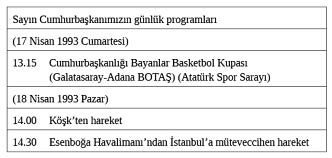

Son Cuma günü, akşama doğru Özel Kalem Müdürlüğü’nce sekreterlerimize onların da masalarımıza bıraktığı notun bir özelliği bulunmuyordu. Hafta sonu programı şu şekilde idi:

Hakikat odur ki, Cumartesi ve Pazar günlerini ve haftanın öteki günlerini de kimse bilemez... Ama uygulama böyledir; bürokrasi işleri düzenler ve elbette gereklidir... Yine aynı gün kendisini ziyaret için bekleyen bir özel heyet vardır: Parti program taslağı üzerinde yaptıkları çalışmaları sunmak üzere Mustafa Çalık, Nabi Avcı, Vedat Bilgin kendisini ziyaret etmek istemektedir.1297
Cumhurbaşkanımızın 17 Nisan 1993 Cumartesi günü için “Özel Kalem Müdürlüğü” bilgi notunda yer almayan önemli bir mülakat vermesi de planlanmıştır. Cumhurbaşkanımızın saat olarak da planlanan bu mülakatı yayına yeni başlayacak olan bir televizyon kanalıyla yapılacaktır. TGRT Televizyonu 22 Nisan 1993 günü yayına başlayacaktır. İlk mülakatın Cumhurbaşkanı Turgut Özal’la yapılması planlanmıştır. Kaya Toperi, Yalçın Özer’i aramış ve “Cumhurbaşkanımız, Yalçın saat 4.00’te gelsin, mülakatı yapalım, dediler” diyerek randevuyu haber vermiştir. Yalçın Özer, vefatın ertesi günü “Biz bu programın çekim hazırlıklarına başlarken Köşk’ten çelişkili haberler gelmeye başladı” diye yazmıştır.1298
Sabahattin Önkibar da şöyle sonradan şöyle anlatmıştır:
“TGRT’nin yayına geçiş yemeği davetiyesini Çankaya Köşkü’ne götüren Cumhurbaşkanlığı muhabirimiz Metin Özer, telefonda ağlamaklı bir sesle şunları söylüyor: ‘Cumhurbaşkanı rahatsızlandı. Ambulansla hastaneye kaldırdılar.’ ”
Başyaver Aslan Güner yirmi yıl sonra “hayatımın en çaresiz ve en uzun günü” diye tanımladığı o cumartesini anlatırken sık sık sesine ve yüzüne yansıyan o tanıdık acısını bir kere daha hissedecekti:
“17 Nisan 1993 Cumartesi günü Orta Asya ziyaretinin yorgunluğunu atmaya çalışıyoruz. Gündüz program son derece hafif. Sadece saat 13.00’te Cumhurbaşkanlığı Kupası maçı var. Ona gideceğiz. Başyaverlikteki makam odama sabah saat 09.00’da geldim. Birikmiş evraklar var. Onları ayıklıyorum. Daha sonra da yakın gelecekte çıkacağımız Uzak Doğu ziyaretinin hazırlıklarına başlayacağım. Resmi elbiseliyim ancak ceketimi ve kravatımı henüz giymemişim. Gömlek ve pantolonla çalışıyorum.
Saat 10.45’te dâhili hattan santral sorumlusu Polis Memuru Erdal aradı:
– Albayım, Hanımefendi Doktor Hilmi (Özkutlu) Bey’i sordu. Evine baktık. Dışarı çıkmış. Çağrısına not bıraktık, dedi.
– Erdal sorun bakalım. Önemli bir şey varsa Alayın doktorunu çağırayım.
Bir dakika geçmedi Erdal tekrar aradı:
– Albayım, Hanımefendi sizin çok acele GATA’dan doktor çağırmanızı istiyor.
İşin ciddi olduğu belli. O vaziyette fırladım. Ceket ve kravatı Çavuş Erdal1299 arkamdan koşturdu. Koşarken yolda telsizle emirler vermeye başladım:
– Ambulans hazır olsun. GATA’ya haber verin. Hazır beklesinler.
10.50’de nefes nefese Köşk’ün üst katına vardım. Salonu yatak odasına bağlayan koridor üzerinde Cumhurbaşkanı yerde hareketsiz yatıyor. Semra Hanım başucunda. O gün nöbetçi olan Deniz Yaveri Remzi Karaca kilitlenen ağzını açarak nefes aldırmaya çalışıyor. Doktor Hilmi yok. Vakit kaybetmek anlamsız. Bu arada ambulans geldi. Sedyeyi getirttim. Koyduk. Ambulansın önünde ben, arkada Özal’ın yanında Başkomiser Turan İnanç ile Polis Memuru Turgay Açıkgöz var. Telsizle merkezi ikaz ettik. ‘Yolları açın. Acil durum. Cumhurbaşkanı GATA’ya gidiyor.’ Siren öttürerek yola koyulduk. Ceket ve kravatı yolda giydim. Tam gaz gidiyoruz. Bu arada Polis Turgay Açıkgöz, Cumhurbaşkanı’nın nabzını tutuyor. Ben nasıl diye sordukça o da atıyor, diye cevap veriyor. Kızılay’a yaklaşırken Turgay seslendi:”
– Albayım nabız giderek zayıflıyor.
Eyvah, kötüye gidiyor. GATA uzak. Daha yakın bir yere götürelim diye düşündüm. Telsizle öncüye talimat verdim.
– En yakın yere Hacettepe Acil’e gidiyoruz. Orayı uyarın.
Saat 11.05’te süratle Hacettepe Acil’e girdik. Cumartesi olması sebebiyle sadece genç asistan doktorlar var. Ama hepsi içten, heyecanla işe sarıldılar. Hemen şok tedaviye başladılar. Saat 11.20 civarında Doktor Hilmi (Özkutlu) yetişti. Artık komutayı ona bıraktım. Bu arada haber verilen hocalar, profesörler birer ikişer geliyorlardı. Özal’ı acilden yukarı kata yoğun bakım ünitesine aldılar. Aklıma geldi Kemal Yamak Paşa’ya, İstanbul’a Doktor Cengiz (Aslan)’a haber verdirdim. Koridorlar giderek kalabalıklaşıyordu. Semra Hanım da gelmiş. Bitkin vaziyette bekliyor. Ara sıra başucuna gelerek yapılanlara bakıyor.
Saat 14.30’a kadar bıkmadan uğraştı doktorlar. Ömer Şarlak Paşa, Yüksel Bozer, Kemal Yamak Paşa toplandılar ve artık bir şey yapılamayacağı kanaatine vardılar. Açıklama yazıldı. Kaya Toperi dışarı çıkarak basına okudu. O ana kadar hâlâ ümit ile bakıyordum. Artık gerçeği kabul etmek zamanı gelmişti. Hıçkırarak ağladım. Memleket büyük bir devlet adamını ben de babam kadar sevdiğim Cumhurbaşkanımızı kaybetmiştim.”1300
Herkes ağlıyordu
Acı haber tez yayılır, her yere ulaşır... Cumhurbaşkanlığı Muhafız Alayı’nda yedek subaylık görevini yapan Asteğmen Berat Gül şöyle anlatıyor:
“Vefatını öğrendiğim anlardı. İçime garip bir hüzün çöktü. Tarifsiz duygularla sağa-sola telefonlar ettim. Baktım ki o gün güneş yerine hüzün doğmuş sanki üstümüze. Annemi aradım ağlıyordu, babam ağlıyordu, kardeşim onu hiç sevmezdi, o da ağlıyordu. Teyzemi aradım o da ağlıyordu. Minibüse bindim, yanımdaki genç ve başörtülü kız ağlıyordu, sonra indim minibüsten, baktım gökyüzü bizlere eşlik etmiş o da ağlıyordu.”1301
Cumhurbaşkanı ölümle pençeleşirken Ankara’da Galatasaray ve BOTAŞ Bayan basketbol takımları da Cumhurbaşkanlığı Kupası’na ulaşmanın mücadelesi içindeydi. İlk yarısı Galatasaray’ın üstünlüğü ile biten karşılaşma, Cumhurbaşkanı’nın ölüm haberi alınınca hemen ertelenmişti.
Acı haber Ankara 19 Mayıs Stadyumuna ulaştığında maçın başlamasına dakikalar kala topbaşı yapmaya hazırlanan Beşiktaş ve Bursasporlu futbolcular neye uğradıklarını şaşırdılar. Hakem Erman Toroğlu, önce “Bana talimat gelmediği sürece ben maçı oynatırım” demişti. Takımlar orta sahada seremoni yapmış, kale ve top seçimi tamamlanmış, Futbol Federasyonu Yönetim Kurulu Üyesi Ufuk Özerten Erman Toroğlu’nun yanına gelerek, maçın biraz daha başlatılmamasını istemişti. Bu arada seyirciler, Özal’ın ölümünden haberli olmadıkları için, maçın başlamasını geciktiren Hakem Erman Toroğlu aleyhinde müthiş bir tezahürata başlamışlardı. Görevlilerin yaptığı ölüm anonsu ile stad bir anda şoka girmişti.
İstanbul’da Fenerbahçe Kocaelispor karşılaşmasında da aynı yok yaşanmıştı. Tribünde taraftarlar tıpkı Ankara’da olduğu gibi, İstiklal Marşı söyleyip saygı duruşunda bulunmuşlardı. “Özal ölmedin, kalbimizdesin” diye sloganlar atmışlar ve stadın bayrakları matem konumuna getirilmişti.
Galatasaray’lı yönetici Adnan Sezgin başkanı bulunduğu sporcular derneğinin Swiss Otel’deki eğlence gecesini ertelediklerini açıklamıştı. Özal’ın Türk sporunun özerkleştirilmesinde tek pay sahibi olduğunu söyleyen Adnan Sezgin, erteleme kararını bu nedenle aldıklarını söylemişti.1302
17 Nisan 1993 Cumartesi günü Özal’ın ölüm haberi ile ilgili herkesin bir hikâyesi vardır.
Ne var ki, bu hikâyelerin hepsi bilinmemektedir. Eşi Semra Özal’ın o sabah başına gelen büyük felaketle ilgili aktardıkları elbette herkesin bilmek istediği en önemli hikâyedir:
“Sabah kalktı. Tıraş oldu, duşunu yaptı, ben de o arada onun kahvaltısını hazırlamıştım. Gittim içeriye. Bizim yatak odasıyla oturma odası arasında küçük bir oda vardır. Orada hem spor aletleri, hem sağlık malzemeleri durur. Gittim, kahvaltı hazır demek için. Gelirken, ‘Biraz yürüyeyim’ dedi. Sonra, ‘Yok yok, şimdi yürürsem, terlerim yeni duş yaptım, vakit yok’ dedi. Ondan sonra da hazırlanıp İstanbul’a geleceğiz çünkü. Hiç sporunu yapmadan, konuşuyoruz. ‘İşte elbisen, gömleğin hazır’ dedim. ‘Hangi elbisemi çıkardın’ diye sordu. İşte konuşa konuşa yürürken, ben önden yürüyorum, o da arkamdan yürüyor. Birden bir ses. Düştü. Birdenbire düştü, inanılmaz bir şey. Birdenbire düştü. Koştum. Burasından (ağzından kan geliyor) böyle bir şey gelmiş. Baktım atmıyor nabız falan bir şey yok, gitmişti yani. Derhal bağırınca, aşağıda nöbetçi yaverler dururdu 24 saat, onlar koştular. Bir garson koştu ve hemen yukarı kapıda duran araba, makam arabası vardı ve aşağı kapıdan ambulansı bile beklemeden onlar kucaklayıp, makam arabasıyla hastaneye götürdüler.”1303
Bu hikâyelerden üç tanesi gerçekten ilginçtir; kalanlar ise tıbbi otoritelerin ve bazı resmi görevlilerin ve gazetecilerin hastane kaynaklarından topladıkları ayrıntılardır; onları da aktaracağım.
Birinci hikâye siyaseten Cumhurbaşkanı Özal’ın Çankaya Köşkü’nde hayatını zindana çeviren Başbakan Süleyman Demirel’e aittir ki sonra onun yerine seçilmiş, dokuzuncu Cumhurbaşkanımız olmuştur; kısa, fakat ilginçtir:
“Ben Aydın’da nutuk veriyordum. Aydın’da halka hitap ediyordum. 17 Nisan günü ve arabanın üzerinde iken bu haber geldi. Ama kalp krizi geçirmiş diye. Konuşmayı kısaca kestim. Vilayete gittik. Vali’nin odasına gittim, oradan Bozer’i aradım. Yüksel Bozer’i. Profesör. Hacettepe’nin Rektörü idi. Ona sordum. ‘Durumu nedir?’ diye. İşte dedi, ‘Çalışıyoruz da, uğraşıyoruz da’ dedi. ‘Hocam, ben başbakanım, cumhurbaşkanının sağlığı başbakandan sorulur, sen bana söyle nedir durum?’ ‘Maalesef’ dedi, ‘Kaybettik’ dedi. Ha! Laf bu. Hemen oradan İzmir Havaalanı’na gittik. Helikopterlerimiz vardı. Havaalanından uçağa bindik, geldik Ankara’ya. Doğru şeye gittim. Orada da aşağı yukarı aynı bilgileri verdiler. Fevkalade üzüldüm ve gayet tabii ki... Kur’an-ı Kerim’de diyor ki: ‘Ölümü herkes tadacaktır.’ Ama ölüm herkes için bir emrihaktır ve çok üzüldüm.”1304
İkinci hikâye eski Başbakan ve ANAP lideri Mesut Yılmaz’a aittir. ANAP lideri Mesut Yılmaz acı haberi aldığında Mersin’dedir. Bilindiği gibi ANAP lideri Mesut Yılmaz’ın son aylarda yıldızı Özal’la hiç barışık olmamıştır; haberi aldığında hissettiklerinin bir de tanığı vardır; Sedat Ergin ANAP liderinin yanındadır ve izlenimlerini ölümün hemen ertesi günü şöyle yazmıştır:
“ANAP’ın seçim otobüsü Petek, Mersin’in dar caddelerinde ağır ağır ilerlerken Mesut Yılmaz’ın kendisine gösterilen sevgiden mutlu olmaması mümkün değildi. Oysa aklı Hacettepe Hastanesi’nde ölüme karşı son mücadelesini vermekte olan Cumhurbaşkanı Turgut Özal’daydı.
Petek otobüsünde bir ‘ironi’ yaşanmaktaydı. Cumhurbaşkanı Özal’a karşı giriştiği ve kazandığı mücadele kendisini eski lideriyle karşı karşıya getirmişti. Ancak aynı zamanda siyasi kariyerinde geldiği noktayı da [...] Özal’a borçluydu. ANAP 1983 yılında Türk siyasal hayatına katıldığında kendisini kurucu üye yapan daha sonra çeşitli bakanlıklar vererek, yukarı doğru ‘önünü açan’ Özal’dan bir başkası mıydı?
Son dönemde yolları ayrılmıştı. Ancak Mersin’de Cumhuriyet Meydanı’nı dolduran on binlerce insanın salladıkları ANAP bayraklarındaki petek amblemi, Özal’la Yılmaz arasında en önemli ortak payda, en önemli manevi bağ değil miydi? Kendisi halka hitaben konuşurken bir dönem müridi olduğu Özal’ın can çekiştiğini bilmekte ve karşısındaki petek amblemlerinde belki de onu görmekteydi.
Petek amblemini Özal bulmuştu. Üstünde konuştuğu Petek, yıllarca Özal’ı seçim meydanlarına ve iktidara götüren otobüstü. Yılmaz, aynı platform kurulurken tutuktu, isteksizdi. Karşısındaki kalabalığın coşku dalgasını yakalayamadı. Konuşmasını kısa keserken veda ederken, ağzından çıkan son cümlelerden biri, ‘Türkiye’nin geleceği yine Anavatan’dır’ oldu.
Yine Anavatan derken hem sahiplenilen, hem de ters düşülen bir mirasın yükü Yılmaz’ın omuzları üzerindeydi.
Yılmaz otobüsün ön tarafına geldikten kısa süre sonra ölüm haberi ulaştı. Haber, Yılmaz’ın çevresinde telaffuz edilmeden sadece bakışlarla aktarıldı.
Berna Yılmaz, gözünde biriken yaşları saklamak için başını cama çevirdi. Petek meydandaki kalabalığı yarmaya çalışırken, dışarıdaki coşku ile otobüsün içindeki sessizlik, acı bir çelişkiyi yansıtmaktaydı. Otobüsten yayılan müzik kesildi.
Özel uçak, bereketli Adana ovasının üzerinde yükselirken, tam karşımdaki koltukta oturan Yılmaz sigarasından derin nefesler çekerek, düşünceli bir şekilde bulutlara bakmaktaydı. Kendisine sordum:
En son ne zaman görüştünüz?
Yanıtı vermeden önce uzun uzun düşündü.
En son gelen yabancı konuğun ziyareti sırasında... dedi.
Ancak bir resepsiyonda gerçekleştiği anlaşılan bu karşılaşmanın tarihi o an Yılmaz’ın hatırlayabildiği bir yakınlıkta değildi.
Duygularını tarif etmesi istendiğinde ise, ‘Derin üzüntü duyuyorum, o kadar’ demekle yetindi, bulutlara döndü.
Gazeteci olarak durmanız gerektiğini hissettiğiniz ve sustuğunuz bir andı.”1305
Sedat Ergin’in eski Başbakan Mesut Yılmaz’ın dramını anlatan bu notlarını insani ve değerli buluyorum.
Üçüncü hikâyenin kahramanı da eski akademisyen, bir siyasetçi, eski Başbakan Yardımcısı ve Dışişleri Bakanı, CHP lideri Deniz Baykal’dır.
Önemi elbette kendisinin daha önce siyaseten karşı olduğu Cumhurbaşkanı Özal hakkında sarf ettiği bir söz nedeniyledir ve Hürriyet gazetesinde ölümün hemen ertesinde yer alan habere göre onun hikâyesi de şu şekildedir:
CHP lideri Deniz Baykal, Özal’ın kalp krizi geçirdiği haberini Silivri yakınlarında Çorlu mitingine giderken almıştır. Bu haberden sonra durumu dakika dakika izleten CHP Genel Başkanı, Çorlu’daki gövde gösterisine dönüşen mitingde hükümet partilerini eleştirirken Cumhurbaşkanı’nın vefatı nedeniyle taraftarlarıyla 1 dakikalık saygı duruşunda bulunmuş ve mitingi keserek derhal Ankara’ya dönmüştür.1306
Hastane önünde
Demek isterim ki, o gün Hacettepe Hastanesi önünde Özal’ın vefatı haberinden önce ve sonra toplananların tamamı rahmetli Cumhurbaşkanı ile barış içinde olmamışlardır. Ama ölüm haberi herkesi hastane önünde buluşturmuştur. Muharrem Sarıkaya’nın yazdığı gibi, Özal’ın öldüğü dakikalarda, Ankara’da aniden bastıran sağanak yağış ise sanki gökyüzünün gözyaşlarıdır.1307 Acı haber ulaşınca bulundukları yerlerden, toplantılarından veya farklı şehirlerden, hatta ülkelerden hızla hastaneye gelebilen şahsiyetler ve aile yakınları şunlardır: Cumhuriyet gazetesine göre, Özal’ın oğlu Ahmet Özal’ın Hollanda’dan diğer çocuklarının da bulundukları yerlerden çağırıldıkları açıklanmıştır.1308 Milliyet gazetesinde yer alan habere göre, Özal’ın 11.15’te Hacettepe Hastanesi’ne getirilmesinin ardından eşi Semra Özal, Kardeşi Yusuf Bozkurt Özal, Yeğeni Hüsnü Doğan, Basın Başdanışmanı Can Pulak ve eski Özel Kalem Müdürü İstanbul Milletvekili Feyzi İşbaşaran derhal hastaneye gelmişlerdir.1309 Eski Sağlık Bakanı ve Ankara Milletvekili Halil Şıvgın hastaneye ilk gelenlerdendir. Malatya Milletvekili Talat Zengin hüngür hüngür ağlamaktadır.1310 Özal’ın doktoru Cengiz Aslan, acil olarak İstanbul’dan gelmiştir.1311
Cumhuriyet gazetesinin haberine göre, hastaneye ilk gelenler Özal’la birlikte parti kurma çalışmalarını yürüten eski ANAP milletvekilleri olmuştur. Daha sonra işadamları Mehmet Nazif Günal ve Ağa Ceylan gelmişlerdir. ANAP milletvekillerinin hastaneye ilgisizliği dikkat çekmiştir.”1312 ANAP milletvekillerinden ilk gelen saat 13.30 Grup Başkanvekili Ülkü Gökalp Güney olmuştur.1313 ANAP İzmir Milletvekili Kaya Erdem’in milletvekili arkadaşlarına sarılarak hıçkıra hıçkıra ağladığı görülmüştür; Turizm eski Bakanı İlhan Aküzüm de elinde mendille gözyaşlarını silmektedir. 1314
Sabahattin Önkibar aktarıyor:
“Kapıda Ankara Valisi Erdoğan Şahinoğlu. Akabinde Feyzi İşbaşaran ve Hüsnü Doğan gözüküyor.
Halil Şıvgın, Kemal Akkaya ve Devlet Bakanı Mehmet Kahraman da içeri geçiyorlar.
TBMM Başkanı Hüsamettin Cindoruk ve Dışişleri Bakanı Hikmet Çetin geliyorlar.”1315
Cumhurbaşkanlığı Başdanışmanı Arif Yüksel, “Bana dün gece gezi beni çok yordu; kendimi iyi hissetmiyorum’ dedi, şeklinde konuşmuştur.1316
Vefat haberinin ardından Anayasa Mahkemesi Başkanı Yekta Güngör Özden, Genelkurmay Başkanı Orgeneral Doğan Güreş, Kara Kuvvetleri Komutanı Orgeneral Muhittin Fisunoğlu, Devlet Bakanı Ekrem Ceyhun Hacettepe Hastanesi’ne gelmişlerdir.1317 Devlet Bakanı Mehmet Kahraman, Turizm Bakanı Abdülkadir Ateş, Dışişleri Bakanı Hikmet Çetin hastaneye gelerek Özal’ın sağlık durumuyla ilgili bilgi almışlardır.1318 Adalet Bakanı Seyfi Oktay, Sanayi ve Teknoloji Bakanı Tahir Köse, Jandarma Genel Komutanı Orgeneral Aydın İlter, Diyanet İşleri Başkanı Mehmet Nuri Yılmaz ve HEP’li bazı milletvekilleri de hastanededir.1319 Ağlayarak hastaneye gelen Yekta Güngör Özden gazetecilere, “Ne söyleseniz duygularınızı anlatamazsınız, çok kötü” diye konuşmuştur.1320 TBMM Başkanı Hüsamettin Cindoruk Özal’ın bulunduğu kata çıkmıştır; Profesör Mehmet Haberal ise Özal’a müdahale yapan sağlık ekibine katılmıştır.1321
O gün öğleden sonra Özal’ın ölüm haberi Ankara dışında pek çok ülkenin başkentinde ve bu arada Şam’da da dikkatle izlenmiştir.
17 Nisan 1993 Cumartesi günü Cumhurbaşkanı Özal’ın ölüm haberini Suriye’de Celal Talabani ve bir milletvekili heyetiyle birlikteyken alan şahsiyetlerden dönemin Halkın Emek Partisi (HEP) lideri Feridun Yazar, yaklaşık 19 yıl sonra A Haber’de Selin Ongun’a şunları anlatmıştır:
“Özal’ın öldüğü gün biz Şam’daydık. Ahmet Türk ile şu anda Irak Cumhurbaşkanı olan Celal Talabani’nin aracındaydık. Diğer arkadaşlar da farklı bir araçtaydı. Talabani basın toplantısı sonrası bize Şam’ı gezdiriyordu. Birdenbire şoföre ‘Dur’ dedi. Radyoda Turgut Özal’ın Arapça haberlerde isminin geçtiğini ve öldüğünü öğrendik. Biz, ‘Çok kötü oldu, Kürt sorunun çözümünde ve demokratik reformların yapılmasında Türkiye’nin Özal’a ihtiyacı vardı’ dedik. Talabani hemen ‘Bu işin içinde suikast olabilir mi?’ diye bize sordu. ‘Tahmin etmemiz mümkün değil’ dedik.”
Feridun Yazar şunları da ekliyor:
“O dönemde Şam’da Abdullah Öcalan ile yemek yediklerini ve Kürt sorununu konuştuklarını; Öcalan’ın Suriye’de kalmaktan bıktığını ve Türkiye’ye dönmek istediğini; ‘Sorunun çözümünde demokratik mücadele vermek istediğini’ ve ‘Umarım bu ateşkes süresiz olur’ diye söylediğini vurguluyor.”1322
Şair ve Hukukçu Sedat Yurtdaş da Diyarbakır Milletvekili olarak katıldığı bu ziyaret hakkında yıllar sonra bir diğer ayrıntıyı aktarmıştır:
“Yıl 1993. Cumhurbaşkanı Turgut ÖZAL’ın isteği ve Mam Celal’in (Celal Talabani) sürece katkılarının öne çıktığı koşullarda DEP’in (Demokrasi Partisi) heyeti olarak aralarında benim de olduğum 6 kişiden oluşan bir heyetle Şam’a gittik. Ardından uzaktan da olsa görünen ‘Bekaa Vadisi’ni solumuzda bırakarak ‘Bar Elias’a basın toplantısının yapıldığı kasabaya eve gittik. Ralli hızında giden araçlarla.
Yanımızda Öcalan’a hediye etmek üzere, daha önceki ateşkes ilânı yaptığı basın toplantısında giydiği askeri üniformanın yanlışlığına işaret etmek amacıyla bir ‘kravat’ ve bir de silahların tümden susması, yerini siyasete bırakması anlamında altın bir ‘kalem’ götürdük.”1323
Saygı Öztürk’ün Kasadaki Dosyalar adlı kitabında yer alan bir belgede bu konuda bazı ayrıntılar bulunmaktadır.
16-21 Şubat 1999 günlerine ait ifade tutanağında PKK lideri Abdullah Öcalan ölüm haberini almasını ve ardından yaptığı ilk değerlendirmeyi ve Özal’ın eşine başsağlığı mesajı gönderdiğini şöyle anlatmıştır:
“16 Nisan 1993 tarihinde bir basın toplantısı daha yaptım. Talabani bana olumlu adımlar atılacağını söylüyordu. [...] 17 Nisan 1993 tarihinde Türkiye’den temsilciler gelecekti. Bu aşamadayken aynı gün saat 11.00’de Turgut Özal’ın öldüğünü öğrendim. Turgut Özal’ın ölümünü suikast olarak değerlendiriyorum. Özal’ın ölümünden sonra eşi Semra Özal’a başsağlığı mesajı gönderdim.”1324
Oral Çalışlar da vefatın hemen ertesi günü Cumhuriyet gazetesinde yer alan haberinde bu bilgiyi doğrulamaktadır.1325
Tıbbi otoriteler, Çankaya Köşkü görevlileri ve hastane kaynaklarından gazeteciler ve son yıllarda televizyon belgeselleri aracılığıyla yansıtılan çeşitli anlatımlar ve tanıklıklar ise asıl büyük hikâyenin yıllardır tartışılan/tartışılacak en önemli tarafını oluşturmaktadır.
Şimdi onları gözden geçirelim. Tıbbi otoritelerin anlatımları şöyledir:
GATA Komutanı Profesör Doktor Ömer Şarlak:
“Tatil günlerinde göreve gitme alışkanlığım nedeniyle 17 Nisan 1993 Cumartesi günü erken saatlerde Gülhane’de idim. Görevli arkadaşlarım ve emir subayım Yarbay Uğur Şengül’le birlikte pek çok klinik ve birimi dolaşmıştım. Önemli hastalarımızın yattığı general-amiral katındaki hastalarımızı da gördükten sonra makam odama döndüm. Kahvemi içiyordum ve saat 10.00 sularıydı. Emir subayım Cumhurbaşkanlığı Köşkü’nden çok acil olarak arandığımı ve hattı bağladığını bildirdi.
Telefondaki şahıs telaş ve heyecan içinde, ‘Şarlak Paşam, acele yanınıza kardiyoloji uzmanı da alarak köşke yetişin. Lütfen çabuk olunuz’ diyebildi. Konunun ciddiyeti ve vahameti apaçık ortada idi. Hemen odamdan çıktım. Çok meraklanmıştım ve istenilen yardımı verebilme sabırsızlığı içinde idim.
Acil durumlarda, hastane dışındaki olgularda kullanılmak amacıyla bir çanta hazırlatmıştım. Bu çantanın içinde hayat kurtarıcı, akla gelebilecek her türlü alet, malzeme ve ilaçlar vardı. En zor şartlarda bile aradığımız tıbbi malzemeyi kolayca bulmamızı sağlayacak bir düzen içinde yerleştirilen iki çanta makam aracıma konuldu. Çağrı cihazı ve telefon bağlantısı ile kardiyoloji profesörleri Tuğgeneral Deniz Demirkan ve Albay Ertan Demirtaş’ın çok acele bir şekilde komutanlığa çağrılmaları emrini, telefon mesajından hemen sonra, vermiştim.
Çok sevdiğim ve takdir ettiğim bu iki profesör arkadaşım çok kısa sürede komutanlığa geldiler. Makam arabama acele bindik ve Cumhurbaşkanlığı Köşkü’ne doğru yola çıktık. Arkadaşlarıma kısaca durumu açıkladım. Hiç konuşmadan Çankaya’ya doğru gidiyorduk. 11. Ordu Donatım Ana Tamir Fabrikası yakınlarında iken araç telefonum çaldı. Cumhurbaşkanlığı’ndan arıyorlardı: ‘Şarlak Paşam, biz Gülhane’ye geliyoruz. Rahatsızlanan Cumhurbaşkanı Turgut Özal’dır, Ambulanstan arıyorum. Gülhane’ye doğru hareket ettik’ dedi. Bu yeni haber durumu daha açık olarak ortaya koymuştu. Biz de aracımızı Gülhane’ye doğru çevirdik.
Acil merkezimizin önünde durduğumuzda iki hocamızla birlikte merkeze girdik. Ambulans girişinden itibaren yoğun bakıma kadar hastamızın oksijenlenmesi ve damar yolundan serum verilebilmesi için yapılabilecekleri gözden geçirdik. Biz bu çalışmaları yaparken idari görevi olan arkadaşlarım da yol ve girişte Cumhurbaşkanı Turgut Bey’i taşıyan ambulansın kolay ve hızlı girişini sağlayacak önlemleri alıyordu.
Biz bu hazırlıklarla uğraşırken tekrar telefon çaldı. Emir subayı Yarbay Uğur Şengül cihazı bana verdi. Telefonla konuşan Cumhurbaşkanı Başyaveri Kurmay Albay Aslan Güner: ‘Komutanım ambulanstan arıyorum. Trafik çok sıkışık, ‘Gülhane’ye de daha çok yol var. Yolumuzun üzerindeki Hacettepe Acil Servisi’ne gireceğiz. Lütfen oraya yetişiniz’ dedi. Ben bu haber üzerine iki hocamız ve emir subayımla birlikte makam aracına binip Hacettepe acil Servisi’ne doğru hızla hareket ettik.”1326
Genel Sekreter Kemal Yamak Paşa:
“O gün saat 10.00-10.30 arasında [...] birden yanımda bulunan koruma polisinin telsizinde telaşlı konuşmalar başlamıştı. ‘Ne oluyor’ diye sorduğumda, ‘Sayın Cumhurbaşkanı hastaneye gidecekmiş’ cevabını alınca, önce bir hasta ziyareti zannettim. Fakat bu fikri, konuşmalardaki telaşla bağdaştıramayınca, ‘Neyle gidiyor?’ diye sordum. Karşıdan gelen cevap, ‘Ambulansla’ydı.
Telsizlerden Hacettepe’ye gittiklerini takip etmiştik. Hemen oraya koştuk. Hastaneye gideli henüz on dakika olmuştu. Yukarıya çıktım, rahmetlinin duran kalbini çalıştırmakla uğraşıyorlardı. Bu arada hemen Gülhane’den gelen Prof. Dr. Albay Ertan Demirtaş’ı (sonra Tuğamiral) gördüm. ‘Durum ümitsiz’ diyordu. Gidip son durumu görüp bilgi getirmesini istedim. Zaten aynı salondaydık. Gidip geldi: ‘Sayın Komutanım, üzülerek arz ediyorum ki yapılanların hepsi boşuna. Cumhurbaşkanımız rahmetli olmuşlar, bu gerçek kabul edilmelidir’ demişlerdi.
Hanımefendi’nin aşağıda bir odada olduğunu öğrenmiştim. Yanlarına gittim. O kadar zor bir durumdu ki, yanlarından geldiğimi, çabaların devam ettiğini ifade ettim. [...] Bir süre sonra hanımefendi saatine baktı ve ‘Paşam, ben bu tür olaylarda geçen yirmi yedi dakikanın ne anlama geldiğini biliyorum. Lütfen beni yanına götürün’ demişti. Hiçbir şey söyleyememiş, yanına gitmek üzere ilgililere emir vermiştim. O sırada eşim de gelip kendilerine katıldı. Daha sonra öğreniyordum. Aslında hanımefendi ‘her şeyin bittiğini’ evden ayrılmadan önce öğrenmiş ve görmüş bulunuyordu.”1327
Büyük hikâyede, buraya kadar anlatılanlar eski Sağlık Bakanı Halil Şıvgın’ın Çankaya Köşkü’nde acil sağlık araç ve imkânlarının yetersizliği hakkında saptamalarını doğrulamaktadır. Özal’ın son ana kadar yakını Ankara Milletvekili Halil Şıvgın’ın benim önemli bulduğum saptaması ise şu şekildedir:
“Sağlık Bakanı olduğum günlerde Cumhurbaşkanı’nın sağlıkla ilgili tedbirlerini görmek için Köşk’e çıktım. Köşk doktoru Hilmi Özkutlu ile görüştüm. Burada bulunan sağlık merkezini gezdim, alınan önlemlerin hiç de yeterli olmadığını gördüm. Bunun üzerine derhal tedbir alınması için uyarıda bulundum. Gerekirse Sağlık Bakanlığı’nın bu konuda çalışma yapabileceğini bildirdim. Hatta bir müsteşar yardımcımı bu konu ile görevlendirdim. Köşk’ün acil bir müdahale gerektiğinde yetersiz kalacağı açıktı. Bu konunun çözümlenmesi için ilgilerle görüştüm. Ancak bize bu konunun Köşk bütçesinden halledilebileceğini, noksanların kısa sürede tamamlanacağını bildirdiler. Ancak görüldü ki, alınması lazım gelen tedbirler alınmamış.”1328
Bu noktada şunu bilmek gerekir ki, olayların içinde bugün sorumlu gibi görülen Çankaya Köşkü görevlileri o gün mevcut imkân ve araçlarla büyük özveri ve olağanüstü hızlı hareket etmiş ve ellerinden geleni son enerjilerini kullanmak suretiyle büyük fedakârlıkla yerine getirmişlerdir. Çankaya Köşkü’nde sağlık imkân ve araçlarının yetersizliği elbette birinci âmir makam olarak Cumhurbaşkanlığı Genel Sekreteri ile eski ve yeni Sağlık Bakanlığı yetkilileri, eski ve yeni hükümetlerle özellikle Cumhurbaşkanlığı bütçesini tartışan/harcama ve yatırım kalemlerini kısarak onaylayan yasama organı TBMM’nin birlikte sorumluluğundadır.1329
Adettir, böyle zamanlarda sorumluluk hep memurların, alt kademelerin üzerine yıkılır. Ancak hakikat söylediğim gibidir. Şimdi de tıbbi otoritelerin anlatımlarını ve tanıklıklarını okuyalım.
Hacettepe Üniversitesi Rektörü Profesör Yüksel Bozer:
“Acil Servis’e geldiğimde ilk bilgileri süratle aldım. Sayın Özal Acil Servis’e gelince derhal damara serum takılmış; EKG’nin monitörü ile takibe alınmış, solunum cihazına bağlanmış, dıştan kardiak masaja başlanmış, defibrile edilmiş, gerekli ilaçlara başlanmıştı. Sonra süratle yukarı Kalp Cerrahisi Yoğun Bakım Ünitesi’ne alınmıştı. Kalp Cerrahları, uzman ve asistanları, kardiyologlar, anesteziyologlar, Hilmi Özkutlu orada idi ve elden gelen her şeyi yapmaya çalışıyorlardı. Ayrıca Cumhurbaşkanlığı Genel Sekreteri Kemal Yamak Paşa bir oda da, başka odada Semra Hanımefendi, Kaya Toperi başka odada idiler.
Sayın Özal, sabah kahvaltıdan sonra yürüme bandına çıkmış bir süre orada egzersiz yapmıştı. Bunun sonunda birkaç dakika geçmeden yere düşmüştü. Kendisini derhal ambulansla GATA’ya götürmeye çalışmışlar, ancak yolda daha yakın olduğu için Hacettepe Acil Servis’e getirmişlerdi.
Yoğun Bakım Ünitemiz, gazeteciler, milletvekilleri, bakanlar ile doldu. Kalabalık aşırı idi. Kaya Toperi benimle konuşup zaman zaman gazetecilere bilgi veriyordu.
Zaman içinde Sayın Özal’ın kalp pompasına bağlanması gerekti; ayrıca geçici pil konmasına rağmen tansiyonu tutabilmek için ilaçların dozunu arttırmak durumunda kalınıldı. Saat 13.30 sıralarında ümitler artık iyiden iyiye kırılmaya başlamıştı. Saat 14.00’ü geçene kadar sabırla ve ısrarla tedaviyi sürdürdük. Arkadaşlarla açık kalp masajının yararlı olmayacağını kararlaştırdık. Acaba, ‘Artık hiç ümit yoktur, müdahaleyi durduralım’ ne zaman kim verecek? İlaçların ve girişimlerin durdurulması kararı önemli idi. Kardiyolog, cerrah ve anesteziyologlarla görüştüm. Birlikte karar verdik, her türlü girişimin durdurulmasını yardımcılarımdan istedim. Zor, sorumluluk gerektiren ve üzücü bir karar. Her şey bitti; Cumhurbaşkanımızı kurtaramamıştık. Semra Hanımefendi’ye durumu izah ettim, çok bitkindi, çocukları ile hastaneyi terk etti.”1330
Cumhurbaşkanlığı Koruma Müdürü Musa Öztürk:
“Erdal diye bir arkadaş var, Başkomiser’dir, o santrale bakar. Çok da yetenekli bir çocuk. Ağlayarak o arıyor. Dedi ki, Efendim, böyle böyle, beyefendi fenalaştı. Saat 10 veya 10’u 5 geçe. Devamlı da bu tip hadiseler için biz bir ‘şok tim’ bekletirdik, üst katta.
Geldim baktım, şok timdeki arkadaşlar, şimdi hayatta, Kadir diye, Başkomiser’dir, göz göze geldik. Yani gözle anlaşıyorduk daha doğrusu biz. Maalesef dedi. Yani biz Hacettepe’ye rahmetlinin cenazesini götürdük.
Şok ekibe haber veriyorlar. Şok ekip kapıda bekliyor zaten. Ambulans çağrılıyor. Bakıyorlar çocuklar, çünkü ilk yardım plan kurslarını bilen arkadaşlardı. Hepsi bakıyor nabzına falan, başında da Kadir diye bir arkadaş vardı [...] onunla göz göze geldik. Daha böyle şeyler sorulmuyor bir an için. Çoğu şeyi biz korumalar göz göze anlaşırdık. ‘Maalesef’ dedi. Yani biz aslında cenaze gitti rahmetlinin Hacettepe’ye.”1331
Cumhurbaşkanlığı Basın Başmüşaviri Metin Yalman:
“O gün Cumartesi’ydi günlerden; gecenin yorgunluğunu üzerimden atmaya çalışıyordum. Gece saat 02.30 falan civarında yatmıştım. O da işte saat 02 civarında sanıyorum o gece yatak odasına çekildiğini ifade etmişlerdi. Bana sabahleyin evde rahat bir şekilde büroya gitmek için hazırlanırken telefon geldi. Dediler ki: ‘Cumhurbaşkanı Özal hastalandı.’ ‘Hayrola Cem!’ dedim. ‘Ciddi misiniz, geliyorum’ dedim. Atladım büroya doğru. Büroya geldim, ‘Nereden duydunuz’ dedim ‘Özal’ın rahatsızlandığını, hastalandığını?’ ‘Efendim ambulanslar geldi kendisini götürüyorlar şimdi’ dedi. İlk olaya müdahale eden yani rahatsızlandığında ilk onu şey yapan Yaveri Remzi Yarbay, o şey yapıyor Denizci Yaveri işte, ambulans geliyor, ambulansta GATA’ya gitmek üzere Cumhurbaşkanı yola çıkarılıyor. Büroya geldim, dediler ki: ‘Yola çıktı’ ‘Nereye?’ ‘GATA’ya gidiyor. Tabii arkadan biz de o telaş içinde çıktık, GATA istikametine doğru. Sonra telsizlerden öğrendik ki Cumhurbaşkanını Hacettepe’ye yönlendirmişler, Hacettepe’nin acilinden hatta direkt alıyorlar ve çok enteresan bir şeydir. Turgut Özal’ı. Oradaki doktorlar onu ifade ediyordu bize, pratisyen doktorlar, nöbetçi doktorlar. ‘Özal geldi, dalga mı geçiyorsunuz, Özal buraya niye gelsin?’ şeklinde. Aslında acil deyince çocuk acilin oraya, yukarıya götürmüşler, ondan sonra aşağı acile gidiyor. Tabii acilden hemen alınıp yukarıdaki sedye üzerinde yoğun bakım, kalp damar cerrahisi yoğun bakım servisine çıkarıldı ve bir anda hastane ana baba gününe döndü. Ne kadar doktor, nöbetçi doktor varsa, ne kadar dışarıdan gelen doktor varsa, Yüksel Bozer, kalp damar cerrahide. Karşı tarafa bakıyoruz Özal’a devamlı kalp masajı yapılıyor. Elleriyle devamlı bastırıyorlar, birisi bırakıyor, öteki alıyor. Devamlı bir kalp masajı içinde Özal’ı geri döndürmeye çalışıyorlardı.
Şok gelir gelmez yapıldı, fakat şokun arkasından sonra kalp masajıyla, yani şoktan geri dönmeyince kalp masajıyla döndürmeye çalışıyorlar. Şoka da cevap vermedi Özal. Ardından herkes toplandı, fakat o başındaki doktor çocuklar hiç ümitlerini kesmediler, devamlı kalp masajı yapmaya devam ettiler. Uzun süre devam edildi, yani ben size şunu söyleyeyim, yarım saat, kırk beş dakika, hatta bir saat kadar devam etti.
Bu arada benim soğukkanlı tarafım tuttu, döndüm dedim ki: ‘Bunu basına açıklamak zorundayız ama basına açıklamadan evvel, bunu Başbakan’a bildirmek zorundayız.’ Başbakan da sanırım seyahatte. Dedik ki, ‘Başbakan’a bildirelim.’ Birisi görevlendirildi, Başbakan’a Özal’ın hasta olduğu ve hayata veda ettiği ifade edildi. O da sanıyorum gezisini yarıda bırakmış. Biz bu haberi alınca ne yapmalıyız? Kaya’ya dedim ki, Kaya Toperi’ye; ‘Sayın Toperi –Kaya Abi diye hitap ederdim kendisine– Kaya Abi sen Sözcü’sün, hayatının en zor işini yapacaksın; git basına açıkla’ dedim. Ayrıca servisin kapısına çıktık. Kaya’nın arkasındaydım; Sayın Cumhurbaşkanımız Özal’ı kaybettiğimizi ifade etti.”1332
Cumhurbaşkanlığı Sözcüsü Kaya Toperi:
“Santraldeki arkadaş, ‘Efendim, Sayın Cumhurbaşkanımızı şimdi hastaneye kaldırdık’ dedi. Çekap mı?’ dedim. ‘Hayır efendim daha ciddi; GATA’ya gidiyoruz’ dedi. Ben hemen arabaya atladım. Yolda işte polis şey etti. Güzergâhın değiştiği, Hacettepe’ye gidildiğini söylendi. Biz de Hacettepe’ye girdik. Hatta önümden Semra Hanım girmiş. Semra Hanım oturdu böyle. Şöyle göz göze geldik. Başını salladı Semra Hanım. Ben doğru yukarıya çıktım o yoğun bakım yerine. İşte herkes orada, doktorlar bir köşede üzerinde çalışıyorlar. Bir ara bizim Doktor Hilmi (Özkutlu) Bey çıktı. ‘Hilmi Bey, nasıl Sayın Cumhurbaşkanı’ dedim. ‘Simsiyah. Nasıl olsun abi?’ dedi, gitti. Yani işin kötü olduğunu anladım. Dua ediyoruz falan, sonra hayati belirtilerinin artık olmadığı anlaşıldı.
İçeride insanlar var. Mesela (Genelkurmay 2. Başkanı) Fikret Küpeli Paşa geldi. (Dışişleri Bakanı) Hikmet Çetin geldi. Sonra ben Genel Sekreter Kemal Yamak Paşa’ya haber göndermiştim o geldi. Ve Başbakan’a haber gönderildi. Ben dedim ki: ‘Ölen cumhurbaşkanı. Bir yerde kamuoyunu hazırlamamız lazım. Ben çıkayım bir şey söyleyeyim.’ ‘Yok’ dediler, ‘Başbakanı bekleyelim’ dediler. Ben yine onları dinledim, aşağı indim. Basına dedim ki, ‘Sayın Cumhurbaşkanımız nabzı sıfıra yakın, çok ağır vaziyette hastaneye getirilmiştir. Durumunda herhangi bir değişme yoktur. Tıbbın bütün imkânları kullanılıyor. Başında uzmanlar var. Daha sonra size tekrar durumu anlatacağım’ dedim.
İçeri gidip yüzümü yıkıyorum, ağlıyorum. Biraz sonra bir daha çıktım. Dedim ki: ‘Durum vahametini artırarak devam ediyor.’ Çünkü orada, yukarıda ölüm raporu hazırlanıyor. Çünkü nihayet ölen cumhurbaşkanı, Özal gibi bir cumhurbaşkanı. Ben kamuoyunu hazırlamak yükümlülüğünde hissettim kendimi. Sorumluluğu kendi üzerime aldım. Sonunda da işte vefatını bildirdik. Sonra da işte Yüksel Bozer’le beraber ben açıklamayı yaptım. Yüksel Bozer tıbbi raporu okudu.
İçeride herkes oturuyor, Başbakan’ın gelmesi bekleniyor. Hatta bir köşede doktorlar Özal’ın üzerinde çalışıyorlar. Öyle gördüm. Öbür tarafta bir kenarda bekliyor herkes ayakta. Yani garip bir durumdu. Ve anladığım kadarıyla Köşk’teyken herhalde vefat etmiş.
Semra (Özal) Hanım bitkin zaten. Göz göze geldik, şöyle bir başını indirdi. Tevekkülle bekliyordu kadıncağız, ne yapsın.”1333
Hacettepe Üniversitesi Rektörü Profesör Yüksel Bozer:
“Hemen Ankara Koleji’nde benden beş altı yıl sonraki sınıftan olduğu halde tanıdığım, arkadaşım Kaya Toperi ile yukarıda Kardiyoloji Servisi’nde bir yer ve sekreter bulduk. O kadar üzgündü ki yazamıyordu. Hemen bir Basın Bildirisi hazırladım, ağlayarak okudu. ‘Tamam Abi’ dedi. Aşağı indik, basına yazıyı okuyarak sonucu bildirdi.
Özal’ın naşını muhafaza için Gülhane Askeri Tıp Akademisi Komutanı Ömer Şarlak Paşa ile (GATA) görüştük. Ellerinde Amerikan yapısı güzel bir tabut varmış, gece geldiler. Bir merasim ile naaşı tabuta yerleştirdikten sonra GATA’ya uğurladık.”1334
GATA Komutanı Profesör Ömer Şarlak Paşa:
“Hacettepe Acil Servisi’ne ulaştığımızda saat 11.15 idi. Merdivenleri koşarak çıktık. Acil durumlarda kullanacağımız çanta da bizimle birlikte getiriliyordu. Yoğun bakım odasının kapısına geldiğimde, odanın sağ köşe yatağında, Turgut Özal’ı gördüm. Çıplak bir durumda yatıyordu ve karın bölgesi ile alt tarafı bir çarşafla örtülü idi. Yüzünde gülümseyen bir ifade vardı. Üzerine eğilmiş iki genç doktor gayretle masaj yapıyorlardı. Genç doktorların göğüs bölgesine her basışlarında, hastaya bağlı olan ve hayati fonksiyonları gösteren monitörde sivri bir dalga oluşuyordu. Kalp masajı yapan el göğüsten kalkınca monitörde sadece düz bir çizgi ortaya çıkıyordu. Bu arada devamlı bir şekilde oksijen veriliyordu.
Kalp masajı amacıyla göğüs bölgesine göğüs bölgesine her basıda monitörde bir dalga oluşması belki yanlıştı ama, bende kalbin tekrar çalışacağı umudunun doğmasına neden olmuştu.
Hacettepe Acil Servisi’ne 17 Nisan 1993 Cumartesi günü saat 11.00 sularında Turgut Özal getirildiğinde, serviste tıpta uzmanlık öğrencisi asistanlar, bir genel cerrahi doçenti ile, tıp fakültesi son sınıf öğrencilerinden oluşan bir grup varmış. Ben ve benimle birlikte gelen iki kardiyoloji profesörü arkadaşım da saat 11.15 civarında orada olduk. Turgut Bey’in Hacettepe’ye ulaştırıldığında gözbebeklerinin genişlemiş olduğu saptanmış. Bu da beyin ölümünün önemli bir belirtisi idi.
Bizim iki kardiyoloji öğretim üyemiz de kalp masajına katıldılar ama, genç doktorlar daha güçlü ve kuvvetli idiler. Cumhurbaşkanımızı tekrar hayata döndürebilmek için canla başla ve yorulmadan kalp mesajına devam ediyorlardı.
Durmuş kalpleri elektrik akımı şokları ile tekrar çalıştırabilen defibralatör isimli cihaz Turgut Bey’in yattığı karyolaya yanaştırıldı. 200’den başlayarak 360 volta kadar çıkılarak yapılan defibrilasyonlarda Turgut Bey’in şişman vücudu yataktan yukarıya doğru hareket ani hareket ediyor, fakat bağlı olduğu monitörde kalp atımları görülmüyordu. Bu uygulamadan hemen sonra iki genç doktor muntazam, ritmik ve etkin bir şekilde kalp masajı yaparken Turgut Özal’a peys maker ve ayak damarından intraaortik balon uygulaması yapıldı. Damar yolundan serum verilmeye devam ediliyordu. Serumun içine gerekli ilaçların yanı sıra bikarbonat da eklenmişti.
Hacettepe Acil Servisi’nde bulunan bütün tıp mensupları, ellerinden geleni çırpınarak, inanıyorum ki, içlerinden dualarını da yaparak ölüm kalım mücadelesi veriyorlardı. Bu arada Hacettepe Tıp Fakültesi Kardiyoloji Profesörlerinden Ali Oto ve Kalp-Damar Cerrahisi Profesörü İlhan Paşaoğlu da geldiler. Bu iki değerli öğretim üyesi de yapılan uygulamalara bazı eklemeler yaptılar. Sonuç değişmiyordu. Yüzündeki gülümseme ile Turgut Özal sanki bizleri izliyordu ve bu yüz ifadesi bende, olan bitenden pek de şikâyetçi olmadığı duygusunu uyandırıyordu.
Hacettepe Acil Servisi’ne girerken zemin katta ve merdivenlerin sol tarafında bulunan bir odada Semra Hanım’ı görmüştüm. Teselli edici bir şeyler söylemek için yanına gittim. Büyük üzüntü ve şaşkınlık içinde idi. Bana, ‘Şarlak Paşa kurtulabilecek mi?’ dedi. Yüzüme dikkatle bakıyor ve iyi bir haber alabilmek, bir umut ışığı sezebilmek istiyordu. Ben de ona gerçeği söylemenin, durumun ümitsizliğini açıklamanın faydasızlığına karar vererek, ‘Hanımefendi, lütfen merak etmeyiniz. İnşallah düzelecektir. Çok yoğun bir şekilde gereken her şey yapılıyor. Bağlı olduğu monitörden uygun sinyaller de alınıyor. Bu sinyallerde biraz daha artma olursa düzelmesi umutlarımız da artacaktır’ gibi için de umut da olan sözler söylemeye çalıştım.
Hacettepe Üniversitesi Rektörü Profesör Yüksel Bozer de acil servise geldi. Yıllardır tanıdığım bu değerli insan hemen birkaç dakika içinde bütün gelişmelere hakim oldu. Zaten Yüksel Bozer Hoca kalp ve damar cerrahisi profesörüdür ve kalp nakli dahil sayısız by-pass ameliyatını başarı ile yapmış bir cerrahtır.
Rektör Yüksel Bozer birkaç dakika sonra Denizli’de bulunan Başbakan Süleyman Demirel’e Cumhurbaşkanı Özal’ın sağlık durumunu açık ve net bir dille iletti. Bu arada ben de Genelkurmay 2. Başkanı Orgeneral Fikret Küpeli’ye telefonla olup bitenleri ve gelişmeleri kısa ve öz bir şekilde sundum.
Telefonumdan yaklaşık yarım saat sonra Orgeneral Fikret Küpeli ve Hava Kuvvetleri Komutanı Orgeneral Halis Burhan, Hacettepe Acil Servisi’ne geldiler. Yüksel Bozer Hoca, komutanlar ve ben bir odada gelişmeleri değerlendirdik. Bozer Hoca, Turgut Bey’in by-pass ameliyatı geçirmiş olması nedeniyle açık kalp masajı dahil olmak üzere başka zorlayıcı tedavilere imkân olmadığını konuşmalar sırasında açıkladı. Biraz sonra komutanlar Ankara dışında olan Genelkurmay Başkanı’na bilgileri aktarmak için ayrıldılar.”1335
Olayları büyük bir heyecan içinde izleyen radyo ve televizyonlardan haber bekleyen milletimize durum hakkında bilgi vermek ve yoğun çabaların devam ettiğini bildirmek amacıyla Profesör Bozer, Genel Sekreter Kemal Yamak ve Büyükelçi Kaya Toperi tarafından basına duyurulmak üzere kesin sonucu ifade etmeyen bir metin hazırlandı. Açıklama Cumhurbaşkanı Başdanışmanı Kaya Toperi tarafından yapılacaktı.
Açıklamanın söylenmeyen bir maksadı daha vardı. Toplanan ve hastanenin önünde devamlı artan kalabalığı ve milletimizi kesin ölüm haberine resmen hazırlamak ihtiyacı düşünülmüştü.
Turgut Özal’ı yeniden yaşama döndürme çabaları kesintisiz sürdürülürken ben de birkaç kez Semra Hanım’ın yanına inip moral vermeye çalıştım. Cumhurbaşkanlığı Genel Sekreteri Kemal Yamak Paşa ve Başyaver Kurmay Albay Aslan Güner de Semra Hanım’ın yanından ayrılmayarak ona destek olmaya çalışıyorlardı.
Sonuçta Azrail galip gelmişti. Saat 14.30’da Profesör Yüksel Bozer, Profesör Ali Oto, Profesör İlhan Paşaoğlu, Turgut Özal’ın Köşk doktorlarından Profesör Hilmi Özkutlu, ben ve orada bulunan diğer meslektaşlarımızın bulundukları bir toplantı yapıldı. Bu toplantıya daha sonra Genel Sekreter emekli Orgeneral Kemal Yamak ve Başdanışman Kaya Toperi de katıldı. Toplantının başkanlığını yürüten Yüksel Bozer Hoca herkesin düşüncesini ve kararını sordu. Şimdiye kadar yapılan tedavilerin hiç yararı olmamıştı. Bundan sonra da artık hiçbir şey yapılamazdı. Rektör Profesör Yüksel Bozer toplantıda bulunanlara ‘Uygulanan tıbbi tedaviler ve yoğun gayretlere rağmen Sayın Cumhurbaşkanı Turgut Özal’ın enfarktüs nedeniyle duran kalbinin tekrar canlandırılamadığı, kalp durmasından sonraki dört saate yakın zaman içinde yapılan kalp masajı ve destek tedavilerine cevap alınamadığı, sonuçta vefat ettiğini’ açıkladı. Bu sonuçtan sonra ölüm haberinin resmen duyurulması gerektiği konusu dile getirildi ve bir metin hazırlanarak açıklamak üzere Büyükelçi Kaya Toperi’ne verildi ve kesin ölüm haberini duyuran açıklama böylece yapılmış oldu.
Bir sağlık savaşı daha kaybedilmişti ve Cumhurbaşkanı kurtarılamamıştı. Kalp krizi ile hastaneye geliş esnasında geçen süre oldukça uzun bir zaman dilimi idi. Bu aralıkta her şey bitmişti.
Turgut Özal’a bağlı serumlar, monitör ve oksijen bağlantıları çıkarıldı. Bir süre yatağında kalan rahmetli Turgut Özal daha sonra Hacettepe Morgu’na kaldırıldı ve bizler de oradan yorgun ve üzgün ayrıldık.”1336
Basına yansıyan taze bilgiler
17 Nisan’da “büyük hikâye”nin hastane sürecinden ertesi gün gazetelere yansıyanlar içinde iki anlatım son derece önemlidir. Bunlardan biri asıl mesleği tıp doktorluğu olan Türkiye gazetesi Başyazarı Yalçın Özer’in hastanede bizzat kendi gözlemleridir. Özal’ın dostu ve hayranı olarak tanıdığım Yalçın Özer bir bakıma “ne oldu?” sorusuna tıbbi bilgilerini de katmak suretiyle açıklama getiriyor:
“Buradaki ilk tespitlere göre Özal’ın durumu kalp adalesi zafiyetine bağlı ileri ölçüde tansiyon düşmesiydi. Bu yüzden beyine yeterli ölçüde kan gelmeyince koma hali ortaya çıkmıştı. Demek oluyor ki Özal’ın By-Pass’lı kalbi dolaşım sistemine kan sevk etmekte yetersiz kalıyordu. Hastane’de bu tespitler yapıldıktan sonra, (kalbe belli aralıklarla otomatik kasılma yaptıran) kalp pili takıldı. Ancak Cumhurbaşkanı’nın durumunda bir değişme olmadı.1337
Ve nihayet Özal, saat 14 civarında bu fâni dünyaya veda ederek ebediyet âlemine intikal etti.
Özal’ın kalp damarlarındaki önceden bilinen rahatsızlığı (koroner daralma ve yetmezlik), bu kadar yoğun ve yorucu çalışma temposuna izin vermedi. Bu yorucu tempoya, son zamanlarda meydana gelen ve Özal için son derece üzücü olduğunu yakından bildiğimiz siyasi gelişmeleri de eklememiz gerekli... Hatta bu sebebi ortaya çıkan sonuçta en başa almalıyız.
DYP-SHP Koalisyonu kurulduktan sonra, Cumhurbaşkanı Özal’ın üzerinde çok ciddi tesirler icra ettiğini bildiğimiz iki önemli gelişme oldu. Birincisi Devr-i Sabık meydana getirme yoluna giren Koalisyonun Özal’a karşı başlattığı saldırılar; (indirme manevraları, By-Pass’lar), ikincisi de ANAP yönetiminde meydana gelen Özal’ı dışlayıcı değişme...”1338
Diğer çok önemli yansıma ise Tuncay Özkan’ın kendi imkânlarıyla hastane kaynaklarından elde ettiği ve ertesi gün gazetesinde yer alan “hastaneden notlar” başlıklı haber-yazıdır:
“Turgut Özal, 11.14’te acil servisten içeriye alındığında doktorlara göre ölüydü.
Köşk’ten Özal’ı çıkaran korumalara göre de ambulansa bindirilirken kendinde değildi. Hatta bazı korumalara göre ölmüştü.
Gözleri yaşlı Köşk korumalarına göre Özal, kendisini çok yormuştu. Son Türkî Cumhuriyetler gezisinde çok yorulduğunu kendisi bile dile getiriyordu. Korumalar, ‘Biz yorgunluktan bitap düştük ama Beyefendi durmadı, çok yoruldu çok.’ ‘Biz ilk kez kendisini bu gezi sırasında konuşmaları gözleri kapalı dinlerken gördük’ diyorlar.”
Tuncay Özkan o sırada hastanede anlatılan bir anekdotu da haber-yazısına eklemiştir; anekdot şu şekildedir:
“Harbiye Orduevi’nde bir gün prostat ameliyatından sonra Turgut Bey rahatsızdı yine. Asansöre biniyoruz. Semra Hanım arkada kaldı. Turgut Bey, ‘Beni bırakma Semra’ dedi. Bunun üzerine Semra Hanım, ‘Ölünceye kadar seni bırakmayacağım, hep yanında olacağım’ dedi. El ele tutuştular ve asansöre bindiler. Semra Özal, eşinin yanında doktorlarla birlikte olan tek kişiydi. Hastanede onun dışında hiç kimseyi ameliyathaneye almadılar. Semra Özal, eşi ölene kadar elini tuttu, gözleri yaşlı.”1339
Hürriyet gazetesinin haberine göre, Cumhurbaşkanı’nın hayati fonksiyonu tamamen sona erdikten sonra vücudunda bağlı bulunan cihazlar çıkartılmış; yüzü açıkta kalacak şekilde beyaz bir örtü örtülmüştür. Semra Özal, çocukları Efe, Zeynep ve damadı Adnan (Güngör) ve gelini Elvan (Özal)’la uzun süre gözyaşları içinde eşini izlemiştir. Özal’ın naaşı başında Diyaneti İşleri Başkanı Mehmet Nuri Yılmaz’la Ankara Büyükşehir eski Belediye Başkanı Mehmet Altınsoy birer dua okumuşlardır. Semra Özal, onların dualarından sonra çocuklarıyla birlikte Özal’ın naaşına sarılmış ve yanaklarından öperek ‘Hoşça kal’ diye vedalaşmıştır. Bu arada çocukları babalarını öpmüşlerdir. Semra Özal, camlı bölmenin ardından bir süre daha eşini seyretmiştir. Daha sonra Rektör Yüksel Bozer’e ‘Diğer hastaları rahatsız ediyor, artık ayrılalım’ demiştir. Bayan Özal’ın bir koluna Zeynep Özal, diğer koluna Rektör Yüksel Bozer girmiş; tam bu sırada Efe Özal da gelerek annesinin koluna girmiş ve oradan uzaklaşmışlardır. Semra Özal, arkasını dönüp tekrar eşine bakarken gözlerinden yaşlar süzülmektedir; kendisine ilaç verilmiş ve serum takılmıştır. Kısa tedavi ardından Bayan Özal, çocukları ve damadıyla hastanenin arka kapısından bir araçla Çankaya Köşkü’ne gitmiştir.1340
2. Başkan: “GATA’ya götürün”
GATA Komutanı Profesör Ömer Şarlak Paşa şöyle devam ediyor:
“Gülhane’ye döndüğümde kafam karmakarışıktı. Her insanın ölümünden sonra duyduğum üzüntü ve yapılan hayat kurtarıcı çabaların tartışması beynimin bütün fonksiyonlarını etkilemişti. Bunları düşünürken telefonum çaldı; arayan, Genelkurmay 2. Başkanı Orgeneral Fikret Küpeli idi.
Fikret Küpeli Paşa çok hızlı düşünebilen, yüksek meziyetleri olan bir komutandı. Hal-hatır sormadan sonra bana, ‘Cumhurbaşkanı Özal’ın naşını Gülhane Morgu’na getirin, uygun bir tabut hazırlatın ve nakil işlemini gece saatlerinde yapın’ emrini verdi.
Cenazenin Gülhane’ye getirilişinden önce Genel Sekreter emekli Orgeneral Kemal Yamak, Hacettepe Hastanesi’nin içinde ve dışında mevcut düzen ve ortamın güvenlik nedeni ile taşıdığı hassasiyeti düşünerek, Sayın Bozer’le istişare ederek, cenazenin Gülhane’ye alınmasının, bu uygulamanın gece ve habersiz yapılmasının daha kontrollü olacağını düşündüğünü ve bu sonucu teklif olarak ilgililere ilettiğini ifade ettiler.
Gülhane’deki arkadaşlarımla hemen hazırlıklara başladık. Kurmay Başkanı Albay Yılmaz Kurtuluş, Komutan İdari Yardımcısı Kurmay Albay Ayhan Arıkan’la önce morga gidip Cumhurbaşkanı’nın naşını koyacağımız yeri gördük. Nöbet yerlerini saptadık.
17 Nisan Cumartesi günü saat 21.00’de ambulans, güvenlik müfrezesi ve ben, Hacettepe Üniversitesi Tıp Fakültesi Hastanesi’ne hareket ettik. Yol boyunca trafik yok denecek kadar azdı ve gece yanan cadde ve sokak lambaları dışında yoğun karanlık her yere hakimdi.
Morgun bulunduğu kapıya ambulansımız yanaştı. Benim makam aracım ambulansın biraz önünde, güvenlik müfrezesinin bulunduğu araç da ambulansın hemen arkasında idi. Morga girip görevlilere rahmetli Özal’ın cenazesini almaya geldiğimizi söyledim. Durumu daha önce Hacettepe Üniversitesi Rektörü Profesör Bozer’e bildirdiğim için görevlilerin durumdan haberli oldukları belli oluyordu. Genel Sekreter emekli Orgeneral Kemal Yamak, Profesör Yüksel Bozer ve diğer bazı ilgililer de biraz sonra morga geldiler.
Cesetlerin konduğu soğutuculu çekmece çekildi. Özal orada çarşafa sarılı olarak yatıyordu. Yüzüne dikkatle baktım. Acilde yattığı gibi gülümseyen ifadesi aynen devam ediyordu. Görevlilerimiz orada bulunanların da yardımı ile, Turgut Özal’ı Gülhane’den getirdiğim özel yapılmış bir tabutun içine yerleştirerek ambulansa taşıdılar.
O esnada Hacettepe morgunun çevresinde büyük bir kalabalık bekleşiyordu. Gecenin yoğun karanlığında bu insanların sadece çıkardıkları sesleri ve hareketlerini fark edebiliyordum. Bu kalabalık zaman zaman, ‘Allahu ekber. Lâ ilâhe illallahu vallahu ekber!’ diye bağırıyorlardı. Onları oraya kadar getiren duygu ve ilgi ne idi? Bunu bilemiyorum.
Ambulansımız rahmetli Özal’ı aldıktan sonra Gülhane’ye doğru hareket etti ve saat 22.00’de Gülhane’ye ulaştık. Morgumuzun kapısında tekerlekli sedye ile Özal’ı 5 numaralı soğutuculu dolaba, Hacettepe Üniversitesi’nde sarılı olduğu yatak çarşafı ile yerleştirdik. Ben de bütün bu işlemler yapılırken nezaret ettim ve nöbet yerlerine bir defa daha bakarak binanın içinden makamıma doğru yürüdüm.
Odama geldiğimde Cumhurbaşkanlığı Genel Sekreteri Orgeneral Kemal Yamak, Turgut Özal’ın kardeşi Korkut Özal, oğlu Ahmet ve Efe Özal, kardeşi Yusuf Bozkurt Özal ve yeğeni emekli Milli Savunma Bakanı Hüsnü Doğan’ı gördüm. Yanlarına giderek hepsinin ellerini sıkarak başsağlığı diledim ve odama davet ettim.”1341
“Sık aralıklarla misafirlerle kahve ve çay ikramı yapılırken daha çok Orgeneral Kemal Yamak Komutanım ve Korkut Özal Bey’i muhatap alarak istedikleri her konuda elimden ne gelirse yardımcı olacağımızı söyledim. Odamdaki misafirlerimizden en çok konuşanı Korkut Özal’dı. Konuşmaları bir yerde noktalamak ve sonuçlandırmak istercesine, ‘Ağabeyim Allah’ına kavuştu. O artık çok mutludur. Ölümünden dolayı üzüntü duyulmaması gerekir’ dedi.
Saat 23.00’e yaklaşmıştı. Ben cenazenin yıkanması, kefenlenmesi ve dini vecibelerin yerine getirilmesi için ne düşünüldüğünü sordum. Bunu sorarken kafamda, ertesi günü, yani 18 Nisan 1993 Pazar günü veya ailenin vereceği karara uygun bir günde Diyanet İşleri Başkanı veya görevlendireceği bir hoca tarafından yıkanıp kefenleneceğini düşünüyordum.
Düşündüğümün tam tersi bir öneri ile karşılaştım. Korkut Özal, ‘Sizin Akademinin Hocaları bu gece bu görevi yapsınlar. Bence en doğrusu budur’ dedi. Bu görüşe Genel Sekreter Kemal Yamak Paşa da katıldı.
Odada bulunanların hepsinin yüzüne ayrı ayrı baktım. Hiçbirinden bir itiraz gelmedi. Ben de bu yeni durum üzerine emri subayıma, Gülhane’de hoca ve gassal kadrosunda bulunan Ahmet Murat ve Veli Düzkaya’yı göreve çağırmasını, gasilhanede gereken her şeyin hazırlanmasını, her şey tamam olunca da bana haber verilmesini söyledim.
Yarım saat sonra hazırlıkların tamam olduğu bildirildi. Bunun üzerine ben odamda bulunanlara: ‘İsteğiniz üzerine akademimizin iki imamı hazır bekliyorlar. Rahmetli Cumhurbaşkanı Turgut Bey’in bu gece yıkanıp kefenlenmesini biraz evvelki kararınız gibi gene istiyorsanız buyurun birlikte görevimizi yapalım’ dedim. Hep birlikte morgun bulunduğu yerdeki gasilhaneye yöneldik.
Gasilhanenin ortasında cenazelerin yıkanması için özel olarak yapılmış suyun kolayca akmasını sağlayan olukları bulunan, mermer, yerden 90 cm yükseklikte, bir insanın yatırılabileceği bir gasıl taşı vardı. Ben, ailenin diğer fertleri ve Orgeneral Kemal Yamak Paşa salonun duvarları kenarında yerlerimizi aldık. İmamlar 5 numaralı morg çekmeceli dolabındaki rahmetli Cumhurbaşkanı’nı getirip bu platforma yatırdılar ve hocalar da görevlerini kusursuz olarak yapabilme gayreti ile çalışmalarına başladılar.
Yıkama ve kefenleme aşamasında Korkut Özal kendine özgü gür sesiyle bir dua veya ilahi karışımını okumaya başladı. Bu duruma benzeyen pek çok yerde bulunduğum halde böyle bir dua veya ilahiyi hiç duymamıştım. Sonuçta kefenlenen Turgut Özal’ı tekrar morgumuzdaki 5 numaralı çekmeceli dolaba yerleştirdiler.
Özal ailesi ve Kemal Yamak Komutan’ı Gülhane’den uğurladım ve ben de evime gittim.”1342
(Ek bilgi: Türkiye gazetesinin haberine göre, Özal’ın naaşı, 12 saat kaldığı Hacettepe Hastanesi’nden alınarak gece saat 22.25’te GATA’ya nakledilmiştir. Askerlerin omuzlarında ambulansa konulurken Koruma Müdürü Musa Öztürk ile Basın Başdanışmanı Metin Yalman da yardım etmişlerdir. Bazı görevliler de dualar okumuşlardır.)1343
Fehmi Koru: “Özal Allah’a yürüdü”
Gece, Çankaya Köşkü’nde derin bir matem vardır. Semra Özal, çocukları ve damadı rezidans olarak kullanılan binanın üst katında bulunurken, taziye için gelenlerle mavi salonda Köşk’ün başyaver, yaverler ve özel kalem görevlileri ilgilenmişlerdir. Köşk’ün girişinde basın odasına vatandaşlar için bir taziye defteri ve Köşk’ün içinde de ikinci bir defter açılmıştır. Bayan Özal, TBMM Başkanı, başbakan, başbakan yardımcısı, siyasi parti genel başkanları dışında kimseyle görüşememiş; taziye amacıyla Köşk’e gelenler alt salonda bulunan defteri imzalamışlardır. Saat 20.30’dan sonra Köşk, taziye ziyaretlerine kapatılmıştır.1344
Kaya Toperi anlatıyor:
“İşte o akşam Köşk’te Semra Hanım oturuyor, herkes başsağlığı taziyeye gelenler var. Biz de yukarıdaydık. Çok duygulandım. Doğan Güreş Paşa geldi. Selam verdi Semra Hanım’a, yanında komutanlar da vardı. ‘Cumhurbaşkanımız buradan sonra bizim sorumluluğumuz altında siz hiç merak etmeyin’ dediler. Cenaze töreniyle ilgili. Sonra Süleyman Bey’le Erdal Bey geldiler. Hatta Erdal Bey önden geldi, Süleyman Bey’in gelmesini bekledi. Beraber yukarı çıktılar. İşte Süleyman Bey, Semra Hanım’a sarıldı. Nazmiye Hanım Semra Hanım’a sarıldı. Erdal Bey de işte ellerini sıktılar.”1345
18 Nisan 1993 günü Zaman gazetesinde “Özal Allah’a Yürüdü” manşeti altında Fehmi Koru’nun bir tezkiye yazısı yer almıştır. Bu yazı önemlidir çünkü yazar pek çok kere kendisiyle beraber olmuş ve son Orta Asya ziyaretinde de Cumhurbaşkanı’nın heyetinde yer almıştır ve bu nedenle yazdıkları değerli bir tanıklıktır.
Fehmi Koru tezkiye yazısında şöyle diyor:
“Türkiye’de Çankaya Köşkü’ne giden yol oldukça kaygan. Oraya doğru yola çıkanların her adımda ayağa diken batmasını, kaymayı, yalpalamayı göze alması gerekiyor. Bu bakımdan siyasilerin anlık fotoğrafları gerçeği tam yansıtmayabiliyor. Önemli olan siyaset adamının son icmalde ‘artı not’ alabilmesi... Yaptıklarının bir bölümüne kızsak, bazı sözlerini tasvip etmesek, onun yerinde olduğumuzda başka türlü davranacağımıza emin olsak bile, hayatının tümünü değerlendirdiğimizde, Turgut Özal, ülkeden ve bizden ‘alacaklı’ gitmeyi başardı.”1346
Fehmi Koru’nun Taha Kıvanç imzalı taziye evi izlenimleri ise bir gün sonra yine aynı gazetede şu şekilde yer almıştır::
“Çankaya Köşkü’nde Özal ailesinin yaşadığı ikinci kattayım.
Cumartesi ve Pazar günleri öğleye doğru kalkma âdetindeymiş. O gün daha erkence ayaklanmış. Kendini iyi hissetmiyormuş. Semra Hanım, ‘Biraz sonra gel’ deyip kahve yapmak üzere mutfağa gitmiş. Gelmediğini görünce bakmak üzere odasına döndüğünde Turgut Bey’in kapının önüne yığıldığını fark etmiş. Çankaya Köşkü’ndeki en son görüntüsü bu. Birçok kişi, Cumhurbaşkanı Özal’ın hayatını daha o an kaybettiği kanaatinde. Hastanede nafile bir uğraş verilmiş...
Etrafıma baktım, gecenin bir vaktinde kapıdaki denetimi aşarak buraya ulaşarak koridorları doldurmuşlardı. Ailenin fertleri ve Köşk’te çalışanlar ile birlikte herkes üzgündü. Semra Hanım gün boyu taziyeleri kabulden bitkin düşmüş, karşıdaki bir odaya çekilmişti. Korkut Özal ile Yusuf Özal, büyük salonda gelenlerle sohbet ediyorlardı. Ahmet Özal apar topar Fransa’dan gelmiş, annesine destek olma gayretindeydi.1347
ANAP’ı beraber kurduğu, her zaman yanında olmuş siyaset arkadaşları oradaydılar. Bürokraside kendisiyle beraber çalışmış dostları da... Anayasa Mahkemesi’nden, Sayıştay’dan, Başbakan’lıktan, YÖK’ten bazı isimler sessizce eski anıları paylaşıyorlardı. Bir ara CHP Genel Başkanı Deniz Baykal, yönetici arkadaşları Uluç Gürkan ve Eşref Erdem’le gelip taziyetlerini bildirdi, bir süre de oturdu. RP Şanlıurfa Milletvekili İbrahim Halil Çelik, Orta Asya gezisi sırasında yakınlaştığı Özal için ağlayanlar arasındaydı. Işın Çelebi, Güneş Taner gibi ANAP’lılar eşleriyle gelmişlerdi. Bir ara Mesut Yılmaz da gelmiş, 15 dakika oturup gitmişti. İki de gazeteci: Cengiz Çandar ve ben...”1348
Tahnit yapılıyor...
GATA Komutanı Profesör Ömer Şarlak Paşa devam ediyor:
“Daha sonraki günlerde rahmetli Cumhurbaşkanı için yapılacak töreni basından öğrendik. İstanbul’a götürülecek ve orada hazırlanmaya başlanan anıt mezara defnedilecekti.
Ölüm olayı 17 Nisan’da olmuştu. Biz o gece dini usullere göre kefenlemeyi yapmıştık. İstanbul’a götürüleceği gün olarak 22 Nisan Perşembe bildirilmişti. Rahmetli beş gün Gülhane’de bekleyecek, tören yapılacak, uçakla İstanbul’a taşınacak ve orada defnedilecekti. Pek çok yerden bu uzun bekleme sonucu cesette kokuşma olabileceği uyarıları alıyordum.
Gülhane Askeri Tıp Akademisi Patoloji Anabilim Dalı Başkanı Profesör Albay Rıfkı Finci ve orada görev yapan değerli arkadaşlarımla konuyu görüştüm. Rıfkı Hoca, o dönemde Doçent olan Ömer Günhan bana geçici tahnit yapılması gerektiğini bildirdiler. Bu düşünce ve kararı Kemal Yamak Paşa ile görüşüp ailesine, Semra Özal Hanımefendi’ye ve Korkut Özal’a ulaştım ve durumu açıkladım. Geçici tahnit yapılırken aileden isteyenlerin de bulunmasını dilediğimi söyledim. Aldığım cevap: ‘Şarlak Paşa, biz size güveniyoruz. Bizim adımıza siz bulunun ve ne gerekiyorsa yapınız’ oldu.
19 Nisan 1993 Pazartesi günü Gülhane’de görevli bütün General arkadaşlarımı çağırdım. Tuğamiral Profesör İnal Ülgenalp, Tuğgeneral Levent Karaca, Tuğgeneral Fahrettin Alpaslan, Tuğgeneral Sabri Devecioğlu, Tuğgeneral Nusret Aras, Tuğgeneral Şakir Tanındı, Tuğgeneral M. Ali Gündoğan, Tuğgeneral Çetin Harmankaya, Tuğgeneral Hikmet Tanboğa, Tuğgeneral Deniz Demirkan’dan oluşan grup hep birlikte otopsi salonuna gittik.
Kefenli olarak rahmetli Cumhurbaşkanı Turgut Özal sedye ile otopsi masasına yatırıldı ve kefeni açıldı. Patoloji Anabilim Dalındaki görevliler formol solusyonları ve büyük enjektörler hazırlamışlardı. Profesör Albay Rıfkı Finci, Doçent Yarbay Ömer Günhan ve otopsi teknisyeni Mustafa Okumuş gerekli tahnit işlemini gerçekleştirdiler. Bu işlemde vücut boşluklarına, yağ ve kas dokularının yoğun bulunduğu bölgelere formol dolduruldu veya 50-100 cc’lik enjektörlerle enjekte edildi. Yüzeysel kokuşmayı önlemek için de vücut yüzeyine, deriye formalin sürüldü ve tekrar kefenlendi.
Daha sonraki günlerde rahmetli Özal için yapılan törenlerde, İstanbul’a uçakla nakledilişinde ve İstanbul’da mezarına konulması esnasında yakınındakiler formol kokusunu yoğun olarak hissettiklerini ifade ettiler.”1349
Nöbetçi tabip subayın tanıklığı...
2012 yılında ilk defa haftalık Aksiyon dergisinin ulaştığı GATA’da nöbetçi subayın el yazısı notlarında anlatılanlar da o sabahın olayları ve Özal’ın naşının Hacettepe’den GATA’ya nakledilmesi ve orada yapılan tıbbi ve dini işlemlere biraz daha açıklık getirmiştir:
“17 Nisan 1993 günü Nöbetçi Amiriydim. Saat 11.00 civarı Komutanımız Acil Servis’e bir ekiple hızla gitti. Ben Genelkurmay 2. Başkanı Fikret Küpeli gelecek sanıyordum. Oysa 15 dakika sonra Cumhurbaşkanlığından ‘Ben Komiser Hamza’ diye bir telefon aldım. Cumhurbaşkanımızın rahatsızlandığını ve Hacettepe’ye götürüldüğünü, acele GATA Komutanı ve ekibinin Hacettepe’ye gelmesi gerektiğini söyledi. Ben hemen araba ile acil servise gittim. Komutanımız benden önce ayrılmıştı. İlerleyen saatlerde Fikret Küpeli geldi. Sedat Celasun’u ziyarete gelmişti. Biz Turgut Özal’ın sıhhati ile ilgili sağlıklı haber alamıyorduk. 14.30 civarında bir telefon aldık ve birinin ‘Turgut Özal öldü’ demesini işittik. Bir anda çok şaşırmış ve inanamamıştım. Hemen TV kanallarını dolaştım. Gerçekten haber doğruydu ama ben inanmak istemiyordum. Bayrakların yarıya indirilmesi için Genelkurmay Vardiya Amirliği’ne müracaat ettim. Onlar da Genelkurmay Nöbetçi Amirliği ile görüşmemi istediler. Oradan da konuyu bize sonra bildireceklerini söylediler.”
Tanık Mustafa Sarsılmaz’ın “Özal’ın ölümü kendi notumdan’’ başlığını verdiği notlar bu satırlarla başlamaktadır. GATA’da o gün nöbetçi subay olan Tabip Binbaşı (Mustafa) Sarsılmaz, 17 Nisan’da tarihî bir olaya şahitlik yapacağını elbette bilmemektedir. Bir gün önceden kendisine Cumhurbaşkanı Özal’ın rutin sağlık kontrolü için hastaneye geleceği haber verilmiştir. Nöbeti devralır almaz, gerekli hazırlıkları yapmış ve Özal’ı beklemeye başlamıştır. Ancak dakikalar ilerlemekte ve Özal’dan haber çıkmamaktadır. Saat 11.00 civarı Cumhurbaşkanlığı’ndan Özal’ın rahatsızlandığı ve acilen Hacettepe’ye götürüldüğü haberini almıştır. 14.30’da öldüğünü öğrenmiştir. 22.30’da GATA’ya Cumhurbaşkanı’nın cenazesi getirildiğinde (Mustafa) Sarsılmaz, nöbetçi amir olarak duruma vaziyet etmektedir. O sabahtan itibaren GATA’da olan bitenleri sonradan el yazısı ile notlar haline getirmiştir. İlginç isimler ve ayrıntılar da düşmüştür notların içine. Özal’ın vefatını araştıran Devlet Denetleme Kurulu, çok sayıda tanık gibi Profesör Mustafa Sarsılmaz’ı da dinlemiştir. Profesör Mustafa Sarsılmaz, o ana kadar kimse ile paylaşmadığı notları DDK’ya sunmuştur.
Peki, altı sayfalık notlarda neler vardır?
Haftalık Aksiyon dergisi başarılı bir gazetecilik örneği vermiş ve Profesör Mustafa Sarsılmaz’ın DDK’ya verdiği orijinal notlara ulaşmıştır.
Emekli Tabip Binbaşı Profesör Mustafa Sarsılmaz’ın notları aynen şöyledir:
“Bu esnada TV’de maçlar iptal edilmiş ve bayraklar yarıya indirilmişti. Bunu da görünce Des. Kıt.dan tören kıtasını çağırttım. Saygı duruşu ile bayrağı yarıya indirdim. Emrimdeki okulları aradım, meğer onlar benden önce yarıya indirmiş. Tahsin Şahinkaya geldi. ‘Başınız sağ olsun’ dedim. Önce inanmadı. Sonra dönüşünde gülümseyerek GATA’dan ayrıldı.
Kur. Bşk. telefonla Özal’ın naaşının GATA’ya nakledileceğini, bu haberin duyulmamasını istedi. Ben de İmamı evinden aldırdım, teknik hizmetlere boya-badana yaptırdım. Elektrikleri gözden geçirttim.
22.30 civarı GATA’ya merhumun naaşı getirildi, morga aldık. Ahmet Hoca yıkama ve dua işlemlerini yaptı. Sadece akrabaları GATA Komutanı, F. Kocabalkan ve iki hoca yıkanma esnasında mevtanın yanında bulundu. Dualar yapılarak morga kondu.
Gece devriye dolaşarak emniyeti gözden geçirdim. Komutanımız ayrılmadan önce bizlere tek tek sarılarak, yanaklarımızdan öptü ve teşekkür etti. ‘Vicdanımda iki şey için sıkıntı duyuyorum. Biri, keşke bütün bunları video’ya alsaydık. İkincisi ise niçin Diyanet İşleri Başkanı’nı yıkama ve dua için çağırmadık’ dedi.
GATA’da yıkama esnasında bulunanlardan tanıyabildiklerim, Kemal Yamak, Aslan Güner, Yusuf Bozkurt Özal, Korkut Özal, Garnizon Komutanı, Dr. Mustafa Özer, Fikri Kocabalkan, hocalar, özel kalem, ihtiram nöbeti tutan askerler vardı. Basından (Kanal 6) Can Okanar oradaydı.”
Profesör Mustafa Sarsılmaz’ın el yazısı notları şöyle devam ediyor:
“19.04.1993 Pazartesi günü:
Patoloji’den Ömer Günhan beni arayarak tahnit konusunda yardımcı olmamı istedi. 1990 yılı literatürünü bularak personel Mustafa Cebelik ile vakumlu aletimiz ve aspiratörle otopsi salonuna gittik. Rıfkı Finci Hoca, Komutan’dan ‘Anatomistlerden birisi bulunabilir mi?’ diye müsaade almış. Saat 14.30’da otopsi salonunda hazır bulundum. 15.00’e kadar hazırlıklar tamamlandı. 10-20 ve 50 cc’lik enjektörlere formalin çekildi. Hazır beklendi. Patologlar yeşil giymişlerdi. Benim beyaz önlükle kalmamı istediler. ‘Sadece aspiratöre gerek duyulursa devreye girersin’ dediler.
15.15’te Komutan geldi. Diğer Generallerin de hazır bulunmasını istedi. I. Hariciye ekibi, Fahrettin Alpaslan’ın emrinde hazırdı. Komutan, Genelkurmay II. Başkanı’ndan ve Cumhurbaşkanı’nın ailesinden ve de Kemal Yamak’tan izin alındığını söyledi ve tahnit işleminin yapılmasını istedi. Bizim anladığımız anlamda tahnit yapılmasına ailesinin müsaade etmediğini, yüzünün veya vücudunun yaralanmasına razı olmayacaklarını söyledi. Bu nedenle Patologlar intratorakal, intraabdominal ve intramuskuler formalin enjeksiyonlarını yaptılar. Cerrahlar, bilhassa Fahrettin Alpaslan nasogastrik sonda ile aspirasyon yaptı ve ardından formalin verdi. Mesaneden sokulan sonda ile formalin verdi. Bizim vakum aletini çalıştırdık. Nasogastrik bölgeden aspirasyon yapıldı. Sırtından da formalin verildi. Rektal yol temizlenmeye çalışıldı ama muvaffak olunamadı.
Bütün bu işlemlerde ekip başı Patolojiden Prof. Dr. Rıfkı Finci ve yardımcıları; doçentler, Ömer Günhan ve Bülent Celasun’du. Cerrahiden ekip başı, Fahrettin Alpaslan, İsmail Arslan ve Köksal Öner’di. Gözlemciler arasında: Prof. Dr. Şakir Tanındı (General, Çocuk), Prof. Dr. Nüzhet Aras (Gen. Cildiye), Prof. Dr. M. Ali Gündoğan (General Dahiliye).
Prof. Tbp. Tuğg. Çetin Harmankaya (Üroloji), Prof. Tbp. Tuğg. Sabri Devecioğlu (Cerrahi), Tümg. Ömer Şarlak, Prof. Tbp. Tuğg. Levent Karaca (Biokimya), Prof. Tbp. Tuğa. İnal Ülgenalp (Kad. Doğ.), Prof. Tbp. Kd. Alb. Nurettin Bayhan (Anesteziyoloji), Prof. Dr. Fikri Kocabalkan (Dahiliye, Baştabip Yrd. raporu bu hocamız tuttu) ve Başhemşire Şennur Ay bulundular.
İşlem bittikten sonra, Komutanımız yeniden kefene sarılmasını ve dua yapılmasını istedi. O zaman İmamlar içeri alındılar. İbrahim Hoca duasını yaptı. Kara çörek kondu, gül suyu döküldü. Fatihaları okuduk. Sedyeye alınırken ben de yerimden fırladım. Komutanımızın hoşuna gitti. ‘Sarsılmaz devam et’ dedi. Özal’ın vücuduna elimin değmesini istiyordum. Eldiven kullanmadım. Sırtını kaldırırken elim değdi. Vücuduna uzun uzadıya baktım. Başı çok genişlemişti. Boyun görülmeyecek kadar küçülmüştü. Vücudun bazı yerlerinde ekimozlar (morarma) vardı. Ama genel olarak vücudu tertemiz ve bembeyazdı. Göğsü göbeği ve kollarının büyük kısmı seyrek kıllıydı. Meme bölgesi ile kol üst kısımları, deltoid kas bölgeleri kılsızdı. Çok tonton ve tatlı vaziyette yatıyordu. Korku verecek görüntüsü yoktu. Ayak parmakları başparmaktan küçük parmağa doğru kısalarak eğimli uzanıyordu. Göbeği çok şişkince idi. Boyu kısaydı.
İşte, çok sevdiğim, düşünürken gözlerimi yaşartan, soluk borumda tıkanıklık yapan, sesimi titreten, kalbimin atışını hızlandıran ‘O Yürekli Büyük’ Rabbine yürümüştü. Allah gani gani rahmet etsin. Günahlarını affetsin. Cennet ve Cemalullah şerefiyle şerefyab etsin, amin.”
Şifa Üniversitesi Rektör Yardımcısı ve Tıp Fakültesi dekanlığını yürüten bu notların sahibi Profesör Mustafa Sarsılmaz Aksiyon dergisinin sorularına da şu karşılıkları vermiştir:
“Aksiyon – Özal GATA’ya getirildiğinde göreviniz neydi?
Gülhane’de binbaşı rütbesinde doktorum. Nöbetçi amirliği diye bir görev var, Komutan adına nöbetçi olmak demek. Komutan Ömer Şarlak’tı, Tümgeneral. Cumartesiydi. Sabah görevi aldım. En ilginç kısmı burası, hep atlanıyor. DDK’nda da dile getirdim. Nöbeti 09.00’da devraldığımda Komutan dedi ki, ‘‘Cumhurbaşkanımız Orta Asya’dan döndü. Chek-up’a gelecek. Uyanık olalım, etrafı temiz tutalım.’ Komutan adına nöbetçiyim. Denetleme yaptım 09.00’da. Bekliyoruz Cumhurbaşkanı gelecek. Saat 11.00 gibi haber yok. 2 saat olmuş nöbetteyim. Bunları tuttuğum günlüğüme kaydettiğim için söylüyorum. İsmi ‘Hamza’ olan ve Polis olduğunu beyan eden biri nöbetçi amirliğini aradı, DDK’ya ‘böyle bir polis memuru var mı araştırılmalı’ dedim. ‘Özal Gülhane’ye değil, Hacettepe’ye gidiyor’ dedi. ‘Rahatsızlandı, yönünü çevirdik, Hacettepe’ye gidiyor.’ Tablo bu.
Aksiyon – Yani o anda Özal yaşıyor mu?
Bakın çeşitli tanıklar konuşuyor, 09.00’da vefat ettiğini söyleyen var, 10.00’da vefat ettiren var. Bana gelen haber, 11.00’de hareket hâlinde, henüz ölmediğine dair bir telefon konuşmasıdır.
Aksiyon – Neden aramış olabilir sizi polis memuru?
Ön bilgidir, takiptir. ‘Yönümüzü değiştirdik, beklemeyin’ manasındadır.
Aksiyon – Sonra?
Hacettepe’ye geçti, bilgi almaya çalışıyoruz. Gelen bilgiler ‘durumu iyi değil’ şeklinde. Televizyonlardan, 14.00 gibi, vefat ettiği söylendi. Beklentimiz var, gelecek, check-up yapacağız; kafamız iyice karıştı. Bize teslim edecekler. Bayraklar yarıya inecek. Herkes faaliyet içine girdi. Cenazesi geldi. İmam refakat eder, morga alınır. Ben işin başındayım. Nöbetçi Amirliği’ne teslim edilmek zorunda, benim sorumluluğumda. Nöbetçi Amiri olarak cenazeyi aldık.
Aksiyon – Neden size gelmiyor da Hacettepe’ye gidiyor?
Anormallik burada başlıyor. Bize gelmesi gerekirken yönü değiştiriliyor. Yön değiştirildiği bize 11.00’de haber veriliyor.
Aksiyon – Hacettepe’de müdahale oluyor mu?
Etrafındaki insanlar konuşuyor ve bunlar da güven vermiyor. ‘Kendi hâline bırakıldı’ gibi şeyler var. Saatler tutmuyor.
Aksiyon – Nasıl geldi? Tabut içinde miydi?
Hayır, üstünde bir örtü ile getirildi. Biz onu morga koyduk. O zaman hafif yollu bir sıcak var, bozulabilir. Komutan katafalka kaldırılacağını söyledi. Duyan geliyor, almıyoruz içeri, yasak. Basından tek Can Okanar vardı. Bir tek ona izin verildi Komutan tarafından.
Aksiyon – Pazartesi günü?
Komutan dedi ki tahnit yapılması lazım. Bu işlemdeki görevim bir Anatomist olarak tahnit işlemine katılmaktır. Tahnit damarlardaki kanın alınması ve yerine formaldehit sıvısının konulmasıdır. Bu sıvı dokuların kokma ve bozulmasını önlüyor. Cesetler üzerinde böyle çalışıyoruz. Bozulmasın diye. İşlemi yaparken kullanacağımız bir pompalı cihazımız vardı. Basınçla çalışıyor o damarları patlatır diye içime sinmemişti. Korkut Özal, ‘Hayır, ben bunu istemiyorum, kardeşimin vücudu bozulmasın’ dedi. Ben buna sevinenlerdenim.
Aksiyon – Ne yaptınız peki?
10-20 cc’lik enjektörlerle formaldehit çektik; karın, göğüs ve eklem boşluğuna bunları enjekte ettik. Bu heyet hâlinde yapıldı. Orada kimlerin bu işe karıştığını Komutan not aldı. İmzalarımız alındı. Etrafta kim var hepsini yazdı, not aldı. Bende de var bunun notu.
Aksiyon – Siz de bu süreci not aldınız değil mi?
Evet, çok etkilendim. Duygusal anlamda. Sevdiğiniz bir insan yani. Tahnit işlemi bitti, bu sefer kefenlenmesi, yıkanması lazımdı. İmamlar geldi. İbrahim Hoca vardı yaşlı bir hoca. O yıkarken sağa sola çeviremez diye ben öne atıldım. Yardımcı oldum. Orada onunla ilgili bütün hususiyetlerini bir anatomist gözüyle yazdım.
Aksiyon – Ne gördünüz? Şüpheli bir durum var mıydı?
Darbe mi, itme mi, yumruklama mı var? Neden dolayı vefat tetiklenmiş düşüncesiyle inceledim. Bundan çıkardığım sonuç şu; kesinlikle bir darbe yok. İtekleme yok. Güzel, pembe, tombul bir insan. El parmaklarından ayak parmaklarına kadar hepsini tek tek yazmışım.
Aksiyon – Neden vücuttan bir kan, kıl örneği almadınız?
Basiretimiz bağlandı, birkaç saç teli çekebilirdim.
Aksiyon – Vücutta darbe olmaması ölümün normal olduğunu gösterir mi? Bir problem var mı?
Fiziki anlamda yok ama ben diyorum ki, kesinlikle bir olumsuzluk var. Çünkü durup dururken neden aniden vefat ediyor. Çok hızlı. Bu anlamda yapılmayanlar beni rahatsız ediyor. Niçin otopsi yapılmıyor? Hacettepe’de yok, GATA’da kesinlikle yok.
Aksiyon – Hiç gündeme gelmedi mi o esnada?
‘Aile istemiyor’ gibi bir tutum sergilendi. Buna şahit olduğum vaka ailenin tahnit yapılmasında kullanılacak pompalı cihazı istememesiydi. İkisi birbirine karışmasın. Bunun otopsi ile bir ilgisi yok. Bir canlı televizyon yayınında bizzat Semra Özal’a “Otopsi yapılmasını istemeyen siz miydiniz?” diye soru yönelttiğimde, “Hayır hayır böyle şey olur mu, tamamen iftira” diyen kendileri oldu. Üstelik stüdyoda o yıllardaki GATA Komutanı Tümgeneral Ömer Şarlak ve Hacettepe Üniversitesi’nin Rektörü Prof. Dr. Yüksel Bozer’in bulunduğu esnada dedi bütün bunları.
Aksiyon – Otopsi olsaydı ne olurdu?
Kıl köklerine, derisine, karaciğerine bakıp zehirlenme var mı ortaya çıkarılırdı. Uzun süreli zehirlenmeler olabiliyor. Çünkü tarihte örnekleri var. İç çamaşır hediye ediyorlar devlet başkanlarına, giyiyor bir müddet sonra ölüyor, arsenik zehirlenmesi. Budur anlamında demiyorum ama böyle şeyler tarihte çok olmuştur. Şüpheli kısımlar bunlar. Bir cumhurbaşkanı, ne diye vefat etmiş? En azından vücudundan bir örnek alıp araştırılmalıydı.
Aksiyon – Kim buna karar verecek?
O devlettir. Aileye bırakılmaz. Devletin sahiplenmesi lazım. En azından Cumhurbaşkanlığı ve Başbakanlık makamlarının sahiplenmesi lazım. Cumhurbaşkanı bir yere gidince Meclis başkanı vekâlet etmiyor mu? Tablo fazlaca karışık.
Aksiyon – Ölüm sebebi ne?
Kalbi sıkıştı diye gidiyorlar Hacettepe’ye, kurtaramıyorlar. Görünen bu.
Aksiyon – GATA’da dosyası var mıydı?
Yoktu. Bize ölü olarak geldi, ölümün nasıl olduğuna dair bir bilgi ve belge bizde bulunmuyordu. Onu doktoru yapacak. Devlet büyükleri bir seyahatten sonra GATA’ya gelir, sistem böyle çalışıyor. O seyahati yapmış bir Cumhurbaşkanı elbette bir sağlık kontrolünden geçirilmeliydi. Bu rutindi.
Aksiyon – Başka rutin olmayan şeyler var? Doktor yok, ambulans bulunmuyor?
Bir devlet başkanını bozuk araba ile götürüyorsunuz. Askeriyeden bildiğimiz her şey sürekli kontrole dayalıdır. Cumhurbaşkanının etrafındaki koruma, onun nakli, bütün bunlar sistematik olarak karar altındadır, rastgele olamaz. Herkes bellidir. Sorumluluk bellidir. Kimin nereye kadar götürüleceği bellidir. Köşk’ün doktoru var; onun için oradadır. Onu orada tutmak için oraya tayin ederler. Maaş verirler. Doktoru var, yine asker olan doktor vardır. Bir doktor üsteğmen komutasında hemşire ve sağlık görevlileri, ambulansı her şeyi vardır. Ambulansın olmaması, bu doktorların olmaması izah edilemez. Bunların yüzde yüz olması ve çalışması gerekir.
Aksiyon – Sizin kanaatiniz ne?
Devlete, millete çok hızlı hizmet etmiş bir insanın ortadan kaldırılmasına yönelik bir faaliyet gibi duruyor, bu devletlerarası da olabilir. Profesyonellik içinde ortadan kaldırmış olabilirler. Zamana vabeste olan zehirlenmeler var. Zehir vücutta birikiyor, 10 ay sonra ortaya çıkıyor. Adam onu yavaş yavaş ölüme götürüyor. Verdiği madde ne ise onun sonucu yıllar, aylar alabilir. Şüphe duyuyorum. Ambulansı çalışmıyor, ortada kalmış, yönü değişmiş, otopsi yapılmamış; bu oldubittiler insanı ürpertiyor.
Aksiyon – Direkt Gülhane’ye gelseydi?
Müdahalesi yapılırdı. Diyelim yine kurtarılamadı, morga kaldırılır ama kesinlikle otopsisi yapılırdı. Hastanedeki prosedür şudur: Devlet büyüğüdür, Başkomutan’dır Cumhurbaşkanı; otopsisi yapılmak zorundadır. Bu her hastane için de geçerli bir kaidedir.”1350
Koruma görevlisi “ölüm günü’nü anlatıyor
Saygı Öztürk’ün Sözcü gazetesinde 22 Kasım 2012 günü yer alan uzun mülakatının başlığı ise “büyük hikâye”nin o gün koruma binasında görevli bir emniyet mensubu gözüyle anlatımıdır ve elbette öteki tanıklıklar kadar ve belki bazı açılardan daha ayrıntılıdır ve gerçekten önemlidir:
“17 Nisan 1993 günlerden Cumartesi.
Cumhurbaşkanı Turgut Özal’ın programı belliydi; bayanlar arası voleybol kupası maçını izlemek için Selim Sırrı Tarcan Spor Salonu’na gidilecekti. Tatil günü olduğu için Köşk sakindi. Köşk’ün doktoru da Seyranbağları semtindeki pazara gitmişti.1351
Korumalar, kendi aralarında mesleki anılarını anlatıyorlardı.
Koruma binasına bir haber geldi, ‘Özal rahatsızlandı’ diye. Daha kestirmeden ulaşabilmek için Cumhurbaşkanlığı Köşkü’nün üst kapısı olarak bilinen ve mutfağa açılan kapısına koşarlarken, bir yandan da Köşk’ün emektar hasta nakil aracı hazırlanıyordu.”
Turgut Özal’ın korumalarından biri o andan itibaren yaşananları Saygı Öztürk’e ayrıntılı şekilde şöyle aktarıyor:
“Köşk’ün üst kapısından giriş yapıp spor salonu olarak kullandığı yatak odasının yakınındaki koridora girdiğimizde, Cumhurbaşkanımız bisikletin yanında eşofmanlı olarak yerde yatıyordu. O bölüme garson hariç kimse giremezdi. Hepimiz büyük bir şok yaşıyorduk. Bizden önce nöbetçi Yaver Remzi Bey’e haber verilmiş, o da anında başyavere durumu bildirmişti.
Cumhurbaşkanımızın yüzü, gördüğümüzde simsiyahtı. Yıllardır yanında olmama rağmen onu hiç böyle görmemiştim. Hiç canlı olduğuna ilişkin bir emare yoktu. Kendisini hasta nakil aracına götürdüğümüzde hepimiz büyük bir endişe içinde idik.
Araçta, Başyaver Aslan Güner ve Başkomiser Turan İnanç da vardı.
Doğrudan Hacettepe’ye götürdük.
Koruma eğitiminde bize acil durumlarda en yakın hastaneye götürülmesi öğretilmişti. Yola çıkarken Başyaver GATA’ya yani Gülhane Askeri Tıp Akademisi Hastanesi’ne götürülmesini istedi. Ancak, kendisine ‘Bize en yakın yer Hacettepe Hastanesi’ dediğimizde gideceğimiz yer belliydi. Biz hareket ederken bir taraftan da Trafik ekipleri yolları açıyor, Hacettepe Hastanesi’ne de ‘Acil bir durum var, Sayın Cumhurbaşkanımız Hacettepe’ye geliyor’ denildi.
Bugün, Özal’ı hastaneye götürürken zaman kaybedildiğini, hatta önce GATA’ya götürüldüğünü, oradan Hacettepe’ye getirildiğini bile söyleyenler var. Bunun doğru olmadığını belirteyim. Bizim, Cumhurbaşkanlığından Hacettepe Hastanesi Acil Servisi’ne gidişimiz 7-8 dakika sürdü. Yollar açıldığı için olabildiğince hızlı gidiyorduk.
Hastaneye giderken, Sağlık Bakanlığı’nın, Dil ve Tarih Coğrafya Fakültesi’nin önünden geçtik. Fakültenin sağındaki ara yolu kullanıp oradan Hacettepe’ye yöneldik. O kadar hızlı hareket ediyorduk ki, yolun karşısına geçmek için kavşağa bile gitmeden yol ortasındaki tretuvarı geçtik.
İlk gittiğimiz yer çocuk hastanesinin kapısı oldu. Siren çalarak Hacettepe hastanesine geldiğimizde, Cumhurbaşkanımızın hasta ziyaretine geldiğini düşünüldü. Yetkililer de bizi hemen orada karşıladılar. Onlar da Özal’ın ziyaret için değil, rahatsızlandığı için getirildiğini orada öğrendiler. Hastanenin acil kısmına geçişe de refakat edenler oldu.
Acil servise geldiğimizde Özal’ın hasta nakil aracından indirilişine, o anda yaşananlara orada bulunanlar tanık oldu. Acil servisten girildiğinde, Özal’ı beyaz boyalı küçük bir odaya götürdük. O an yanındaydım. Bayan bir doktor göz kapağını kaldırdığında ‘Eyvah’ dedi.”
Doktorun bu sözü üzerine biz de panikledik. Doktor hanıma ‘Kötü bir şey mi var?’ diye sorduğumda doktor soğukkanlılığını korumaya çalışarak, ‘Yok... Yok’ sözleriyle karşılık verdi. Hemen ardından Özal, ikinci kata çıkarıldı. Bu arada hastane yetkililerinin de önemli bir bölümü oraya gelmişti. Doktorların kendi aralarındaki konuşmalarından da Özal’ı hastaneye getirdiğimizde vefat etmiş olduğunu anlamıştık.”
Emniyet mensubunun Saygı Öztürk’e anlatımları şöyle devam ediyor:
“Cumhurbaşkanımız bir yere gideceği zaman ‘Çeşnicibaşı’ olarak nitelediğimiz ‘öncü ekipte’ bir arkadaşımız bulunurdu. Onun önemli görevi de garsonla beraber bulunur yiyecek-içecekleri önce o içer-yerdi. Köşk’te bulunan personel zaten belli ve hepsi de güvenilir kişiler olduğu için orada yemeklerin önceden Çeşnicibaşı tadılması uygulaması yoktu.
Özal’ın yatak odasının hemen yanında bulunan spor aletlerinin bulunduğu bölüme sadece Nesrin Hanım girebilirdi. O sabah eğer Özal’a bir şey verildiyse bilen odur. Özal’ın vefatından sonra iki yıl Semra Özal’ın yanında kaldı, daha sonra evlenip yurtdışına gitti. Özal’ın zehirlenmiş olduğuna hiçbir zaman inanmadık, böyle bir şeye ihtimal vermedik.
Özal ölmüştü. Akşam cenazesini GATA’nın morguna götürdük. Orada ilaçlama yapılırken iki arkadaşımız onu bir kez daha görmek istedi. Yanlış hatırlamıyorsam Turgay Bey ile Kadir Bey içeriye girdiler. Çıktıklarında, Özal’ın yüzünün bembeyaz olduğunu söylediler. Hepimiz ağlıyorduk. Morgda rahmetli Özal’ı kardeşleri Korkut (Özal) (ve) Yusuf (Bozkurt) Özal yıkadı.
Korumaların çoğu Özal’la birlikte çalışıyordu. Onun ölümü onları da inanılmaz bir biçimde sarstı. Hele hele, ‘Zehirlendi’ iddiaları karşısında sanki görevlerini yapamamış gibi kendilerini suçlu hissetmeye bile başladılar. O günleri anlatırken parmağından vurulduğunda da akan kanı koruma Bekir Bey’in mendiliyle durdurmaya çalışmışlardı. O mendil şimdi hatıra olarak saklanıyor...”1352
Her mesleğin bazı cilveleri vardır. Özal’ın özel doktoru Cengiz Aslan maalesef 17 Nisan 1993 sabahı Çankaya Köşkü’nde Cumhurbaşkanı’nın yanında olamamıştır. Asya Türk Cumhuriyetleri ziyaretinden dönüşte Ankara’da inmeden İstanbul’a devam etmiş ve ailesinin yanına gitmiştir. 1982 yılından beri Özal’ın doktorluğunu yapan Cengiz Aslan’ı hastasının ölüm haberi İstanbul’da bulmuştur; acı haberi alır almaz derhal Ankara’ya Hacettepe Hastanesi’ne koşmuştur ama çok geç olmuştur. Doktor Cengiz Aslan daha sonra şöyle konuşmuştur:
“Ben en azından şöyle ümit ediyordum. Biz Ekime kadar dayanırız. Ekimde gider doğru dürüst bir çekaptan geçeriz. Muhtemelen ikinci bir baypas ameliyatı bahis konusu olur, diye düşünüyordum ve o sırada bacak damarlarına da müdahale edilmesi gerekir, diye düşünüyordum. Edilecek diye düşünüyordum. Bunu kendisiyle konuştuk. İlk başbakan olduğu zaman defibrilatör aldım yanıma. Defibrilatörü almak istediğimizi söyleyince, ama dedi, Kenan Paşa’ya da bir tane alın, şimdi bende defibrilatör, onun ekibinde olmaması olmaz, bir portal defibrilatör aldık, Siemens marka. Bir de Sayın Kenan Evren’e götürüp hediye ettik. Yani, Turgut Bey tarafından hediye edilen bir aleti götürdük, verdik. Turgut Bey’le bununla boş zamanlarda, bir suikast olduğu zaman, işte kalbi ani durursa neler yapacağımızı, meraklı olduğu için uzun uzun konuşurduk. Ondan sonra, ‘Peki üç beş dakika geçerse ne olur?’ derdi. İşte, ‘Beyin ölümü olur’ filan derdik. ‘İnşallah bunları kullanmaya Allah bizi muhtaç etmez’ derdi. Yanında yoktum ölümü esnasında.”1353
Sekizinci Cumhurbaşkanı Özal’ın öldürüldüğü iddialarında benim ciddi bulduğum tek senaryo Profesör Sevil Atasoy tarafından ortaya atılmıştır:
2013 yılında popüler eserinde Özal’ın ölümü çevresinde baş gösteren iddiaları ve yirmi yıl sonra kabrin açılması ve otopsi bulgularının yayımlandığı “Adli Tıp Kurumu Raporu”nu bilimsel literatüre göre değerlendiren ünlü adli tıp uzmanımız “Atenolol” adlı ilaçla zehirlenmenin mümkün olabileceğini yazmıştır.1354
Özal 17 Nisan 1993 Cumartesi günü eceliyle mi veya bir başka yoldan mı öldüğü ya da öldürüldüğü kamuoyunda ebediyen tartışılacaktır.
Tıpkı, Fatih Sultan Mehmet Han gibi...
Hocam Profesör İlber Ortaylı, “ölümüyle kaos başladı” dediği Fatih Sultan Mehmet’in vefatı hakkında şu bilgileri aktarmaktadır:
“1481’in 3 Mayıs’ında [...] bütün zamanların en entelektüel mareşali ve hiç şüphesiz Rönesans döneminin en bilgin hükümdarı Gebze sahrasında öldü. Öldüğü zaman hekimlerin ilk yaptıkları, görkemli fatihin nefes alması için kaftanını çıkarıp kesmek oldu.
Son nefesini verişi, torunlarından Kanuni Sultan Süleyman’ın şiirine hak verdirir: ‘Olmaya devlet cihanda bir nefes sıhhat gibi.’ Cihan padişahı son nefesini zor aldı. İtalyan hekime Venediklilerin rüşvet vererek kendisini zehirlettiği söylendi. Yeniçerilerin sevmediği fakat geniş halk kitlelerinin medreseler ve tarikat ehlinin bayıldığı Şehzade Beyazıt’ın adamlarının bu işi yaptırdığı söylendi. Hünkârın ölümü bir sır; deniz mahsullerine çok düşkün olduğu için bir türlü gerekli perhizi uygulamadığı gut hastalığı dışında ani öldürücü bir hastalığı yoktu.”1355
Harput hoyratı: “örtüldü, tahtalandı...”
Yakın dostu Cengiz Çandar 20 ve 21 Nisan 1993 Çarşamba ve Perşembe günlerinde Ankara’da ve İstanbul’da düzenlenen cenaze törenlerine halkın katılımını değerlendirirken bir gazeteci olarak Özal’a karşı basının pozisyonu hakkında ilginç bir saptamada bulunmuştur; şöyle yazmıştır:
“İstanbul’da yaşanan sadece bir cenaze töreni değildi. Bir büyük ‘toplumsal deprem’di ve bu depremin sarsıntısı sismik etkilerini siyasi geleceğimize kaçınılmaz olarak yayacaktır. Ama genel çizgileri itibarıyla basının bunu kavraması mümkün değildir.
Niçin değildir?
‘Sırça Köşk’lerden çıkamadığı için. Son günlerin manzarası ile basının son yıllarda Özal’a ilişkin tutumu arasında büyük bir uçurum bulunduğu anlaşılıyor. Toplum meğerse Özal’ı böyle benimsemişken, basının bilinen tavrı hatırlandığında, bu işte bir yanlışlık olmalı...
Toplum ile basın buluşamamış...
Özal ile ömrü boyunca itişip kakışan, onu çarpıtan veya anlamayan, onunla didişmeyi mesleki performans haline getiren kesim, bir-iki övgü ve saygı makalesinin ötesinde, ‘Özal olgusu’nun gerçek boyutlarını yakalayamadı. Ülkenin yepyeni sosyolojik ölçülerini haliyle göremezler...1356
Ankara ve İstanbul’da birbiri ardına yapılan cenaze törenleri şu şekilde olmuştur.
Birinci olarak Özal, Cumhurbaşkanı olarak resmi değil dini bir tören istemiş ve Ankara’da bir yerde değil, İstanbul’da kendisinin belirlediği yerde gömülmek istemiştir.
Yakın dostu, işadamı Ali Coşkun, Turgut Özal’ın ölüm haberini İstanbul’da Sabahattin Zaim ve Nevzat Yalçıntaş’la bir toplantıdayken almıştır. Bu şok haberin ardından ilk yaptığı şey, Özal’ın kendisine ilettiği vasiyetidir. Özal, 17 Eylül tarihinde Adnan Menderes’in kabri başında hatim duası okunurken Coşkun’a haber gönderir. Ali Coşkun, Cumhurbaşkanı’nın yemek davetine katılmak üzere Çırağan Sarayı’na geçer. Menderes’in defnedilişi konuşulurken Özal birden durur ve Ali Coşkun’un gözlerine bakarak; ‘Ali, sen bir gün bir şey söylemiştin. Bu ölüm marşı Şopen’in bestelediği; köpeği ölmüş yeise kapılıp o duygularla bestelemiş, diye. Beni devlet merasimiyle nakletmeyin. İslami usullerle defnedin’ ‘ayrıca cenazem Ankara’daki devlet mezarlığına da gömülmesin; mümkün olursa, İstanbul’da Adnan Menderes’in mezarı yanındaki müsait bir yere defnedilsin... Fatih Sultan Mehmet’in manevi ruhaniyeti altında bulunmak istiyorum’ diye konuşmuştur.1357
İşadamı Ali Coşkun şöyle devam etmektedir:
“Hemen muhterem eşlerine faks çektim. Semra (Özal) Hanım’la irtibat kuramadım. Özel Kalem Müdürünü buldum. Telefonla görüştüm; sonra da faksı geçtim. Korkut (Özal) Bey’e, Yusuf (Bozkurt Özal) Bey’e, Hüsnü Doğan Bey’e faksı iletmelerini söyledim. Sonradan Hüsnü Doğan Bey’den duyduğuma göre, benim mesajımı bakanlardan oluşturulan cenaze komitesine de ulaştırmışlar ve bunu dikkate almışlar. Başbakan Süleyman Demirel’in de olurunun alınmasıyla, rahmetli Özal’ın vasiyetinin aynen yerine gelmesine vesile olduk. Sonradan öğreniyorum ki, buna benzer vasiyeti, son ameliyatından önce kardeşi Korkut Özal Bey’e de yapmış. Bana, yazılı olarak vasiyetimi hazırlıyorum demişti; demek buna fırsat kalmadı.”1358
Başyaver Aslan Güner, ABD’ye, prostat ameliyatı için Houston’a gittiklerinde Özal’ın gömülmek istediği yer konusunda daha önce kendisinin tanık olduğu bir konuşmasını şöyle anlatmıştır:
“21 Nisan 1992 Salı günü saat 14.00’te Ankara’dan kalktık’ diye söze başladı Orgeneral Aslan Güner ve ameliyat öncesi 1 Mayıs Cuma günü Pakistanlı Müslümanların devam ettikleri bir camide namaz kıldıklarını ve yolda kardeşi Korkut Özal’ın bir ara konuyu ölüme getirdiğini ve:
“– Vasiyetini Süleymaniye’ye yap. Annemin yanına gömülürsün, dediğini, fakat Cumhurbaşkanı’nın cevabının çok kısa olduğunu:
– Daha güzel bir yer var ve yeri orada söyledi. Şimdiki gömüldüğü yeri tarif ediyordu.”1359
Bu sırada Ankara’da da resmi cenaze töreni hazırlıklarıyla ilgilenilmektedir. Genel Sekreter Kemal Yamak Paşa’nın anlatımı şöyledir:
“Her şeyin kontrollü olması için, Genelkurmay Başkanlığı’na cenazenin GATA’ya naklini teklif ettim. Uygun bulundu. Merasimi de oradan başlatacaktık.
Sayın Cumhurbaşkanı Vekili’yle (Hüsamettin Cindoruk) görüştüm. Defnedilecekleri yer ve merasimle ilgili, Hanımefendi ve ailenin düşüncelerini, isteklerini ve kendi düşüncelerimi arz ettim. ‘Ne gerekiyorsa ve nasıl isteniyorsa, yapılmasını rica ediyorum’ dediler. Ankara ve İstanbul’daki törenler, özellikle asker arkadaşlarımın çok büyük ilgi, destek ve yardımlarıyla rahmetli cumhurbaşkanının şanına yakışır şekil, ölçü ve düzen içinde çok güzel oldu.
Özellikle İstanbul’da mezar yeri tespit ve mezar hazırlama konusunda o günlerde İstanbul Belediyesi’nde görevli olan, Sayın Tuğrul Erkin’in gayret ve çabaları için, daha önce yaptığım teşekkürü burada yeniden tekrarlıyorum.”1360
Genel Sekreter Kemal Yamak Paşa şöyle devam ediyor:
“Halkın her iki şehirde, kortejin geçtiği her yere, yola ve camilere koşmasını, korteje eşlik etmesini, ilahilerle takip etmesini, rahmetliye beslenilen sevgi ve güveni coşkuyla sergilemiş olmasını, benim gibi unutmayanlar çoktur. Ama içinde yaşayarak unutmamak bambaşka bir duygudur.”1361
Ankara ve İstanbul’da yapılan bu cenaze törenlerinin ayrıntıları hakkında Başyaver Aslan Güner’in anlattıkları yeterli değildir:
“21 Nisan Çarşamba günü Ankara’da devlet töreni yapılmasına, 22 Nisan Perşembe günü de İstanbul’da dini törenle toprağa verilmesine karar verildi.1362
22 Nisan Perşembe günü öğle namazından sonra Anıt Mezar’da ellerimizle toprağa verdik.”
Ve eklemiştir:
“O gülen yüz solmuş, o düşünen beyin durmuştu. Aramızda uzun vadeli programları tartışırken Allah’ı kastederek bize hep şunu söylerdi: ‘Unutmayın yukarıdakinin de bir kompütürü var. O da hesaplar, programlar yapıyor ve asıl olan onun yaptığıdır.’”1363
Cenaze töreninde Ankara’da Bilkent Üniversitesi’nden 50 öğrenci, İstanbul’da da İstanbul Üniversitesi’nden bir grup öğrenci yakalarında Özal’ın fotoğrafıyla yer almaktadır. Cumhurbaşkanı Özal tarafından daha önce seçilen ve imzalanmış fotoğrafından oluşan yaka kartları ki bunlar 100’er bin adet basılarak dağıtılmak üzere ilgililere verilmiştir.1364
Ankara’da cenaze töreni şu şekilde yapılmıştır:
Fehmi Koru’nun anlatımıyla cenaze kaldırılırken Ankara’da hava “bir kapanıp yağmur yağıyor, bir açıp bozkır güneşi gibi ısıtıyordu.
Ankara’nın bulvarları, caddeleri, sokakları, ‘tekbir’ sesleriyle inledi. İnsanlar hiçbir yerden davet almadıkları halde, ona sevgilerini göstermek için ölümünü vesile bildiler.”1365
Sekizinci Cumhurbaşkanı Özal için ilk resmi tören TBMM’de düzenlenmiştir.
TBMM’de verilen resepsiyonda “mini zirve” yapan Azerbaycan Cumhurbaşkanı Ebulfeyz Elçibey ile Ermenistan Cumhurbaşkanı Ter Petrosyan daha sonra Büyük Ankara Oteli’nde buluşmak için randevulaştılar. İlk görüşmede her iki liderin samimi şekilde el sıkıştıkları görüldü. Başbakan Süleyman Demirel resepsiyonda Petrosyan’a hitaben, “Niye kan dökülsün? Bir araya gelin, anlaşın. Biz öyle istiyoruz, dünya öyle istiyoruz” diye konuşmuştur. Saat 17.15’te otelde bir araya gelen Elçibey ve Petrosyan yaklaşık yarım saat baş başa görüşmüşlerdir. Petrosyan görüşmenin ardından, “Karabağ meselesine AGİK çerçevesinde yol bulmaya çalışacağız” demiştir.
Başbakan Süleyman Demirel de Başbakanlık Konutu’nda Ermenistan Cumhurbaşkanı Ter Petrosyan’la 1,5 saat görüşmüştür.1366
22 Nisan 1993 günü Türkiye gazetesinde “Rahmet” başlığı altında yer verilen Ankara ve İstanbul’da düzenlenen cenazelerle ilgili izlenimler şöyledir:
“Rahmet
TBMM önünde yapılan ilk töreni, sonra Kocatepe Camii’ne kadar devam eden korteji ve camideki töreni hiç bu kadar yerli ve yabancı basın mensubu, televizyoncu da takip etmemişti.
Kortej güzergâhındaki insanlar akın akın Kocatepe Camii’ne akıyordu.
Tekbirler getirerek.
Allah-u ekber... Allah-u ekber...
Yer gök inliyor tekbirden...
Bir vatandaşa soruyorum; Özal’ın cenaze töreni için Kastamonu’dan, ötekisi Erzincan’dan, bir başkası Van’dan, Ağrı’dan gelmiş bir grup arkadaşı ile. Saatlerdir yollarda imişler.
Buradan da İstanbul’a gideceğiz.
Müslüman Türkiye diye bağıran gençlerin ellerinde taşıdığı pankartlara bakıyorum. ‘Dindar Cumhurbaşkanı’. Bir başkası da ‘Sivil Cumhurbaşkanı’, onun yanındakine ise bir kelime daha eklemiş gençler ‘İnançlı, Sivil Cumhurbaşkanı.’
Kortejin geçtiği yerde geniş güvenlik tedbirleri var.
Polisler, askeri birlikler ve halk.
Gözleri yaşlı, yaşmaklı, başörtülü, eşarplı ve başı açık hanımlar, kolkola, yan yana yürüyor Özal’ın arkasından... 80 yaşını aşkın iki nine ve dede ellerinde Türk bayrağı tekbir getirerek Mithatpaşa yokuşunu çıkıyor Kocatepe’ye varmak için.
Yokluğuna zor dayanacağız diyor bir grup.
Cenaze için Erzurum’dan gelen son model minibüs nasıl olmuşsa yasak yola girmiş, Elazığlıların otobüsü gibi.... Polis durduruyor ve oraya park ederek yolcuların kortejle birlikte Kocatepe’ye çıkabileceğini söylüyor... Onlar da öyle yapıyor... Soruyorum kendilerine ‘Sizi cenaze törenine gelmeye kimse zorladı mı?’ ‘İki elimiz kanda olsa dahi Cumhurbaşkanımıza karşı bu tarihi görevimizi yapmak üzere yaya bile yollara düşer gelirdik... Sen ne diyorsun bey? Turgut Bey Çankaya’dan bizim sesimizdi, benim sesimdi.
Sonra da ağlıyor, dualar okumaya başlıyor...
Trafik polislerinin telsizlerini dinliyorum... Bütün yollarda akın akın otobüslerle halkın Ankara’ya cenaze için hâlâ geldiğinin bildirildiğini duyuyorum.
Sonra da bir dikkat çekiliyor... Arabalar, otomobiller cenaze töreninden sonra Turgut Özal’ın Fatih Camii’nde kılınacak cenaze namazı için İstanbul’a gidecekler...
Anlaşılıyor ki tedbir anonsları TEM için...
Kocatepe’de sabahın erken saatlerinden beri Kur’an okunuyor. Çoğu camide de selâlar varildi.
Tekbirler getirildi.
Özal’ın cenazesi camiye getirildiğinde tekbirler daha da fazlalaştı. Öğle ve cenaze namazı sadece camide değil, avlularda, bahçelerde, yollar, caddelere kâğıtlar, naylonlar serilerek de kılındı.
Cumhurbaşkanımızın naaşı musalla taşından alınırken caddelere koşan insanlar, yine tekbirlerle, dualarla Özal’a olan son görevlerini yerine getirmenin hazzını yaşıyordu.
Tâ ki İstanbul’a yolcu edene kadar...”1367
Fethullah Gülen Hocaefendi de Kocatepe Camii’ndeki cenaze törenine katılmıştır.1368
Yine Türkiye gazetesinin yazdığına göre, Özal’ın naaşı THY Dicle uçağıyla saat 16.50’de İstanbul’a getirilmiştir. Cenaze Özal ailesi, ANAP Genel Başkanı Mesut Yılmaz, İstanbul Valisi Hayri Kozakçıoğlu, I. Ordu Komutanı İsmail Hakkı Karadayı, İstanbul Büyükşehir Belediye Başkanı Nurettin Sözen, İstanbul Emniyet Müdürü Necdet Menzir ve diğer protokol tarafından karşılanmıştır.1369
Kaya Toperi, Faruk Mercan’a Özal’ın naaşını taşıyan Dicle uçağıyla İstanbul istikametine uçarken eşiyle birlikte gördükleri inanılmaz bir sahneyi şöyle anlatmıştır:
“Uçakta gidiyoruz, tabutun başında nöbet tutuyoruz. Eşim dürttü. Baktık sağda iki tane F-16 gidiyor. Sola baktık iki tane F-16 gidiyor. Ankara’dan İstanbul’a kadar ikisi sağda, ikisi solda F-16’larla gittik. Özal’ın Türkiye’de övündüğü üç şey vardı: F-16’lar, GAP ve otoyollar. Ve F-16’lar Özal’ı İstanbul’a kadar götürdüler. Çok duygulanmış, ağlamıştım.”1370
23 Nisan 1993 günü Zaman gazetesinde yer alan izlenim haberlerine göre Cumhurbaşkanı Özal’ın naşını getiren kortej saat 10.45’te Fatih Camii’ne ulaşmıştır. Naaşı taşıyan askeri araca 20 motosikletli Polis eşlik etmektedir. Askeri araçtan alınarak camii avlusunda hazırlanan özel katafalka konulan naşın iki ucunda 1’er General saygı nöbeti tutmuştur.
Özal’ın naşını takip eden kortejle çocukları Ahmet Özal ve Efe Özal, kardeşleri Korkut Özal ve Yusuf Bozkurt Özal, yeğeni Hüsnü Doğan da camiye gelmişlerdir. Camide bulunanlar Özal ailesine başsağlığı dilemişlerdir. General ve amirallerin 5’er dakikalık nöbet tuttukları Özal’ın naaşı başına gelen çocukları ile kardeşleri dua etmişlerdir.
Naaşın katafalka konulması ardından öğle namazına kadar hatimler okunmuştur.
ANAP lideri Mesut Yılmaz, eşi Berna Yılmaz ile birlikte saat 11.30’da camiye gelmiştir. İstanbul Süryani Kadim Cemaati Ruhani lideri ve Patrik Vekili Filukssinos Yusuf Çetin’in de bulunduğu cami avlusuna daha sonra İşadamı Sakıp Sabancı, Eski Cumhurbaşkanlığı Konseyi Üyeleri Tahsin Şahinkaya ve Nejat Tümer ile çok sayıda sanatçı da hazır bulunmuştur.
Başbakan Süleyman Demirel ve Başbakan Yardımcısı Erdal İnönü Cumhurbaşkanı Özal’ın cenaze namazına katılmak için saat 12.50’de Fatih Camii’ne gelmişlerdir. Demirel ve İnönü ile birlikte Devlet Bakanları Ekrem Ceyhun, Cavit Çağlar, Akın Gönen ve Şerif Ercan, İçişleri Bakanı İsmet Sezgin ile Tarım ve Köyişleri Bakanı Necmettin Cevheri de Fatih Camii’ne gelmişlerdir.
Başbakan ve bakanlardan önce RP Genel Başkanı Necmettin Erbakan, YDP Genel Başkanı Hasan Celal Güzel, siyasi partilerin TBMM Grup Başkanvekilleri, eski Başbakan Bülend Ulusu, YÖK eski Başkanı İhsan Doğramacı, Türkiye Hahambaşısı David Asseo da Camii’de hazır bulunmuştur.
Cenaze namazına katılmak isteyen yüz binlerce vatandaş, sabahın erken saatlerinden itibaren camii avlusunu ve çevresini doldurmuşlardır. Cami avlusundaki kalabalık sebebiyle zaman zaman izdiham yaşanırken, yapılan anonslarda bayılanların olduğu ve halkın bulunduğu yerden hareket etmemesi istenmiştir. Camii içerisinde protokol için ayrılan bölümde güvenlik görevlilerince güvenlik koridorları oluşturulmuş; polis helikopterleri de havada güvenlik uçuşları gerçekleştirmiştir. Camii avlusunda ve çevresinde, “Eserlerinle Yaşayacaksın”, “İlkelerini Sen Olmasan da Yaşatacağız”, “Ardından Bir Ulus Ağlıyor”, “Dindar ve Sivil Cumhurbaşkanımız” yazılı pankart ve Cumhurbaşkanı Özal’ın posterleri yer almıştır.
Musalla taşının arkasında Özal Ailesi, İstanbul Valiliği, İstanbul Emniyet Müdürlüğü, Türk Silahlı Kuvvetleri ile çeşitli kişilerin ve kuruluşların çelenkleri yer almıştır. Naaş, Fevzipaşa Caddesi’nden Fatih Camiine götürülürken, tekbir getiren bir grup vatandaş cenazeye yaklaşmak istemiş; kol kola girerek koridor oluşturan güvenlik görevlileri bu gruba engel olmuştur. Naaş Fatih Camiinden alındıktan sonra bandonun Chopin’in cenaze marşını çalması vatandaşlar tarafından protesto edilmiştir. Ancak bando söz konusu marşı çalmaya devam etmiştir.
Güzergâh üzerinde de ‘Türk Milleti İçin Var Oldun”, “Türk Milleti İçin Yok Oldun”, “Sizi ve Yaptıklarınızı Hiçbir Zaman Unutmayacağız”, “Ardından Bir Ulus Ağlıyor” yazılı pankartlar dikkati çekmiştir. Cenaze namazı ardından Özal’ın naaşı, bir manga asker tarafından omuzlara alınmış ve Zincirlikapı ağaçlı yoldan taşınarak, top arabasına konulmuştur. Burada vatandaşlar hep bir ağızdan tekbir getirmişlerdir. Özal’ın naaşı Fatih Camiinden çıkarılırken büyük izdiham yaşanmıştır.
Cumhurbaşkanı Özal’ın naaşı Fatih Camii’nden alındıktan sonra, Aslanhane Sokak, Macar Kardeşler Caddesi, Horhor Caddesi, Atatürk Bulvarı, Aksaray Adnan Menderes Bulvarı, Lunapark kavşağı güzergâhıyla defin yerine doğru büyük güvenlik tedbirleri arasında Anıt Mezar’a getirilmiştir. Yol boyunca yüz binlerce insan tekbir getirmiş, Özal lehinde sloganlar söylemiştir.
Tören kortejinde öncü, eskort, bando, tören sancağı ve taburu, din görevlileri ve çelenklerin ardında naaş bulunan top arabası yer almıştır. Top arabasının ardında bir general, merhum Özal’ın fotoğrafını taşımaktadır. Ardından iki oğlunun desteğinde eşi Semra Özal ve kızı ile ailenin diğer üyeleri yürümüşlerdir. Kortejin arkasında bu güzergâh boyunca toplanan vatandaşlar, Cumhurbaşkanı Özal’a karşı vazifelerini yerine getirmişlerdir. Birçok vatandaşın binaların ve ağaçların üzerine çıktıkları görülmüştür. Anıt Mezar’ın yanına önceden hazırlanan mezara getirilen Cumhurbaşkanı Özal’ın cenazesini saatlerce bekleyen yüz binlerce vatandaş tekbirlerle karşılamışlardır.
Kortej eşliğinde mezara getirilen naaş, Medine ve Malatya’dan Cumhurbaşkanı’nın babasının kabrinden getirilen topraklarla mezara konulmuştur. Özal’ın mezarı için başta Malatya olmak üzere Türkiye’nin çeşitli illerinden toprak getirilirken; Erzurum ANAP il teşkilatı tarafından Erzurum’daki sahabe Abdurrahman Gazi Hazretleri’nin türbesinden de toprak alınmıştır.1371 Mezarı başında okunan Yasin-i Şerif sonrası, Diyanet İşleri Başkanı Mehmet Nuri Yılmaz Türkiye genelinde okunan bütün hatimler için hatim duası yapmıştır.1372
Yine Zaman gazetesinin haberine göre, İstanbul Fatih Camii’nde dini törende cenaze namazını Şeyh-ul Kurra Abdurrahman Gürses kıldırmış; Diyanet İşleri Başkanı Mehmet Nuri Yılmaz duasını yapmış; cenaze namazına devlet protokolü yanında Fethullah Gülen Hocaefendi, Es’ad Coşan Hocaefendi, Mahmud Ustaosmanoğlu Hocaefendi, Osman Demirci Hocaefendi ve Şeyh Nazım Kıbrısî Hocaefendiler de katılmışlardır.1373
Servet Kabaklı 23 Nisan 1993 günü Türkiye gazetesinde “Güzel Ölüm” başlıklı duygu ve haber değeri tartışmasız çok güçlü anlatımıyla Özal’ın defin ânını kayıt altına almıştır; şunları aktarmıştır:
Oğulları Ahmet Özal, Efe Özal, kardeşleri Korkut ve Yusuf Bozkurt Özal, yeğeni Murat Özal ve Sabri (Korkut Bey’in damadı) ve Servet Kabaklı mezara hep birlikte inmişlerdir.
Naaşın yüzü kıbleye dönük olarak mezara konulmasından sonra Korkut Özal’ın özel olarak getirttiği Kâbe örtüsü göğüs üzerine yerleştirilmiştir. Ahmet Özal, Hacı Mehmet Özkan’ın gönderdiği Kâbe duvarından yontulmuş taşları döküvermiştir örtünün üzerine... Medine-i Münevvere’den getirilen toprak ile Bahaeddin Nakbişend Dergâhı eşiğinden getirilen toprak da “ak kefen üzerine iman nakışları gibi” saçılmış ve bir Harput hoyratında söylendiği gibi, “Örtüldü, Tahtalandı...”1374
Oğulları ve kardeşlerinden sonra sırasıyla Başbakan Süleyman Demirel, Azerbaycan Cumhurbaşkanı Ebulfeyz Elçibey, ANAP lideri Mesut Yılmaz, Başbakan Yardımcısı Erdal İnönü, İçişleri Bakanı İsmet Sezgin de mezara toprak atmışlardır. Okunan Kur’an-ı Kerim ve dualardan sonra da vatandaşlar Özal’ın kabrini ziyaret ederek çiçeklerle donatmışlardır.1375 Sonradan Anıt Mezar yapılacak yere defnedilen Turgut Özal’ın mezarı dini törenin ardından vatandaşlara açılmıştır.1376
Genel Sekreter Kemal Yamak Paşa’nın 8. Cumhurbaşkanı’nın cenaze töreni ardından uçakla döndüğü Ankara’da son bir görevi daha vardır. Cumhurbaşkanı için açılan taziye defterine onunla ilgili düşüncesini aktarmak... Genel Sekreter Kemal Yamak Paşa taziye defterine şunları yazmıştır:
“Baş başa yaptığımız bir sohbette: Atatürkçülüğün sadece devrimlerinin ilkelerini sıralamaktan ibaret olmadığını, asıl olanın onun ideallerini gerçekleştirmek olduğunu bunların da, ‘Dışta her yönüyle bağımsız, güçlü ve saygın, içte her yönden hür, mutlu ve müreffeh’ bir Türkiye yaratmak olduğunu, bunu kendilerinin ‘muasır medeniyet seviyesine ulaşmak’ hedef ve idealiyle ifade ettiğini ve Cumhuriyet’i gençlere emanet ederek ideallerinin böyle bir dinamik yapı içinde gerçekleşebileceğine olan inancını göstermek istediğini belirterek, donmuş düşünceler, kalıplaşmış görüşler ve oluşturulmuş tabular arasında bunu mümkün görmediğinizi, yaptıklarınızı ve yapmak istediklerinizi bu hedef ve ifade içinde aramak gerektiğini, bir takip politikası ve uygulamasıyla ‘muasır medeniyete ulaşma’nın mümkün olamayacağını, çağın gerçeklerine ve geleceğin gereklerine göre bazı atlamalar, sıçramalar ve cesaretli atılımlar yaparak çağı yakalamanın ancak mümkün olabileceğini vurgularken, yüz ifadelerinizdeki anlaşılamamış olmanın veya geç anlaşılmanın üzüntüsüyle birlikte, henüz yaşayamadıklarınızın bir gün gerçekleşeceğine olan inanç ve cesareti görür gibi oluyor ve bugün dahi o günün heyecanını yaşıyorum.”1377
Özal’ın yakın dostu Fehmi Koru cenaze törenini şöyle anlatmıştır:
“Cumhurbaşkanı Özal’ın cenaze törenine kaç kişi katıldı? Onbinler, yüzbinler, milyonlar... Herkes keyfine göre bir rakam verse de son yolculuğuna çıkarken Özal’ı uğurlayanların milyonun üzerinde olduğu belli. Bir milyondan fazla insan sağlığında bastırmak zorunda kaldığı, doya doya gösteremediği sevgisini, ona sunmak üzere yollara dökülmüştü.”1378
Zamanımızın seçkin kalem üstatlarından saygıdeğer insan Beşir Ayvazoğlu, Özal’ın cenazesine katılanları “kalabalık” olarak değil “millet” diye adlandırıyor ki hayli anlamlıdır:
“Ankara ve İstanbul’da merhum Cumhurbaşkanı Özal’ı samimi gözyaşlarıyla uğurlayan milyonları ‘kalabalık’ kelimesiyle tarif etmek herhalde çok yanlıştır. Televizyonlarda tüylerimiz ürpererek seyrettiğimiz muhteşem insan topluluğu ‘millet’in kendisiydi’ kelimenin tam anlamıyla ‘millet’...
Yedisinden yetmişine, din adamından pop şarkıcısına, kara çarşaflısından blucinlisine, sağcısından solcusuna, Türk’ünden Kürd’üne kadar, her yaştan, her görüşten, her kesimden yüzbinlerce insanı bir araya getirebilmek kolay kolay ulaşılabilecek bir büyüklük değildir. Bu inanılmaz hadiseyi bizzat katılma imkânı bulamayıp da, televizyonlarından seyredenlerin de –muhalefetlerini kin duygusuyla perçinleyen iflah olmaz fanatikler hariç– aynı duyguyu, aynı acıyı paylaştıklarından eminim.
Özal’ın cenaze törenindeki manzara Türk toplumunun son on yıl içinde büyük mesafe aldığını göstermesi bakımından ayrı bir önem taşıyordu. Karşımızda dini, fikri ve etnik farklılıkları kavga vesilesi yapmayan, aksine bu farklılıkları zenginlik olarak kabul eden, olgun, hoşgörülü, belli noktalarda mutabakata varmış, en azından bu yolda önemli adımlar atmış bir toplum vardı ve bu toplumun hem devleti, hem de aydınları aştığı açıkça görülüyordu. Asıl birlik ve beraberliğin ve asıl manasında ‘millet’ oluşun ve farklı fikirlerin, farklı inançların, farklı kültürlerin bir arada, birbirine saygı duyarak, birbirine tahammül ederek yaşaması olduğunu anlamış, kimsenin kendi doğrularını başkalarına zorla kabul ettirmeye hakkı olmadığını öğrenmiş bir toplum...”1379
Yine zamanımızın “makul” ve “sakin” münevverlerinden değerli dostum Ahmet Turan Alkan’ın muhteşem anlatımıyla, Özal, millet ile devlet arasında “en sıcak rabıta” olmuştur ve büyük toplulukların akın akın cenaze törenine katılımı bu açıdan değerlendirilmelidir:
“Millet, kendisiyle devlet arasındaki en sıcak rabıtayı kaybettiğini fark etmişti. Bir başka cemiyette pek âlâ yadırganacak iki pankart, resmi kortejin göremeyeceği kadar gerilerde ama dirilerin, ölüler üzerindeki son vazifesini ikmal etmek üzere orada bulunan ‘cemaat’in hissiyatını ifade edercesine dalgalandı: ‘Sivil Cumhurbaşkanı, Dindar Cumhurbaşkanı.’ Top arabasının üstünde Kocatepe Camii’ne doğru ilerleyen naaş, cumhuriyet tarihi boyunca milletle devlet arasındaki en sıcak ve samimi irtibat noktasını şahsında temsil etmiş bir semboldü.
Turgut Özal, –pek bayıldığı tabirle– bir ‘transformasyon’ mühendisi olarak kazandığı başarının yanı sıra devletin ve sistemin en güler yüzlü ama en etkili muhalifi olarak hatırlanmalıdır. Mühendis mantalitesine fazlaca itibar etmesi, onu zaman zaman eklektik görünmeye mahkûm etse de, sistemi içerden ve yumuşak etaplarla değiştirme hususunda kararlığını etkilemedi. Bu kararlılık, ilan edilmiş ve programlanmış bir parti siyasetinden ziyade onda hiç de çelişik durmayan bir şahsi siyaset şeklinde tecelli ediyordu. Özellikle devlet başkanlığına rastlayan yıllarda artık iyice hissedilen adımlarla uygulamaya geçtiği şahsi siyasetinin samimiyeti ve sıcaklığı, ‘millet’ tarafından hemen algılandı. Millet, asırlardan beri kendi arasında tedavülde tuttuğu ‘yerli değerler’i paylaşan, anlayan ve onunla amel eden birinin, ‘içlerinden birinin’ devletin en yüksek katında bulunduğunu fark etti. Devlet başkanı ile millet arasında formel saygıya ihtiyaç göstermeyen bir sıcaklığın belirmesi böyle başladı ve bu sempati Turgut Özal’ın beklenmeyen ölüm haberi yurda yayıldığında zirveye ulaştı: Acı haber, yakın tarihimize millet-devlet yakınlaşmasının sıcaklığını hissettiren özel parantezin kapanması anlamına geliyordu. Millet, derin insiyakiyle neyi kaybettiğini derhal kavradı ve bir milletin, temsilcisine gösterebileceği azami hürmet ve sevgi nümayişiyle onu son yolculuğuna uğurladı.
Kadri, seng-i musallada bilindi.”1380
Ey Rabbim... Ne müthiş tevafuk oldu:
Kamerî yıl 354 gündür; bu takvimde kandil vb. özel anmalar her yıl 11 gün geriye kayar ve her 33 yılda birde 365 günlük Şemsî yıla, yâni Güneş yılına bir tam tur atar ve ikisi aynı güne gelir...
Mevlid doğum anlamındadır.
Rebîülevvel’in 12. gecesi Hz. Peygamberimizin doğumu olarak bilinir...
Bugün, 12 Ocak 2014 Pazar ve yine akşam oluyor; bu gece Mevlid Kandili...
Süleyman Çelebî’nin 1409 yılında tamamladığı “fâilâtün, fâilâtün, fâilün” veznindeki uzun manzum ve Türkçe eseri terennüm edilecek...
Saat: 17. 22.
Şu dakikada sekizinci Cumhurbaşkanı Özal’ın benim için “sürpriz” olan bir kararnamesiyle atandığım “Son Başdanışmanı” olarak nöbetimi tamamladım...
Bilgisayarımı kapatıyorum...
Anne ve babasına kandil tebrikine giden eşime telefon edeceğim...
Kahramanmaraş’ta annemi, kardeşlerimi de aramalıyım...
Mevlid kandili kutlaması için...
Kaynakça
8. Cumhurbaşkanı’nın birinci vefat yıldönümünde 1994 Nisan ayında, iletişim bilimci Osman Özsoy’un Ünlülerin Turgut Özal’la Hatıraları adlı çalışması yayımlanmıştır. Prof. Dr. Özsoy’un bu çalışmasında Turgut Özal’la uzaktan veya yakından teması olduğu bilinen şahsiyetlere ulaşılmaya gayret edilmiş; bir kısmıyla yüzyüze görüşülmüş bir kısmının da basın-yayın organlarında ve televizyon kanallarında yer alan anlatımları aktarılmıştır. Bu kaynak, araştırmacılar için bir hazineden daha değerlidir ve bazı vasıflarıyla da konunun tanıklarıyla yapılmış ilk sözlü tarih çalışmasıdır.
Yine Kutlay Doğan’ın Turgut Özal Belgeseli, adlı çalışması da ölümünün Birinci yıldönümünde yayımlanmış ve onun yaşam öyküsünü anlatan hayli ayrıntılı ve başarılı bir eserdir.
2001 yılında Mehmet Ali Birand ve Soner Yalçın’ın yayımladıkları The Özal, Bir Davanın Öyküsü, (İstanbul, Doğan Kitap) adlı eser de, Turgut Özal’ı tanıyan ve onunla çalışan şahsiyetlerle, kardeşi, eşi ve oğlunun kendisi ve yaşamının önemli olayları hakkında 66 kişinin tanıklıklarını bir araya toplayan vazgeçilemez bir kaynak oluşturmuştur.
Mehmet Ali Birand ve Soner Yalçın’ın “önsöz”de yaptıkları değerlendirme ise bu tür anlatımların işlevi ve güvenilirliği hakkındadır ve önemlidir:
“Bir kişinin anılarına ne derece güvenilir?
Zaman, kişiyi değiştirdiği gibi olaylara bakışı da değiştirebiliyor.
Çoğu araştırmacı anı kitapları pek güvenilir bulmaz.
The Özal çalışmasına anı kitap denilebilir mi? Özal’ın yaşam kesitlerinde ona yakın olmuş 66 tanığın anlatımından oluşmaktadır. Aynı olay birkaç tanığa sorulmuştur. Görülmüştür ki, farklı anlatımlar vardır. Her tanığın anlatımı, ‘gözleri bağlı kişilerin bir fili, dokunduğu yere göre tanımlamasına’ uygun düşüyordu.
Anlatıcıların kimi kendini ön plana çıkarmak istemiş, kimi olayları süsleyerek anlatmıştır. Tabii çok nesnel olanları da vardı.
Bu kitap daha çok anlatıcıların Özal’ı ve olayları nasıl gördüğüyle ilgilidir. Her tanığın bir hikâyesi vardı ve her tanık Özal’ı kendi tanıdığı kadarıyla anlattı. Bize düşen, parçaları birleştirip resmi (yani filin bütününü) tamamlamaktı.”
Fatih Uğur’un Özlenen Demokrat Turgut Özal, (İstanbul, Zaman K., 2011) adlı çalışması da bu alanda yine önemli tanıklıkları bulunan şahsiyetlerin anlatımlarını bir araya getiren ve ilgili literatüre gerçekten bir zenginlik sağlayan orijinal bir eserdir.
Fatih Uğur’un bu kitabı, 2009-2010 yıllarında Samanyolu Televizyonu ve TRT’de yayınlanan “Yeni Türkiye’nin Mimarı” belgeseli kapsamında Turgut Özal Düşünce ve Hamle Derneği’nin katkısıyla genişletilen ve Aksiyon dergisinin 645. sayısında (16 Nisan 2007) bir kısmı yayımlanan tanık anlatımlarından oluşmaktadır.
1994 Nisan ayında birinci vefat yıldönümünde yayımlanan diğer önemli bir eser, Mehmet Barlas’ın Turgut Özal’ın Anıları adlı muhteşem kitabıdır. Mehmet Barlas’ın bu eserinin, Turgut Özal’ın düşünce dünyasını ve siyaset felsefesini anlamak için en önemli kaynaklardan biri olduğunu düşünüyorum. Bilindiği gibi Mehmet Barlas, anılarını bizzat kaleme aldığı kahramanını iyi tanımaktadır ve ayrıca yakın dostudur; bu durum eserin hazırlanmasında kendisine büyük bir kolaylık sağlamıştır. Kitapta, Turgut Özal tarafından yazara doğrudan aktarılan bu anıların anlatımında yapılan yüz yüze görüşmeler, 1991 Yazında Okluk Koyu’nda başlamış; daha sonra 1991-1992 kışında İstanbul’da ve Ankara’da farklı mekânlarda sürdürülmüştür.
Mehmet Barlas’ın bir defasında; “Bunları anlatıyorsunuz... Ben de notlar alıyor, teypler dolduruyorum. Ne zaman yayınlayalım bunları?” sorusuna karşılık Turgut Özal gülmüş ve:
“– Ona sen karar vereceksin... Herhalde ben öldükten sonra yayınlarsın... Ama herhalde benim Cumhurbaşkanlığım sırasında çeşitli polemikler yaratmam doğru olmaz” diye konuşmuştur.
Toplam 166 sayfalık anlatımların ekinde yine Turgut Özal’a ait ve onun düşünce dünyasını ve programını açıklayan (5’i bilinen) 6 adet yazılı doküman da yer almıştır.
Profesör Davut Dursun’un 12 Eylül Darbesi, (İstanbul, Şehir Y., 2005) başlıklı çalışması ise dönemin kimi önemli aktörleri ve tanıklarıyla yapılan ve daha önce basılan 27 Mayıs Darbesi (İstanbul, Şehir Y., 2001) ve 12 Mart Darbesi (İstanbul, Şehir Y., 2003) konulu üçlemesinin son kitabıdır. Yine Profesör Davut Dursun’un, Ertesi Gün Demokrasi Krizlerinde Basın ve Aydınlar, (İstanbul, İşaret Y., 2000) başlıklı incelemesi bu çerçevede değerlendirilmelidir.
Aynı şekilde Faruk Mercan’ın, Onlar Başroldeydi, (İstanbul, Doğan Kitap, 2010) adlı ve gerçekten çok başarılı çalışması da Özal’ın Cumhurbaşkanlığı döneminde önemli tanıklardan Büyükelçi Kaya Toperi’nin kimi anlatımlarını kapsamaktadır.
Günal Kansu’nun, Planlı Yıllar, (İstanbul, T. İş Bankası Y., 2004) adlı gerçekten çok başarılı sözlü tarih çalışmasının, “Özal Planlaması (1967-1971)” ve “Tükenişe Doğru...(Veya Ekonomik Liberalizmde Planlama) (1979-1984) başlıklı bölümlerinde, Turgut Özal ve çalışmaları hakkında hayli ilginç tanıklıklar yer almaktadır.
Gülistan Gürbey’in Arızalı Demokrasilerde Dış Politika, (Ankara, ODTÜ Y., 2010) başlığı ile Türkçeye kazandırılan akademik çalışması ise “1983-1993 Özal Döneminde Türkiye’de Toplumsal Talepler ve Karar Süreçleri” konusunda önemli bir akademik araştırmadır ve yazarın özgün analizleri yanında çok sayıda uzman kişinin değerlendirmelerini de kapsamaktadır.
Erkal Zenger’in Siyaset Cambazhanesinin Cazgırı, (Ankara, Ümit Y., Nisan 1993) adlı kitabı da sekizinci Cumhurbaşkanı hakkında yazarın mizahi üslupla anlatımlarını içermektedir.
Turgut Özal yaşarken yaşam öyküsü sürükleyici bir roman üslubuyla gazeteci Yavuz Gökmen, Özal Sendromu (1992) tarafından yayımlanmıştır.
Turgut Özal’ın mesai arkadaşlarından anıları yayımlananlar şunlardır:
Başbakan Yıldırım Akbulut, “Ben Başbakanken” Hürriyet gazetesi (1994).
Cumhurbaşkanlığı Başdanışmanı ve Özel Kalem Müdürü Engin Güner (2003).
Cumhurbaşkanlığı Genel Sekreteri emekli Orgeneral Kemal Yamak (2006).
Devlet Bakanı Kâmran İnan (2006).
Dışişleri Bakanı Ahmet Kurtcebe Alptemoçin (2008).
Ulaştırma Bakanı Ekrem Pakdemirli (2013).
Devlet Bakanı Işın Çelebi (2013).
Özel görüşmeler
Sekizinci Cumhurbaşkanı Turgut Özal’ın Sözcüsü Büyükelçi Kaya Toperi, 14 Mayıs 2012 Pazartesi, Saat 11.00-13.00 ve 19 Eylül 2012 Çarşamba, Saat 18.30-19.00 Gaziosmanpaşa-Ankara.
Sekizinci Cumhurbaşkanı Turgut Özal’ın emekli Başyaveri Orgeneral Aslan Güner, 5 Temmuz 2012 Perşembe, Saat 14.30-18.30 ve 7 Temmuz 2012 Cumartesi, Saat 08.30-12.30 Harp Akademileri, İstanbul.
TBMM Başkanı Cemil Çiçek, 19 Eylül 2012 Çarşamba, Saat 16.00-17.30, TBMM, Ankara.
Başbakanlık emekli Müsteşarı ve Milli Savunma emekli Bakanı Sabahattin Çakmakoğlu, 19 Eylül 2012, Saat 14.30-15.00, TBMM, Ankara.
Başbakanlık emekli Özel Kalem Müdürü ve Ankara emekli Milletvekili Tevfik Ertürk, 08 Aralık 2012 Cumartesi, Saat 10.00-15.00, Çay Yolu, Ankara.
Türkiye Günlüğü Dergisi Genel Yayın Müdürü Dr. Mustafa Çalık, 25 Aralık 2012 Salı, Saat 17.30-22.30, Tunus Caddesi, Ankara.
Milli Savunma emekli Bakanı Hüsnü Doğan, 26 Aralık 2012 Çarşamba, saat 15.00-17.00, Nurol Holding, Ankara.
Dışişleri emekli Bakanı Hikmet Çetin, 19 Haziran 2013 Çarşamba, saat 14.30-16.30, Or-an, Ankara.
Şanlıurfa emekli Milletvekili İbrahim Halil Çelik, 22 Haziran Cumartesi, saat 14.00-18.00, Simon Bolivar Caddesi, Çankaya-Ankara.
Emekli Başbakan Yıldırım Akbulut, 27 Aralık 2013 Cuma, saat 11.00-13.00, Kuloğlu Sokak, Çankaya-Ankara.
Bu görüşmeler bazı konulara açıklık kazandırılmasında bana yardımcı olmuştur.
Her birine ayrı ayrı şükranlarımı sunarım.
Başyaver Aslan Güner’e çok teşekkür borçluyum...
Büyükelçi Kaya Toperi’ne de...
Avukat Bilgin Yazıcıoğlu’na da...
Özal’la ilgili anılarını kaleme alanlardan İstanbul Milletvekili Engin Güner şöyle demektedir:
“Amacım, sadece benim bildiğim kadarıyla Özal’a ilişkin hususları ve olayları, tarihçilere bir nebze de olsun ışık tutması amacıyla yayımlamak.
Bildiklerimin hepsini yazabildim mi?
Şüphesiz ki hayır. Bildiklerimi önce bir süzgeçten zorunda hissettim kendimi. Bunu yaparken çok hasis davrandım ve sadece üç kıstas koydum: Bir kısmını devlet sırrı olduğu için, bir kısmını insanları yaralamamak için, bir kısmını da çok özel ve mahrem oldukları için kendime sakladım. Bunların dışında bildiklerimi tarafsız ve olduğu gibi aktarmak amacıyla özel çaba harcadım.” (s. 2).
Cumhurbaşkanlığı Başdanışmanı ve Özel Kalem Müdürü Engin Güner’in Özallı Yıllarım (2003) adlı eseri, merhum Cumhurbaşkanı’nın 1990-1991 yıllarına ait ilk dönem devlet ziyaretlerini kapsamaktadır ve gidilen başkentlerde binaları, tarihi mekânları birer sanat eseri (tablo) titizliğiyle anlattığı için aynı zamanda bir seyahatname klasiği olarak anılmayı hak etmektedir.
Emekli Orgeneral Kemal Yamak hem mesleki hem de Cumhurbaşkanı Özal’la birlikte üç buçuk yıllık yoğun mesaisini anlattığı kitabında şöyle demektedir:
“İşte ben, sağlığımda bana sorularak cevap bulunan sorulara, daha sonra sorusu olan ve cevap arayanlara bir mehaz [kaynak] olmak üzere bu anıları yazmak istiyorum.” (s. 7).
Bununla birlikte Kemal Yamak’ın kitabının sonunda yer alan şu satırlar da aktardığı olayların kapsamı ve yeterliliği için son derece önemlidir:
“Bilmem dikkatinizi çekti mi? Rahmetli Cumhurbaşkanı Özal’la ilgili anılarda beklenilenin aksine bir yoğunluk bulunmuyor. Bunu daha önce de belirtmiştim. Makam ve mevkiler yükseldikçe, sorumluluklar arttıkça ve devlet işleri ile yaşam birbirine karıştıkça, her şey yazılamıyor. Yazılabilecekleri ile yazılamayacakların ayrılmasında güçlükler başlıyor. Sonuç ise bu yükselişlere paralel olarak, yazılamayacakların eğrisi yukarı doğru tırmanıyor ve yazılabilecekler azalıyor.
Aslında rahmetli Cumhurbaşkanı Özal’ı bizzat konuşmaları ve bantlarıyla ele alıp yazanlar bile yansıtamıyor. Belki de aynı güçlükler orada da yaşanmış olabilir, diye düşünüyorum.
İnsan olarak yapılmış hatalar, etkisinde kaldığı veya kıramadığı bazı kimselerin zorlamalarıyla meydana gelen yanlışlar, her devirde olduğundan ne daha çok, ne de daha az olmuştur. Bu konuyu münakaşa etmek bizlere düşmüyor.
Açıklığı, cesaretli karar ve süratli icraat ve uygulamalarıyla aldığı riskler bile, ya bir gün yeniden gündeme gelen, gelebilecek olan veya bu yanlışlardan ders alınacak derecede toplumda yer etmiş hususlardı. Bu nedenle onunla ilgili hatıralar, kendi bant konuşması da olsa, onu aksettiremiyor ve belki bir kesit oluşturuyordu.” (s. 831-832).
Emekli Orgeneral Kemal Yamak şöyle devam ediyor:
“Ben ne ‘ilmi eser’, ne de bir ‘ebedi eser’ yazdım. Ben hatta tam olarak, bir ‘anı’ da yazmadım. Yazdıklarımı belki, bir ‘hatıralar dizisi’ diye tanımlamak mümkündür.” (s. 846).
Cumhurbaşkanı Turgut Özal’ın yurtdışı ziyaretlerine ve özellikle biyografisinde ayrı bir bölüm tutan Balkanlar ve Orta Asya ziyaretlerine (ki bu Cumhurbaşkanı’nın veda ziyaretleri olarak tarihe kaydolunmuştur) tanıklık eden şahsiyetlerden “gazeteci dostları” diyebileceğimiz Fehmi Koru, Cengiz Çandar, Halit Esendir, Fevzi Kahraman ve Servet Kabaklı muhteşem ve dikkatli anlatımlarıyla adeta söz konusu devlet ziyaretlerinin birer ruznamecisi olmuşlardır.
Bilindiği gibi; “Hafız Ömer Faiz Efendi” 1867 yılında Sultan Abdülaziz’in Avrupa ve İngiltere ziyaretini bize aktaran “Ömer Faiz Efendi Ruznamesi”nin yazarı bir değerli gözlemci ve kalem erbabıdır. Bu şahsiyetlerin her biri günümüzün “Hafız Ömer Faiz Efendisi” olarak anılmaya layıktırlar.
Resmi dokümanlar ve yayınlar
Cumhurbaşkanı Turgut Özal’ın ABD’yi ziyaret programı, (16-27 Ocak 1990).
Cumhurbaşkanı Turgut Özal’ın Fransa’yı ziyaret programı, (13-14 Şubat 1990).
Cumhurbaşkanı Turgut Özal’ın İran İslam Cumhuriyeti ve Japonya ziyaret programı, (10-16 Kasım 1990).
Cumhurbaşkanı Turgut Özal’ın Sovyet Sosyalist Cumhuriyetler Birliği’ni ziyaret programı, (11-16 Mart 1991).
Cumhurbaşkanı Turgut Özal’ın Amerika Birleşik Devletleri’ni ziyaret programı, (22 Mart – 1 Nisan 1991).
Cumhurbaşkanı Turgut Özal’ın Hollanda’yı ziyaret programı, (8-9 Nisan 1991).
Cumhurbaşkanı Turgut Özal’ın Singapur, Yeni Zelanda, Avustralya ve Malezya’yı ziyaret programı, (2-12 Mayıs 1991).
Cumhurbaşkanı Turgut Özal’ın Fransa’yı ziyaret programı, (4-6 Haziran 1991).
Cumhurbaşkanı Turgut Özal’ın Romanya ve Çekoslovakya’yı ziyaret programı, (18-22 Eylül 1991).
Cumhurbaşkanı Turgut Özal’ın 6. İslam Zirvesi münasebetiyle Senegal’e yapacakları ziyaretin programı, (8-13 Aralık 1991).
Cumhurbaşkanı Turgut Özal’ın ECO Zirvesi Münasebetiyle İran İslam Cumhuriyeti’ni ziyaret programı, (15-18 Şubat 1992).
Cumhurbaşkanı Turgut Özal’ın Amerika Birleşik Devletleri’ni ziyaret programı, (2 Nisan – 2 Mayıs 1992).
Cumhurbaşkanı Turgut Özal’ın Özbekistan, Kırgızistan, Kazakistan, Türkmenistan ve Azerbaycan’ı ziyaret programı (4-15 Nisan 1993).
Cumhurbaşkanlığı Tarihi 1923-2005, (Ankara, Cumhurbaşkanlığı Y., 29 Ekim 2005).
Yabancı basında Cumhurbaşkanı Turgut Özal’ın ölümü, (Haz. Ekrem Pakdemirli), (Ankara, 1993).
Demeçler-konuşmalar-söyleşiler
“Turgut Özal: Bütün Dünya Yan Sanayiniz”, Söyleşi: Necla Zarakol ve Soli Özel, TÜSİAD Görüş, Sayı 5 (Eylül 1992).
“Turgut Özal: Politika Tehlikeli Bir İştir”, Röportaj: Seçkin Kır ve Neyyire Özkan, Hayat, Sayı 42 (17 Ekim 1983).
12 Eylül Harekâtının 4. yıldönümü dolayısıyla Cumhurbaşkanı Kenan Evren’e gönderilen kutlama mesajı, (12 Eylül 1984).
Anavatan Partisi Genel Başkanı ve Başbakan Turgut Özal’ın 2. Olağan Büyük Kongre kapanış konuşması, (19 Haziran 1988, Ankara).
Anavatan Partisi Genel Başkanı ve Başbakan Turgut Özal’ın ABD Houston’dan Anavatan Partisi grubuna mesajı, (Houston, 10 Şubat 1987).
Anavatan Partisi Genel Başkanı ve Başbakan Turgut Özal’ın Anavatan Partisi I. Olağan Kongresi’nde konuşması, (13 Nisan 1985, Ankara).
Anavatan Partisi Genel Başkanı ve Başbakan Turgut Özal’ın Anavatan grubunda TRT ile ilgili değerlendirme konuşması, (Ankara, 11 Ekim 1988).
Anavatan Partisi Genel Başkanı ve Başbakan Turgut Özal’ın Anavatan Partisi II. Olağan Kongresi’nde açılış konuşması, (Ankara, 18 Haziran 1988).
Anavatan Partisi Genel Başkanı ve Başbakan Turgut Özal’ın Anavatan Partisi II. Olağan Kongresi’nde kapanış konuşması, (Ankara, 19 Haziran 1988).
Anavatan Partisi Genel Başkanı ve Başbakan Turgut Özal’ın Anavatan Partisi TBMM grubunda konuşması, (Ankara, 7 Nisan 1987).
Anavatan Partisi Genel Başkanı ve Başbakan Turgut Özal’ın Anavatan Partisi TBMM grubunda konuşması, (Ankara, 30 Eylül 1986).
Anavatan Partisi Genel Başkanı ve Başbakan Turgut Özal’ın Anavatan Partisi Marmara Bölgesi İlleri Toplantısı konuşması, (İstanbul, 31 Mart 1986).
Anavatan Partisi Genel Başkanı ve Başbakan Turgut Özal’ın Anavatan Partisi I. Olağan Kongresinde teşekkür konuşması, (Ankara, 13 Nisan 1985).
Anavatan Partisi Genel Başkanı ve Başbakan Turgut Özal’ın referandumla ilgili televizyon konuşması, (18 Eylül 1988, Ankara).
Anavatan Partisi Genel Başkanı ve Başbakan Turgut Özal’ın referandum sonucuyla ilgili Anavatan grubunda yaptığı değerlendirme konuşması, (Ankara, 27 Eylül 1988).
Anavatan Partisi Genel Başkanı ve Başbakan Turgut Özal’ın TBMM Anavatan grubunda konuşması, (Ankara, 29 Mart 1988).
Anavatan Partisi Genel Başkanı ve Başbakan Turgut Özal’ın TOBB Mersin Bölge Toplantısında konuşması, (Mersin, 6 Ocak 1987).
Anavatan Partisi Genel Başkanı ve Başbakan Turgut Özal’ın Türkocağı konuşması, (Ankara, 29 Mayıs 1986).
Başbakan Turgut Özal’ın 19 Mayıs Gençlik ve Spor Bayramı nedeniyle 67 ilden gelen öğrencileri kabulünde konuşması, (18 Mayıs 1989).
Başbakan Turgut Özal’ın ABD’de Houston’da Hürriyet gazetesi muhabiri Esen Ünür’ün sorularına verdiği cevaplar, (17 Ağustos 1985).
Başbakan Turgut Özal’ın Almanya’da yayımlanan Die Zeit gazetesi muhabirinin sorularına verdiği cevaplar, (26 Nisan 1985).
Başbakan Turgut Özal’ın ANAP Genel Merkez Binası açılış konuşması, (16 Ekim 1989, Ankara).
Başbakan Turgut Özal’ın ANAP grubu Toplantısında konuşması, (13 Haziran 1989, Ankara).
Başbakan Turgut Özal’ın ANAP grubunda konuşması, (16 Şubat 1988).
Başbakan Turgut Özal’ın ANAP grubunda konuşması, (2 Ağustos 1988).
Başbakan Turgut Özal’ın ANAP grubunda konuşması, (28 Mart 1989, Ankara).
Başbakan Turgut Özal’ın ANAP grubunda konuşması, (31 Ekim 1989, Ankara).
Başbakan Turgut Özal’ın ANAP grubunda konuşması, (9 Şubat 1988).
Başbakan Turgut Özal’ın ANAP grup konuşması, (10 Ocak 1989, Ankara).
Başbakan Turgut Özal’ın ANAP grup konuşması, (14 Şubat 1989, Ankara).
Başbakan Turgut Özal’ın ANAP grup konuşması, (28 Şubat 1989, Ankara).
Başbakan Turgut Özal’ın ANAP grup konuşması, (31 Ocak 1989, Ankara).
Başbakan Turgut Özal’ın ANAP grup toplantısı konuşması, (10 Ekim 1989, Ankara).
Başbakan Turgut Özal’ın ANAP grup toplantısı konuşması, (11 Eylül 1989, Ankara).
Başbakan Turgut Özal’ın ANAP grup toplantısı konuşması, (17 Ekim 1989, Ankara).
Başbakan Turgut Özal’ın ANAP İl Başkanlarını kabulünde konuşması, (21 Nisan 1989, Ankara).
Başbakan Turgut Özal’ın ANAP İstanbul İl Divan toplantısında konuşması, (10 Mart 1989, İstanbul).
Başbakan Turgut Özal’ın ANAP Marmara Bölge toplantısında konuşması, (24 Nisan 1989, İstanbul).
Başbakan Turgut Özal’ın ANAP MKYK toplantısı konuşması, (16 Ekim 1989, Ankara).
Başbakan Turgut Özal’ın ANAP MKYK toplantısı konuşması, (30 Ekim 1989, Ankara).
Başbakan Turgut Özal’ın ANAP Yüksek İstişare Kurulu Üyeleri ve 17. dönem milletvekilleri onuruna verdikleri yemekte konuşması, (27 Ekim 1989).
Başbakan Turgut Özal’ın Anavatan Kongresi’nde kendisine yapılan silahlı saldırı sırasında yaralananları hastanede ziyaretinde yaptığı açıklama, (19 Haziran 1988).
Başbakan Turgut Özal’ın bazı Anavatan Partisi milletvekillerine verilen yemekte konuşması, (1 Kasım 1987).
Başbakan Turgut Özal’ın Cezayir Havaalanı’nda verdiği demeç, (5 Şubat 1985).
Başbakan Turgut Özal’ın Cumhurbaşkanı Kenan Evren ile haftalık görüşmesinden çıkarken yaptığı açıklama, (15 Şubat 1985).
Başbakan Turgut Özal’ın Cumhurbaşkanı Kenan Evren onuruna verdiği yemekte konuşması, (28 Ekim 1989).
Başbakan Turgut Özal’ın Cumhurbaşkanı Kenan Evren’i ziyaretten sonra basın mensuplarına açıklaması, (28 Ağustos 1984).
Başbakan Turgut Özal’ın Cumhuriyet gazetesi muhabirinin sorularına verdiği cevap, (2 Ekim 1985).
Başbakan Turgut Özal’ın Cumhuriyet gazetesinden Mert Başarır’la yaptığı mülakat, (9 Kasım 1987).
Başbakan Turgut Özal’ın Davos’ta Avrupa Sevk ve İdare Toplantısı delegelerine verdiği resepsiyonda yaptığı konuşma, (3 Şubat 1985, Davos).
Başbakan Turgut Özal’ın Ermeni problemi ile ilgili gazeteci Oktay Ekşi’ye açıklaması, (13 Şubat 1985).
Başbakan Turgut Özal’ın Fransa’da yayınlanan Liberation gazetesinin muhabirinin sorularına verdiği cevaplar, (14 Kasım 1985).
Başbakan Turgut Özal’ın Galatasaray Kulübü yönetici ve futbolcularının kabulünde konuşması, (23 Mart 1989).
Başbakan Turgut Özal’ın gazeteci Taha Akyol’un sorularına verdiği cevaplar, (11 Kasım 1987).
Başbakan Turgut Özal’ın Güneri Civaoğlu ile yaptığı mülakat, (30 Ağustos 1986).
Başbakan Turgut Özal’ın Hürriyet gazetesi yazarı Ertuğrul Özkök’ün sorularına verdiği cevaplar, (29 Ağustos 1987).
Başbakan Turgut Özal’ın Hürriyet gazetesi yazarı Oktay Ekşi’nin sorularına verdiği cevaplar, (14 Nisan 1986).
Başbakan Turgut Özal’ın Hürriyet gazetesi yazarı Uğur Dündar’ın sorularına verdiği cevaplar, (5 Ocak 1988).
Başbakan Turgut Özal’ın IDEA 2 Savunma Sanayi Fuarı’nın açılışında konuşması, (2 Mayıs 1989).
Başbakan Turgut Özal’ın ilk Türk F-16 uçağının hizmete girmesi dolayısıyla konuşması, (20 Ekim 1987).
Başbakan Turgut Özal’ın İstanbul Teknik Üniversitesi’nin 216. yıldönümünde konuşması, (2 Haziran 1989).
Başbakan Turgut Özal’ın İstanbul Teknik Üniversitesi’nin açılış töreninde konuşması, (5 Ekim 1987).
Başbakan Turgut Özal’ın İstanbul Üniversitesi’nin 1988-1989 öğretim yılı açılış konuşması, (3 Ekim 1988, İstanbul).
Başbakan Turgut Özal’ın İzmir’den Ankara’ya dönerken Hürriyet gazetesi muhabirinin iki sorusuna verdiği cevaplar, (9 Ekim 1985).
Başbakan Turgut Özal’ın Malatya Doğanşehir ilçesinde halka hitabı, (Doğanşehir-Malatya, 22 Temmuz 1989).
Başbakan Turgut Özal’ın Milliyet gazetesi yazarı Yener Süsoy’un sorularına verdiği cevaplar, (28 Ocak 1986).
Başbakan Turgut Özal’ın muhalefet liderleriyle yaptığı görüşmeden sonra yaptığı basın açıklaması, (8 Şubat 1988).
Başbakan Turgut Özal’ın Ottawa Türk Büyükelçiliği’ne yapılan silahlı saldırı ile ilgili olarak Moskova’da verdiği beyanat, (14 Mart 1985).
Başbakan Turgut Özal’ın Paris’te yaptığı basın toplantısı, (30 Kasım 1988, Paris).
Başbakan Turgut Özal’ın Pütürge’de halka hitaben yaptığı konuşma, (Pötürge, 23 Temmuz 1989).
Başbakan Turgut Özal’ın Siyasal Bilgiler Fakültesi’nde “Ortadireğin Güçlendirilmesi Sempozyumu”nda konuşması, (17 Mayıs 1989, Ankara).
Başbakan Turgut Özal’ın TBMM’de hükümet programı üstündeki tenkitlere verdiği cevaplar, (28 Aralık 1987).
Başbakan Turgut Özal’ın Tercüman gazetesi Genel Yayın Müdürü Taha Akyol’un sorularına verdiği cevaplar, (1 Ocak 1987).
Başbakan Turgut Özal’ın TRT’de konuşması, (23 Eylül 1988).
Başbakan Turgut Özal’ın Van’da muhtarlara ve ilçe teşkilat başkanlarına hitaben konuşması, (23 Ocak 1989, Van).
Başbakan Turgut Özal’ın Zürih’ten Cezayir’e giderken gazetecilere yaptığı açıklama, (5 Şubat 1985).
Cumhurbaşkanı Kenan Evren tarafından hükümeti kurma görevinin verilmesini takiben basın mensuplarına yapılan açıklama ve sorulara verilen cevaplar, (7 Aralık 1983).
Cumhurbaşkanı Turgut Özal’ın “2000’li Yıllara Doğru” konulu konuşmaları, (28 Mayıs 1990 Bilgisayar Kongresi, İstanbul).
Cumhurbaşkanı Turgut Özal’ın 21. Asır Türkiye’nin ve Türklerin Asrı olacak konulu konuşmaları, (22 Mayıs 1991, Çelik Palas, Bursa).
Cumhurbaşkanı Turgut Özal’ın 29 Ekim Cumhuriyet Bayramı konuşmaları, (29 Ekim 1991, Ankara).
Cumhurbaşkanı Turgut Özal’ın Atatürk’ü Anma Günü münasebetiyle yaptığı konuşma, (10 Kasım 1989, Ankara).
Cumhurbaşkanı Turgut Özal’ın basınla sohbet toplantısı, (6 Mart 1993, Çankaya Köşkü, Ankara).
Cumhurbaşkanı Turgut Özal’ın Cumhurbaşkanlığı devir-teslim töreninde yaptığı konuşma, (Ankara, 9 Kasım 1989).
Cumhurbaşkanı Turgut Özal’ın “Değişim Sürecinde İslâm” toplantısında konuşması, İslami Araştırmalar Dergisi, Cilt 6, Sayı 4.
Cumhurbaşkanı Turgut Özal’ın Dicle Üniversitesi’nin 1992-1993 eğitim ve öğretim yılının açılış töreninde yaptıkları konuşmaları, (6 Ekim 1992, Diyarbakır).
Cumhurbaşkanı Turgut Özal’ın dünyadaki yeni dengeler ve Türkiye konulu toplantıda yaptıkları konuşma, (17 Kasım 1991, President Otel, İstanbul).
Cumhurbaşkanı Turgut Özal’ın Harp Akademileri’ndeki konuşmaları, (15 Şubat 1991, İstanbul).
Cumhurbaşkanı Turgut Özal’ın III. İzmir İktisat Kongresi’ndeki konuşmaları, (4 Haziran 1992, İzmir).
Cumhurbaşkanı Turgut Özal’ın İstihdam Haftası’nın açılışı nedeniyle yaptıkları konuşma, (20 Mayıs 1991, Ankara).
Cumhurbaşkanı Turgut Özal’ın İş Dünyası Vakfı Toplantısı’ndaki konuşmaları, (2 Ekim 1992, Conrad Otel, İstanbul).
Cumhurbaşkanı Turgut Özal’ın Karadeniz Ekonomik İşbirliği Zirvesi açış konuşması, (25 Haziran 1992, İstanbul).
Cumhurbaşkanı Turgut Özal’ın KOSGEB I. Genel Kurul Toplantısı’nda yaptığı konuşma, (28 Kasım 1990, Ankara).
Cumhurbaşkanı Turgut Özal’ın Körfez Krizi konusunda basın mensuplarıyla yaptıkları sohbet toplantısı, (18 Ağustos 1990, Çankaya Köşkü, Ankara).
Cumhurbaşkanı Turgut Özal’ın Manisa Gazeteciler Cemiyeti’nde yaptıkları konuşma, (5 Mart 1991, Manisa).
Cumhurbaşkanı Turgut Özal’ın Marmara Kulübü Toplantısı’ndaki konuşmaları, (16 Ekim 1992, The Marmara Oteli, İstanbul).
Cumhurbaşkanı Turgut Özal’ın Mevlana’nın 716.ı Vuslat Yıldönümü anma törenleri vesilesiyle yaptıkları konuşma, (17 Aralık 1989, Konya).
Cumhurbaşkanı Turgut Özal’ın TBMM’de yemin töreninde yaptığı konuşma, (Ankara, 9 Kasım 1989).
Cumhurbaşkanı Turgut Özal’ın Türkiye Büyük Millet Meclisi’nin 18. Yasama Yılının Açılışında Yaptıkları Konuşma, (1 Eylül 1990, TBMM, Ankara).
Cumhurbaşkanı Turgut Özal’ın Türkiye Tarım Kredi Kooperatifleri Merkez Birliği Genel Kurulundaki konuşmaları, (22 Kasım 1990, Ankara).
Cumhurbaşkanı Turgut Özal’ın Türkiye’miz, Dünya ve Gelecek konulu konuşmaları, (21 Mayıs 1990, Büyük Efes Oteli, İzmir).
Cumhurbaşkanı Turgut Özal’ın “Türkiye’nin Stratejik Öncelikleri” konulu uluslararası sempozyumun açılışında yaptıkları konuşma, (5 Kasım 1991, The Marmara Oteli, İstanbul).
Cumhurbaşkanı Turgut Özal’ın yeni yıl dolayısıyla yayımladıkları Mesaj, (31 Aralık 1989, Ankara).
Cumhurbaşkanı Turgut Özal’ın yeni yıl mesajı, (I Ocak 1992, Ankara).
Devlet Bakanı ve Başbakan Yardımcısı Turgut Özal’ın II. İzmir İktisat Kongresi açılış oturumu konuşmaları, (2-7 Kasım 1981, İzmir).
Devlet Bakanı ve Başbakan Yardımcısı Turgut Özal’ın II. İzmir İktisat Kongresi Kapanış Oturumu Konuşmaları, “Geleceğe Bakış”, (2-7 Kasım 1981, İzmir).
Hürriyet gazetesinin sorularına verilen cevaplar, (30 Mart 1984).
İmam-ı Azam Türbesi’ndeki hatıra defterine yazılan yazı, (28 Mayıs 1984).
İstanbul’da işadamları ve basın mensuplarıyla yapılan toplantıdaki konuşma ve sorulan sorulara verilen cevaplar, (16 Eylül 1984).
İstanbul’da işadamları ve basın mensuplarıyla yapılan toplantıdaki konuşma ve sorulan sorulara verilen cevaplar, (16 Eylül 1984).
TBMM’de okunan hükümet programı, (19 Aralık 1983).
Turgut Özal’ın hükümeti kurma görevini üstlendikten sonra basın mensuplarıyla yaptığı ilk görüşme, (6 Aralık 1983).
Ülkemizi 12 Eylül’e getiren sebepler ve Türkiye üzerinde oynanan oyunlar seminerinde yapılan konuşma, (15 Eylül 1984).
Yeni Asır gazetesinin sorularına verilen cevap, (20 Mayıs 1984).
Anılar-sözlü anlatımlar, akademik ve diğer yayınlar
“Abdülkadir Aksu”, Fatih Uğur, Özlenen Demokrat Turgut Özal, (İstanbul, Zaman K., 2011).
“Alaattin Fırat”, Fatih Uğur, Özlenen Demokrat Turgut Özal, (İstanbul, Zaman K., 2011).
“Ali Coşkun”, Fatih Uğur, Özlenen Demokrat Turgut Özal, (İstanbul, Zaman K., 2011).
“Anayasa Mahkemesi Başkanı Yekta Güngör Özden’in Anayasa Mahkemesi’nin 31. kuruluş yıldönümü törenini açış konuşması”, (Ankara, 25 Nisan 1993).
“Asım Kocabıyık Kitabı”90’a Yaklaşırken, (Söyleşi: Esra Üstündağ Selamoğlu), (İstanbul, T. İş Bankası Kültür Y., 2011).
“Cemil Çiçek”, Fatih Uğur, Özlenen Demokrat Turgut Özal, (İstanbul, Zaman K., 2011).
“Engin Güner”, Fatih Uğur, Özlenen Demokrat Turgut Özal, (İstanbul, Zaman K., 2011).
“Gündüz Aktan”, Fatih Uğur, Özlenen Demokrat Turgut Özal, (İstanbul, Zaman K., 2011).
“Güngör Uras Kitabı” Saf ve Bakir Anadolu Çocuğu, (Söyleşi: Haşim Akman), (İstanbul, T. İş Bankası Y., 2012).
“Halil Şıvgın”, Fatih Uğur, Özlenen Demokrat Turgut Özal, (İstanbul, Zaman K., 2011).
“Halit Esendir”, Fatih Uğur, Özlenen Demokrat Turgut Özal, (İstanbul, Zaman K., 2011).
“Hasan Celal Güzel”, Davut Dursun, 12 Eylül Darbesi, (İstanbul, Şehir y., 2005).
“Hasan Celal Güzel”, Fatih Uğur, Özlenen Demokrat Turgut Özal, (İstanbul, Zaman K., 2011).
“Hüsnü Doğan”, Fatih Uğur, Özlenen Demokrat Turgut Özal, (İstanbul, Zaman K., 2011).
“Kaya Toperi”, Fatih Uğur, Özlenen Demokrat Turgut Özal, (İstanbul, Zaman K., 2011).
“Kenan Evren”, Davut Dursun, 12 Eylül Darbesi, (İstanbul, Şehir y., 2005).
“Korkut Özal”, Davut Dursun, 12 Eylül Darbesi, (İstanbul, Şehir y., 2005).
“Korkut Özal”, Fatih Uğur, Özlenen Demokrat Turgut Özal, (İstanbul, Zaman K., 2011).
“Mehmet Altınsoy”, Fatih Uğur, Özlenen Demokrat Turgut Özal, (İstanbul, Zaman K., 2011).
“Nüzhet Kandemir”, Fatih Uğur, Özlenen Demokrat Turgut Özal, (İstanbul, Zaman K., 2011).
“Sait Yazıcıoğlu”, Fatih Uğur, Özlenen Demokrat Turgut Özal, (İstanbul, Zaman K., 2011).
“Semra Özal”, Fatih Uğur, Özlenen Demokrat Turgut Özal, (İstanbul, Zaman K., 2011).
“Şerif Ali Tekalan”, Fatih Uğur, Özlenen Demokrat Turgut Özal, (İstanbul, Zaman K., 2011).
“Zeynel Abidin Erdem”, Fatih Uğur, Özlenen Demokrat Turgut Özal, (İstanbul, Zaman K., 2011).
Adam Gibi Devletler mi? Devlet Gibi adamlar mı? Adam Gibi adamlar mı? (İstanbul, Köprübaşı Derneği, 2004).
Akat, Asaf Savaş, “Esas Mimar Özal’dı”, Turgut Özal (1927-1993), (İstanbul, Nokta Özel Ek, 1993).
Akman, Nuriye; “Mesut Yılmaz’la Röportaj 1-2-3”, Sabah, (8-9-10 Ekim 1994).
Aktan, Coşkun Can, Politik Yozlaşma ve Kleptokrasi, 1980-1990 Türkiye Deneyimi, (İstanbul, AFA Y., 1992).
——. Toplumsal Dönüşüm ve Türkiye, (İstanbul, Milliyet Y., 1999).
——. “Turgut Özal’ın Değişim Modeli ve Değişime Karşı Direnen Güçlerin Tahlili”, Türkiye Günlüğü, 40(Mayıs-Haziran 1996).
Aktürk, Yıldırım, “Bürokrasisiz Ekonomi”, Turgut Özal (1927-1993), (İstanbul, Nokta Özel Ek, 1993).
Akyol, Mehmet; Beni Çok Ararsınız, (Ankara, Akçağ Y., 2000).
Akyol, Taha, “Özal’a Saygı”, Devlet ve Siyaset Adamı Turgut Özal, (İstanbul, 20 Mayıs Eğitim Kültür ve Sosyal Dayanışma Vakfı Y., 1996).
Alkan, Ahmet Turan, “Kadrini Seng-i Musallada Bilip”, Devlet ve Siyaset Adamı Turgut Özal, (İstanbul, 20 Mayıs Eğitim Kültür ve Sosyal Dayanışma Vakfı Y., 1996).
Alptemoçin, Ahmet Kurtcebe; Özallı Yıllar Bir Rüyanın Ardından... (Söyleşi, Semra Topçu), (Ankara, Gökçe Ofset, 2008).
Aral, Berdal, “Özal Döneminde İç ve Dış Siyaset: Süreklilik ya da Kopuş”, Kim Bu Özal? Siyaset, İktisat, Zihniyet, (Editörler: İhsan Sezal ve İhsan Dağı), (İstanbul, Boyut K., 2001).
Ataman, Muhittin, “Özal ve İslam Dünyası: İnanç ve Pragmatizm”, Kim Bu Özal? Siyaset, İktisat, Zihniyet, (Ed: İhsan Sezal ve İhsan Dağı), (İstanbul, Boyut K., 2001).
Atasoy, Sevil, Yeraltındaki Melekler Yerüstündeki Şeytanlar, (İstanbul, Doğan K., 2013). Özellikle bkz. “Turgut Özal’ı Öldüren İlaç”, Adli Tıp Uzmanı Sevil Atasoy, “Atenolol” adlı ilaçla zehirlenmenin gerçekleştirilmiş olabileceği görüşündedir. (s. 214-259).
Axelrod, Alan, Patton Liderlik Üzerine,(Yy. ve yt. yok).
Ayvazoğlu, Beşir, “Turgut Özal İçin Bir Portre Denemesi”, Devlet ve Siyaset Adamı Turgut Özal, (İstanbul, 20 Mayıs Eğitim Kültür ve Sosyal Dayanışma Vakfı Y., 1996).
Bağcı, Hüseyin; “Bir Devlet Adamı Olarak Turgut Özal ve Dış Politika”, Devlet ve Siyaset Adamı Turgut Özal, (İstanbul, 20 Mayıs Eğitim Kültür ve Sosyal Dayanışma Vakfı Y., 1996).
Barlas, Mehmet; Rüzgâr Gibi Geçti, (İstanbul, İnkılâp Y., 2005).
——. Turgut Özal’ın Anıları, (İstanbul, Sabah K., 1994).
Bayar, Atılgan, “Turgut Özal ile ölümünden önce yapılan son röportaj ‘Demokratik Açılım Taslağı’ gibi!”, Akşam, 26 Ocak 2010.
Bayraktar, Mehmet; Özal’ın Günah Galerisi, (Ankara, Rehber Y., 1989).
Baytok, Taner; Dış Politikada Bir Nefes, (İstanbul, Remzi K., 2005).
Bilâ, Fikret, Komutanlar Cephesi, (İstanbul, Detay Y., 2007).
Birand, Mehmet Ali – Yalçın, Soner, The Özal: Bir Davanın Öyküsü, (İstanbul, Doğan K., 2001).
Birsel, İsmet, “AB’ye Giden ‘İnce Uzun Yol’da”, Dış Politikamızın Perde Arkası, (Ed. Turhan Fırat), (Ankara, Ümit Y., 2005).
Bozer, A. Yüksel; Yaşadıklarım Gördüklerim Düşüncelerim, (Ankara, Ajans Türk M., 1997).
Bozkurt, Veysel, “Geleceğin Toplumu, Dönüşümcü Liderlik ve Özal”, Kim Bu Özal? Siyaset, İktisat, Zihniyet, (Editörler: İhsan Sezal ve İhsan Dağı), (İstanbul, Boyut K., 2001).
Bölükbaşı, Deniz; Dışişleri İskelesi, (İstanbul, Doğan K., 2011).
Buğra, Ayşe; Devlet ve İşadamları, (Türkçesi, Fikret Adaman), (İstanbul, İletişim Y., 1995).
Cemal, Hasan, Özal Hikâyesi, (Ankara, Bilgi Y., 1989).
Cevizoğlu, M. Hulki, Körfez Savaşı ve Özal Diplomasisi, (İstanbul, Form Y., 1991).
Ceyhun, Ekrem, Erzurum’dan Ankara’ya, (Ankara, İl-Tek AŞ., 2004).
Çalış, H. Şaban, Hayaletbilimi ve Hayali Kimlikler Neo-Osmanlılık Özal ve Balkanlar, (Konya, Çizgi K., 2001).
Çandar, Cengiz, “Dış Politikada Özal”, Turgut Özal (1927-1993), (İstanbul, Nokta Özel Ek, 1993).
——. Mezopotamya Ekspresi, (İstanbul, İletişim Y., 2012).
Çankaya, Erol; İktidar Bu Kapağın Altındadır, (İstanbul, Boyut Y., 2008).
Çekirge, Fatih, İktidar Oyunu, (İstanbul, Simavi Y., 1992).
Çelebi, Işın, Türkiye’nin Dönüşüm Yılları, (İstanbul, Alfa B., 2012).
Çetiner, Yılmaz, Son On Yılın Perde Arkası: Mesut Yılmaz, (İstanbul, Milliyet Y., 1994).
Çiğdem, Ahmet, “Turgut Özal: Resmiyetin Çöküşü”, Devlet ve Siyaset Adamı Turgut Özal, (İstanbul, 20 Mayıs Eğitim Kültür ve Sosyal Dayanışma Vakfı Y., 1996).
Çölaşan, Emin, 12 Eylül ve Özal Ekonomisinin Perde Arkası, (İstanbul, Milliyet Y., 1984).
——. Turgut Nereden Koşuyor? (İstanbul, Tekin Y., 1989).
Dağı, İhsan, “İnsan Hakları, Demokratikleşme Tartışmaları ve Avrupa Birliği”, Kim Bu Özal? Siyaset, İktisat, Zihniyet, (Editörler: İhsan Sezal ve İhsan Dağı), (İstanbul, Boyut K., 2001).
——. “Özal’ın Avrupa Topluluğu Politikası ve İnsan Hakları Hukuku”, Devlet ve Siyaset Adamı Turgut Özal, (İstanbul, 20 Mayıs Eğitim Kültür ve Sosyal Dayanışma Vakfı Y., 1996).
Devlet ve Siyaset Adamı Turgut Özal, (İstanbul, 20 Mayıs Eğitim Kültür ve Sosyal Dayanışma Vakfı Y., 1996).
Doğan Kutlay, Turgut Özal Belgeseli, (Ankara, THA Y., 1994).
Doğan, Hüsnü, “Pek Çok Tabuyu Yıktı!”, Turgut Özal (1927-1993), (İstanbul, Nokta Özel Ek, 1993).
Doğan, Yalçın, “Devlet Uçağından Üç Enstantane” Hürriyet, (1 Aralık 2012).
Duman, M. Zeki, Türkiye’de Liberal-Muhafazakâr Siyaset ve Turgut Özal, (Ankara, Kadim Y., 2010).
Dursun, Davut, 12 Eylül Darbesi, (İstanbul, Şehir y., 2005).
——. Ertesi Gün Demokrasi Krizlerinde Basın ve Aydınlar, (İstanbul, İşaret Y., 2000).
Dündar, Can, Birand: Bir Ömür, Ardına Bakmadan..., (İstanbul, Can Y., 2012).
Erdoğan, Mustafa, “Türk Politikasında Bir Reformist: Özal”, Kim Bu Özal? Siyaset, İktisat, Zihniyet, (Editörler: İhsan Sezal ve İhsan Dağı), (İstanbul, Boyut K., 2001).
——. “Türk Politikasında Bir Reformist”, Devlet ve Siyaset Adamı Turgut Özal, (İstanbul, 20 Mayıs Eğitim Kültür ve Sosyal Dayanışma Vakfı Y., 1996).
Evren, Kenan, Zorlu Yıllarım, (İstanbul, Milliyet Y., 1994), 2 Cilt.
Fığlalı, Ethem Ruhi, “Değişimci Özal ve Değişim Sürecinde İslam”, Devlet ve Siyaset Adamı Turgut Özal, (İstanbul, 20 Mayıs Eğitim Kültür ve Sosyal Dayanışma Vakfı Y., 1996).
——. “Değişimci Özal ve Değişim Sürecinde İslam”, Kim Bu Özal? Siyaset, İktisat, Zihniyet, (Editörler: İhsan Sezal ve İhsan Dağı), (İstanbul, Boyut K., 2001).
Fırat, Turhan, “Avrupa İnsan Hakları Sözleşmesi ve Türkiye”, Dış Politikamızın Perde Arkası, (Ed. Turhan Fırat), (Ankara, Ümit Y., 2005).
——. “Yunanistan’la Yaşanan 1987 Mart Krizi”, Dış Politikamızın Perde Arkası, (Ed. Turhan Fırat), (Ankara, Ümit Y., 2005).
Gençkaya, Ömer Faruk, “Özal ve Güneydoğu Sorunu: Demokrasi ve Entegrasyon”, Devlet ve Siyaset Adamı Turgut Özal, (İstanbul, 20 Mayıs Eğitim Kültür ve Sosyal Dayanışma Vakfı Y., 1996).
Gençkaya, Ömer Faruk, “Turgut Özal’ın Güneydoğu ve Kürt Sorununa Bakışı”, Kim Bu Özal? Siyaset, İktisat, Zihniyet, (Editörler: İhsan Sezal ve İhsan Dağı), (İstanbul, Boyut K., 2001).
Gökmen, Yavuz, Özal Sendromu, (Ankara, Verso Y., 1992).
Göle, Nilüfer, “80 Sonrası Politik Kültür”, Türkiye’de Politik Değişim ve Modernleşme, (Ersin Kalaycıoğlu ve Ali Yaşar Sarıbay), (İstanbul, ALFA Y., 2000).
——. “Küçük Rüyalar ve Tarih”, Turgut Özal (1927-1993), (İstanbul, Nokta Özel Ek, 1993).
Görmez, Kemal, “Turgut Özal: Merkezi Bürokrasiye Yenilen Reformist”, Devlet ve Siyaset Adamı Turgut Özal, (İstanbul, 20 Mayıs Eğitim Kültür ve Sosyal Dayanışma Vakfı Y., 1996).
Gözen, Ramazan, “Özal ve Körfez Savaşı: İdealler/Gerçekler Açmazında Dış Politika”, Kim Bu Özal? Siyaset, İktisat, Zihniyet, (Editörler: İhsan Sezal ve İhsan Dağı), (İstanbul, Boyut K., 2001).
Gözen, Ramazan, Türkiye’nin Dış Politikası, (Ankara, Palme Y., 2009).
Güldemir, Ufuk, Texas Malatya, (İstanbul, Tekin Y., 1992).
Güner, Engin, Özallı Yıllarım, (İstanbul, Babıali Kültür Y., 2003).
Günuğur, Haluk, “Turgut Özal ve Avrupa Birliği”, Devlet ve Siyaset Adamı Turgut Özal, (İstanbul, 20 Mayıs Eğitim Kültür ve Sosyal Dayanışma Vakfı Y., 1996).
Gürbey, Gülistan, “Özal Dönemi Dış Politikası”, Devlet ve Siyaset Adamı Turgut Özal, (İstanbul, 20 Mayıs Eğitim Kültür ve Sosyal Dayanışma Vakfı Y., 1996).
——. “Özal’ın Dış Politika Anlayışı”, Kim Bu Özal? Siyaset, İktisat, Zihniyet, (Editörler: İhsan Sezal ve İhsan Dağı), (İstanbul, Boyut K., 2001).
——. Arızalı Demokrasilerde Dış Politika, (Ankara, ODTÜ Y., 2010).
Hristidis, Şengün Kılıç, Hayatım Mücadeleyle Geçti: Kemal Kurdaş Kitabı, (İstanbul, T. İş Bankası Y., 2010).
Ilıcak, Nazlı, 12 Eylül Kazanında Bir Gazeteci, (İstanbul, Doğan K., 2012).
İlhan, Cem, “Özal’ın Rüyası”, Turgut Özal (1927-1993), (İstanbul, Nokta Özel Ek, 1993).
İlhan, Suat, Türklerin Jeopolitiği ve Avrasyacılık, (Ankara, Bilgi Y., 2005).
İnan, Kâmran; Siyaset Yılları, (İstanbul, Timaş Y., 2006).
——. Siyasetin İçinden, (İstanbul, Milliyet Y., 1995).
İnce, Hakan, Özal Suikastı, (İstanbul, Zaman K., 2003).
Kalaycıoğlu, Ersin, “1960 Sonrası Türk Politik Hayatına Bir Bakış: Demokrasi, Neo-Patrimonyalizm ve İstikrar”, Türkiye’de Politik Değişim ve Modernleşme, (Ersin Kalaycıoğlu ve Ali Yaşar Sarıbay), (İstanbul, ALFA Y., 2000).
Kalemli, Mustafa, Kalemli’nin Kaleminden, (İstanbul, Doğan K., 2002).
Kamhi, Jak, Gördüklerim Yaşadıklarım, (İstanbul, Remzi K., 2013).
Kansu, Günal, Planlı Yıllar, (İstanbul, T. İş Bankası Y., 2004).
Kara, Abdulvahap, Turgut Özal ve Türk Dünyası, (İstanbul, IQ Y., 2012).
Karaosmanoğlu, Attila, İzmir Karşıyaka’dan Dünya’ya... (İstanbul, T. İş Bankası Y., 2005).
Kayra, Cahit, ’38 Kuşağı Cumhuriyet’le Yetişenler, (İstanbul, İş Bankası Y., 2010).
Kazdağlı, Hasan, “Özal’ın İktisadi Reformları”, Kim Bu Özal? Siyaset, İktisat, Zihniyet, (Editörler: İhsan Sezal ve İhsan Dağı), (İstanbul, Boyut K., 2001).
Kazdağlı, Hasan, “Turgut Özal’ın İktisadi Reformları”, Devlet ve Siyaset Adamı Turgut Özal, (İstanbul, 20 Mayıs Eğitim Kültür ve Sosyal Dayanışma Vakfı Y., 1996).
Keskin, Yıldırım, “Avrupa Birliği’ne Tam Üyelik Başvurusu”, Dış Politikamızın Perde Arkası, (Ed. Turhan Fırat), (Ankara, Ümit Y., 2005).
Kıraç, Can, Anılar Olaylar, (İstanbul, Apa Y., 2004).
Kocabıyık, Asım, Tazılar Köyünden Borusan’a, (İstanbul, Doğan K., 2004).
Koç, Vehbi, Hayat Hikâyem, (İstanbul, 1973).
Koru, Fehmi, Terör ve Güneydoğu Sorunu, (İstanbul, Beyan Y., 1992).
Kozlu, Cem, Bulutların Üstüne Tırmanırken, (İstanbul, Remzi K., 2007).
——. Liderin Takım Çantası, (İstanbul, Remzi K., 2009).
——. Türkiye Mucizesi İçin... Vizyon Arayışları ve Asya Modelleri, (İstanbul, T. İş Bankası Y., 1994).
Laçinok, Nevra Yaraç, “Turgut Özal”, Türk Dış Politikasında Liderler,(Haz. Ali Faik Demir), (İstanbul, Bağlam Y., 2007).
Mahmud, Hayrullah, Tonton Zamanı, (İstanbul, Alfa Y., 2001).
Mehmet Keçeciler”, Fatih Uğur, Özlenen Demokrat Turgut Özal, (İstanbul, Zaman K., 2011).
Mercan, Faruk, Fethullah Gülen, (İstanbul, Doğan K., 2012).
——. Onlar Başroldeydi, (İstanbul, Doğan K., 2010).
Morgil, Orhan, “Turgut Özal ve Ekonomi Politikaları”, Devlet ve Siyaset Adamı Turgut Özal, (İstanbul, 20 Mayıs Eğitim Kültür ve Sosyal Dayanışma Vakfı Y., 1996).
Oral, Yalçın, “Bulgaristan’da Göreve Başlarken”, Dış Politikamızın Perde Arkası, (Ed. Turhan Fırat), (Ankara, Ümit Y., 2005).
Önhon, Candemir, “1990 Körfez Savaşı Başlangıcında Kahire Kulisleri”, Dış Politikamızın Perde Arkası, (Ed. Turhan Fırat), (Ankara, Ümit Y., 2005).
Özal, Korkut, Devlet Sırrı, (İstanbul, Yakın Plan, 2010).
——. Tarih ve Miras, (İstanbul, Yakın Plan, 2010).
Özbudun, Ergun, “Özal ve Demokratikleşme”, Devlet ve Siyaset Adamı Turgut Özal, (İstanbul, 20 Mayıs Eğitim Kültür ve Sosyal Dayanışma Vakfı Y., 1996).
Özdemir, Hikmet, “Değişimin Kıyısında”, Turgut Özal (1927-1993), (İstanbul, Nokta Özel Ek, 1993).
Özdemir, Hikmet, “Montesquieu ve Turgut Bey”, Devlet ve Siyaset Adamı Turgut Özal, (İstanbul, 20 Mayıs Eğitim Kültür ve Sosyal Dayanışma Vakfı Y., 1996).
Özdemir, Hikmet; Atatürk’ten Günümüze Cumhurbaşkanı Seçimleri, (İstanbul, Remzi K., 2007).
Özel, Soli, “Zirveye Çıkış”, Turgut Özal (1927-1993), (İstanbul, Nokta Özel Ek, 1993).
Öztürk, Saygı, Kasadaki Dosyalar, (Ankara, Ümit Y., 2003).
Özsoy, Osman, Ünlülerin Turgut Özal’la Hatıraları, (İstanbul, TÜRDAV Y., 1994).
Öztuna, Yılmaz, “Turgut Özal”, Türk Tarihinden Portreler, (İstanbul, Ötüken Y., 1998).
Paşaoğlu, Ahmet, “Turgut Özal’ın Kalıcılığı”, Devlet ve Siyaset Adamı Turgut Özal, (İstanbul, 20 Mayıs Eğitim Kültür ve Sosyal Dayanışma Vakfı Y., 1996).
Sağdıç, Ozan, “Sivil Cumhurbaşkanı”, Zaman, 14 Nisan 2013, Pazar Eki.
Sak, Hüseyin, “Özal’la Demokrasimizi Düşünmek”, Devlet ve Siyaset Adamı Turgut Özal, (İstanbul, 20 Mayıs Eğitim Kültür ve Sosyal Dayanışma Vakfı Y., 1996).
Sak, Hüseyin, “Webergil ‘Karizmatik Otorite Tipolojisi’ Çerçevesinde Özal ve Demokrasimiz”, Kim Bu Özal? Siyaset, İktisat, Zihniyet, (Editörler: İhsan Sezal ve İhsan Dağı), (İstanbul, Boyut K., 2001).
Sarıbay, Ali Yaşar, “Özal’ın Toplumu, Özal’ın Sağı”, Kim Bu Özal? Siyaset, İktisat, Zihniyet, (Ed.: İhsan Sezal ve İhsan Dağı), (İstanbul, Boyut K., 2001).
Sarıgül, Mustafa, Ne Bir Eksik Ne Bir Fazla, (İstanbul, Remzi K., 2013).
Sav, Ergun, Cumhuriyet Bebeleri, (Ankara, Bilgi Y., 1998).
Saydam, Ali, Algılama Yönetimi, (İstanbul, Remzi K., 2012).
Sedes, İzzet, Siz Türk Müsünüz!, (İstanbul, Doğan K., 2005).
Sezal, İhsan ve Dağı, İhsan (Ed.), Kim Bu Özal? Siyaset, İktisat, Zihniyet, (İstanbul, Boyut K., 2001).
Sezal, İhsan, “Bir Toplumsal Barış Mimarı ve Yarım Kalmış Bir Devrim”, Kim Bu Özal? Siyaset, İktisat, Zihniyet, (Editörler: İhsan Sezal ve İhsan Dağı), (İstanbul, Boyut K., 2001).
——. “Bir Toplumsal Barış Mimarı: Turgut Özal”, Devlet ve Siyaset Adamı Turgut Özal, (İstanbul, 20 Mayıs Eğitim Kültür ve Sosyal Dayanışma Vakfı Y., 1996).
Şarlak, Ömer, Kışladan Kampüse, (İstanbul, Alfa Y., 2004).
Şener, Nedim, Uğur Dündar: İşte Hayatım, (İstanbul, Doğan K., 2010).
Sönmezışık, Büşra, “Hüseyin Aksoy: Özal Kalp Krizinden Ölmedi”, Yeni Şafak, (27 Ekim 2012).
Tacar, Pulat, “1984-1987 Döneminde Türkiye’nin Avrupa Parlamentosu İle İlişkileri”, Dış Politikamızın Perde Arkası, (Ed. Turhan Fırat), (Ankara, Ümit Y., 2005).
Tayyar, Şamil, “10 Yıllık Sır”, Sabah, (7 Kasım 2001).
Tenker, Nejat, “Özal Döneminde Mali Gelişmeler”, Kim Bu Özal? Siyaset, İktisat, Zihniyet, (Editörler: İhsan Sezal ve İhsan Dağı), (İstanbul, Boyut K., 2001).
Tokatlı, Orhan; Kırmızı Plakalar: Türkiye’nin Özal’lı Yılları, (İstanbul, Doğan K., 1999).
Torumtay, Necip; Değişen Stratejilerin Odağında Türkiye, (İstanbul, Milliyet Y., 1996).
——. Orgeneral Necip Torumtay’ın Anıları, (İstanbul, Milliyet Y., 1993).
Torunlu; Lamia; “Özal ve Kürtler”, Turgut Özal (1927-1993), (İstanbul, Nokta Özel Ek, 1993).
Turgut Özal (1927-1993), (İstanbul, Nokta Özel Ek, 1993).
Turgut, Mehmet, Hatıra Nev’inden Notlar, (İstanbul, Boğaziçi Y., 2000).
Türenç, Tufan; “İstanbul Valisi Hayri Kozakçıoğlu Turgut Özal’ın Gizli Talimatını Açıkladı”, O Manşetler: Yazanların Kaleminden Manşetlerin Öyküsü,(Haz. Tufan Türenç ve Sefa Kaplan), (İstanbul, Doğan Ofset, 2006).
——. “Yıldırım Akbulut’un Anıları: Ben Başbakanken”, Hürriyet, 7-16 Ağustos.
Türk’öne, Mümtazer, “Özal Neyi Değiştirdi?”, Devlet ve Siyaset Adamı Turgut Özal, (İstanbul, 20 Mayıs Eğitim Kültür ve Sosyal Dayanışma Vakfı Y., 1996).
Tüzün, Çiğdem – Muratlı, Sühan, Şarık Tara Sınırların Ötesinde, (İstanbul, Doğan K., 2013).
Uğur, Fatih, Özlenen Demokrat Turgut Özal, (İstanbul, Zaman K., 2011).
Ulagay, Osman, 24 Ocak Deneyimi Üzerine, (İstanbul, Hil Y., 1983).
Uluç, Doğan, Kupa Ası, (İstanbul, Doğan Kitap, 2009).
Yalçıntaş, Nevzat, Hatıralarım, (İstanbul, İşaret Y., 2012).
Yamak, Kemal, Gölgede Kalan İzler ve Gölgeleşen Bizler, (İstanbul, Doğan K., 2006).
Yayman, Hüseyin, Türkiye’nin Kürt Sorunu Hafızası, (İstanbul, Doğan K., 2011).
Yavuz, Turgay, Anılarıyla Ekrem Pakdemirli: Özal’ın Mirası, (İstanbul, Ufuk Y., 2013).
Yavuzalp, Ercüment, “Dışişleri Bakanı Seçimi”, Dış Politikamızın Perde Arkası, (Ed. Turhan Fırat), (Ankara, Ümit Y., 2005).
——. Liderlerimiz ve Dış Politika, (Ankara, Bilgi Y., 1996).
Yayla, Atilla; “Liberal Siyaset/Liberal İktisat: Özal Çizgisi”, Kim Bu Özal? Siyaset, İktisat, Zihniyet, (Ed. İhsan Sezal ve İhsan Dağı), (İstanbul, Boyut K., 2001).
Yayla, Atilla, “Özal: Reformcu Lider”, Devlet ve Siyaset Adamı Turgut Özal, (İstanbul, 20 Mayıs Eğitim Kültür ve Sosyal Dayanışma Vakfı Y., 1996).
Yayman, Hüseyin, “Özal ya da Milletle Barışmak”, Devlet ve Siyaset Adamı Turgut Özal, (İstanbul, 20 Mayıs Eğitim Kültür ve Sosyal Dayanışma Vakfı Y., 1996).
Yazıcıoğlu, M. Sait; “Manevi Cephesiyle Turgut Özal”, Devlet ve Siyaset Adamı Turgut Özal, (İstanbul, 20 Mayıs Eğitim Kültür ve Sosyal Dayanışma Vakfı Y., 1996).
Yazıcıoğlu, M. Sait, “Özal’ın İslam Anlayışı ve Dini Özgürlükler”, Kim Bu Özal? Siyaset, İktisat, Zihniyet, (Editörler: İhsan Sezal ve İhsan Dağı), (İstanbul, Boyut K., 2001).
Yerdeş, Güngör, Başkentte Önemli Olaylar ve Yazamadıklarım, (Ankara, Ümit Y., 2006).
Yetkin, Barış; Popülizm ve Özal-Erdoğan, (Antalya, Yeniden Anadolu ve Rumeli Müdafaa-i Hukuk Cemiyeti Y., 2010).
Yılmaz, Aytekin; “Türk Bürokrasi Geleneği ve Özal”, Kim Bu Özal? Siyaset, İktisat, Zihniyet, (Editörler: İhsan Sezal ve İhsan Dağı), (İstanbul, Boyut K., 2001).
Yılmaz, Bahri, “Özal’ın Dışa Açılma Politikaları ve Gerçek İhracata Yönelik Sanayileşme Stratejisi: Güney Kore Deneyimi”, Kim Bu Özal? Siyaset, İktisat, Zihniyet, (Editörler: İhsan Sezal ve İhsan Dağı), (İstanbul, Boyut K., 2001).
Yılmaz, Turan, “Muzaffer Başkaynak: Baba, Çiller’i Kıskanıyor”, Hürriyet, 28 Mayıs 1995.
Yula, Mehmet Ali, “...Ve Son Maraton”, Turgut Özal (1927-1993), (İstanbul, Nokta Özel Ek, 1993).
Zenger, Erkal, Siyaset Cambazhanesinin Cazgırı, (Ankara, Ümit Y., 1993). Bu kitap daha sonra yazarın tercihiyle Thencere Ghottin Khara, Özal-Demirel ve Siyasiler, (Ankara, 21. yüzyıl Y., 2000) adıyla genişleterek yayımlanmıştır.
Zeybek, Namık Kemal, Türk Dünyası Deyince, (İstanbul, Doğan Kitap, 2013).
1297. “Dr. Mustafa Çalık’la Görüşme.”
1298. Yalçın Özer, “Milletimizin Başı Sağolsun”, Türkiye, 18 Nisan 1993.
1299. Çankaya Köşkü’nde o sırada polis memuru Erdal’dan ayrı bir de askerlik görevini yapan Çavuş Erdal vardır. (y.n.)
1300. “Başyaver Aslan Güner’le Görüşme.”
1301. “Berat Gül”, Ünlülerin Turgut Özal’la Hatıraları, s. 185-186.
1302. “Statlar Yasa Büründü”, Türkiye, 18 Nisan 1993.
1303. “Semra Özal”, Özlenen Demokrat Turgut Özal, s. 39-40.
1304. “Süleyman Demirel”, The Özal, s. 564-565.
1305. Sedat Ergin, “Yılmaz’a meydanda gelen ölüm haberi”, Hürriyet, 18 Nisan 1993.
1306. Hürriyet, 18 Nisan 1993.
1307. Muharrem Sarıkaya, “Ben Daha Gencim”, Hürriyet, 18 Nisan 1993.
1308. Cumhuriyet, 18 Nisan 1993.
1309. Milliyet, 18 Nisan 1993.
1310. Tamer Korkmaz, “Turgut Özal’ın Ardından”, Zaman, 18 Nisan 1993.
1311. Cumhuriyet, 18 Nisan 1993.
1312. Tuncay Özkan, “Hastaneden Notlar”, Cumhuriyet, 18 Nisan 1993.
1313. Cumhuriyet, 18 Nisan 1993.
1314. Türkiye, 18 Nisan 1993.
1315. Sabahattin Önkibar, “Özal’a Ağlıyoruz”, Türkiye, 18 Nisan 1993.
1316. Milliyet, 18 Nisan 1993.
1317. Tercüman, 18 Nisan 1993.
1318. Cumhuriyet, 18 Nisan 1993.
1319. Zaman, 18 Nisan 1993.
1320. Türkiye, 18 Nisan 1993.
1321. Cumhuriyet, 18 Nisan 1993.
1322. http://www.sondakika.com/haber/haber-talabani-den-ozal-a-suikast-olabilir-iddiasi-4126212/
1323. Sedat Yurtdaş, “Xwîn dinuqute ji ‘Rojava’yê dilêmin!”, Radikal, 29 Temmuz 2013.
1324. Saygı Öztürk, Kasadaki Dosyalar, s. 151-152.
1325. Oral Çalışlar, “Apo Başsağlığı Diledi”, Cumhuriyet, 18 Nisan 1993.
1326. Ömer Şarlak, Kışladan Kampüse, s. 334-335.
1327. Kemal Yamak, Gölgede Kalan İzler ve Gölgeleşen Bizler, s. 802.
1328. “Halil Şıvgın”, Ünlülerin Turgut Özal’la Hatıraları, s. 27.
1329. 1993 Cumhurbaşkanlığı bütçesinin dönemin DYH-SHP Koalisyon hükümeti tarafından nasıl budandığını ve TBMM görüşmelerinde de iktidar grubu milletvekillerinin mantık dışı eleştirilerini Cumhurbaşkanlığı görevlisi olarak şahsen biliyorum. (y.n.)
1330. A. Yüksel Bozer, Yaşadıklarım Gördüklerim Düşüncelerim, s. 218-219.
1331. “Musa Öztürk”, The Özal, s. 565-566.
1332. “Metin Yalman”, The Özal, s. 561-562.
1333. “Kaya Toperi”, The Özal, s. 563-564.
1334. A. Yüksel Bozer, Yaşadıklarım Gördüklerim Düşüncelerim, s. 219-220.
1335. Genelkurmay Başkanı Orgeneral Doğan Güreş o sırada yurtdışında Kore yolundadır; acı haberi alınca ziyaretini iptal etmiş ve Ankara’ya dönmüştür. (y.n.)
1336. Ömer Şarlak, Kışladan Kampüse, s. 335-340.
1337. Profesör Ali Oto başkanlığında bir ekip tarafından kendisine kalp pili takılmıştır (Türkiye, 18 Nisan 1993).
1338. Yalçın Özer, “Milletimizin Başı Sağolsun”, Türkiye, 18 Nisan 1993.
1339. Tuncay Özkan, “Hastaneden Notlar”, Cumhuriyet, 18 Nisan 1993.
1340. Hürriyet, 18 Nisan 1993.
1341. GATA’da Eskişehir Milletvekili Hüseyin Aksoy da bulunmuştur. (y.n.)
1342. Ömer Şarlak, Kışladan Kampüse, s. 341-343.
1343. Türkiye,(18 Nisan 1993).
1344. Hürriyet, 18 Nisan 1993.
1345. “Kaya Toperi”, The Özal, s. 564.
1346. Fehmi Koru, “O, artık, yok...”, Zaman, 18 Nisan 1993.
1347. Taha Kıvanç, “Güzel bir ölüm”, Zaman, 19 Nisan 1993.
1348. a.g.e.
1349. Ömer Şarlak, Kışladan Kampüse, s. 344-345.
1350. Zaman, 14 Haziran 2012.
1351. Abidinpaşa olmalı, Seyranbağları ve Küçükesat pazarları Pazar günleridir. (y.n.)
1352. Saygı Öztürk, “En Yakınındaki İsim Ölüm Gününü Anlattı”, Sözcü, 20 Kasım 2012.
1353. “Cengiz Aslan”, The Özal, s. 567-568.
1354. Sevil Atasoy, Yeraltındaki Melekler Yerüstündeki Şeytanlar, bkz: “Turgut Özal’ı Öldüren İlaç”, (s. 214-259).
1355. lber Ortaylı, “İki Kıtanın Hükümdarı”, Milliyet, 1 Mayıs 2010.
1356. “Cengiz Çandar”, Ünlülerin Turgut Özal’la Hatıraları, s. 255-256.
1357. “Ali Coşkun”, Özlenen Demokrat Turgut Özal, s. 108-109. ve “Ali Coşkun”, Ünlülerin Turgut Özal’la Hatıraları, s. 66-67.
1358. “Ali Coşkun”, Ünlülerin Turgut Özal’la Hatıraları, s. 67.
1359. “Başyaver Aslan Güner’le Görüşme.”
1360. Kemal Yamak, Gölgede Kalan İzler ve Gölgeleşen Bizler, s. 803.
1361. a.g.e., s. 803.
1362. “Başyaver Aslan Güner’le Görüşme.”
1363. a.g.e.
1364. Zaman, 21 Nisan 1993.
1365. Fehmi Koru, “Dualarla, tekbirlerle...”, Zaman, 22 Nisan 1993.
1366. Türkiye, 22 Nisan 1993.
1367. “Rahmet”, Türkiye, 22 Nisan 1993.
1368. Türkiye, 22 Nisan 1993.
1369. a.g.y.
1370. Faruk Mercan, Onlar Başroldeydi, s. 303.
1371. Zaman, 21 Nisan 1993.
1372. Zaman, 23 Nisan 1993.
1373. a.g.y.
1374. Servet Kabaklı, “Güzel Ölüm”, Türkiye, 23 Nisan 1993.
1375. Türkiye, 23 Nisan 1993.
1376. Zaman, 23 Nisan 1993.
1377. Kemal Yamak, Gölgede Kalan İzler ve Gölgeleşen Bizler, s. 804-805.
1378. Fehmi Koru, “Çok bilmişler”, Zaman, 24 Nisan 1993.
1379. Beşir Ayvazoğlu, “Bir öyle ömr geçir ki..”, Türkiye, 26 Nisan 1993.
1380. Ahmet Turan Alkan, “Kadrini Seng-i Musallada Bilip...”, s. 14-15.